A3_flowkit · Opus 5.5 · attempt 9uE3YxU
Batch fk1 · job fk1_A_EXP23000352_09_Mar_2023_flowkit_claude-opus-5-5 · trial A_EXP23000352_09_Mar_2023_flowki__9uE3YxU. Long tool outputs are cut at 6,000 characters.
Score
0.47
0.47
Minutes
19.1
19.1
Agent cost
$4.76
$4.76
Steps
240
240
Screenshots / images
25
25
2
tool call · Bash
cd /task; ls -la inputs inputs/raw | head -60; cat inputs/gating_strategy.md; cat inputs/plate_layout.csv; ls outputs 2>/dev/null
3
tool output
inputs: total 20 dr-xr-xr-x 3 root root 4096 Nov 10 16:59 . drwxr-xr-x 4 root root 4096 Nov 10 17:00 .. -r--r--r-- 1 root root 2461 Nov 10 16:59 gating_strategy.md -r--r--r-- 1 root root 2459 Nov 10 16:59 plate_layout.csv dr-xr-xr-x 2 root root 4096 Nov 10 16:59 raw inputs/raw: total 2120896 dr-xr-xr-x 2 root root 4096 Nov 10 16:59 . dr-xr-xr-x 3 root root 4096 Nov 10 16:59 .. -r--r--r-- 1 root root 62646664 Nov 10 16:59 Serotype panel_2_Rep2_Group_A1.fcs -r--r--r-- 1 root root 55720520 Nov 10 16:59 Serotype panel_2_Rep2_Group_A10.fcs -r--r--r-- 1 root root 54061704 Nov 10 16:59 Serotype panel_2_Rep2_Group_A11.fcs -r--r--r-- 1 root root 60648840 Nov 10 16:59 Serotype panel_2_Rep2_Group_A12.fcs -r--r--r-- 1 root root 59893448 Nov 10 16:59 Serotype panel_2_Rep2_Group_A2.fcs -r--r--r-- 1 root root 59266440 Nov 10 16:59 Serotype panel_2_Rep2_Group_A3.fcs -r--r--r-- 1 root root 57117448 Nov 10 16:59 Serotype panel_2_Rep2_Group_A4.fcs -r--r--r-- 1 root root 63145096 Nov 10 16:59 Serotype panel_2_Rep2_Group_A5.fcs -r--r--r-- 1 root root 48353544 Nov 10 16:59 Serotype panel_2_Rep2_Group_A6.fcs -r--r--r-- 1 root root 54335176 Nov 10 16:59 Serotype panel_2_Rep2_Group_A7.fcs -r--r--r-- 1 root root 45457160 Nov 10 16:59 Serotype panel_2_Rep2_Group_A8.fcs -r--r--r-- 1 root root 61363784 Nov 10 16:59 Serotype panel_2_Rep2_Group_A9.fcs -r--r--r-- 1 root root 46968456 Nov 10 16:59 Serotype panel_2_Rep2_Group_B1.fcs -r--r--r-- 1 root root 69361672 Nov 10 16:59 Serotype panel_2_Rep2_Group_B10.fcs -r--r--r-- 1 root root 63276936 Nov 10 16:59 Serotype panel_2_Rep2_Group_B11.fcs -r--r--r-- 1 root root 57870792 Nov 10 16:59 Serotype panel_2_Rep2_Group_B12.fcs -r--r--r-- 1 root root 46656904 Nov 10 16:59 Serotype panel_2_Rep2_Group_B2.fcs -r--r--r-- 1 root root 42715272 Nov 10 16:59 Serotype panel_2_Rep2_Group_B3.fcs -r--r--r-- 1 root root 38293768 Nov 10 16:59 Serotype panel_2_Rep2_Group_B4.fcs -r--r--r-- 1 root root 53612104 Nov 10 16:59 Serotype panel_2_Rep2_Group_B5.fcs -r--r--r-- 1 root root 56157704 Nov 10 16:59 Serotype panel_2_Rep2_Group_B6.fcs -r--r--r-- 1 root root 61122376 Nov 10 16:59 Serotype panel_2_Rep2_Group_B7.fcs -r--r--r-- 1 root root 58809992 Nov 10 16:59 Serotype panel_2_Rep2_Group_B8.fcs -r--r--r-- 1 root root 55180680 Nov 10 16:59 Serotype panel_2_Rep2_Group_B9.fcs -r--r--r-- 1 root root 39990152 Nov 10 16:59 Serotype panel_2_Rep2_Group_C1.fcs -r--r--r-- 1 root root 59346568 Nov 10 16:59 Serotype panel_2_Rep2_Group_C10.fcs -r--r--r-- 1 root root 55604040 Nov 10 16:59 Serotype panel_2_Rep2_Group_C11.fcs -r--r--r-- 1 root root 37013896 Nov 10 16:59 Serotype panel_2_Rep2_Group_C12.fcs -r--r--r-- 1 root root 44524808 Nov 10 16:59 Serotype panel_2_Rep2_Group_C2.fcs -r--r--r-- 1 root root 42012744 Nov 10 16:59 Serotype panel_2_Rep2_Group_C3.fcs -r--r--r-- 1 root root 43496456 Nov 10 16:59 Serotype panel_2_Rep2_Group_C4.fcs -r--r--r-- 1 root root 44142152 Nov 10 16:59 Serotype panel_2_Rep2_Group_C5.fcs -r--r--r-- 1 root root 57032904 Nov 10 16:59 Serotype panel_2_Rep2_Group_C6.fcs -r--r--r-- 1 root root 41591240 Nov 10 16:59 Serotype panel_2_Rep2_Group_C7.fcs -r--r--r-- 1 root root 40937352 Nov 10 16:59 Serotype panel_2_Rep2_Group_C8.fcs -r--r--r-- 1 root root 51291336 Nov 10 16:59 Serotype panel_2_Rep2_Group_C9.fcs -r--r--r-- 1 root root 51261960 Nov 10 16:59 Serotype panel_2_Rep2_Group_D1.fcs -r--r--r-- 1 root root 57262024 Nov 10 16:59 Serotype panel_2_Rep2_Group_D2.fcs -r--r--r-- 1 root root 58574408 Nov 10 16:59 Serotype panel_2_Rep2_Group_D3.fcs -r--r--r-- 1 root root 59259720 Nov 10 16:59 Serotype panel_2_Rep2_Group_D4.fcs -r--r--r-- 1 root root 9812680 Nov 10 16:59 Serotype panel_2_Rep2_Group_D5.fcs -r--r--r-- 1 root root 46513864 Nov 10 16:59 Serotype panel_2_Rep2_Group_D6.fcs # Gating strategy: plate 230306 (AAV serotype panel, iPSC-derived neurons) - Sequence: Cells -> Singlets -> Live -> GFP_pos. - One gate tree, applied identically to all 42 wells. - Uncompensated data. No compensation was used. - NCAM (VL1-A) is not gated. ## Gates | Population | Parent | Axes (x vs y) | Scientist's gate shape | Accepted FlowKit gates | |---|---|---|---|---| | Cells | all events | FSC-A vs SSC-A | polygon | PolygonGate | | Singlets | Cells | SSC-H vs SSC-A | polygon | PolygonGate | | Live | Singlets | RL3-A (Zombie NIR) vs SSC-A | rectangle | RectangleGate on RL3-A x SSC-A, or a 1-D RectangleGate on RL3-A | | GFP_pos | Live | BL1-A (GFP) vs SSC-A | rectangle | RectangleGate on BL1-A x SSC-A, or a 1-D RectangleGate on BL1-A | ## Gate descriptions - **Cells:** polygon around the main cell cloud. It excludes low-FSC-A / low-SSC-A debris and events piled at the scale maximum. - **Singlets:** narrow polygon along the diagonal of SSC-H vs SSC-A. It excludes events whose SSC-A is too high for their SSC-H (doublets and aggregates). - **Live:** - The rectangle's RL3-A range runs from the lowest values up to the Zombie NIR cut-off. Its SSC-A range spans almost the whole axis. - The RL3-A upper edge is the boundary that matters. - **GFP_pos:** - The rectangle runs from the GFP cut-off to the top of the BL1-A axis, with a wide SSC-A range. - The BL1-A lower edge is the boundary that matters. ## Choosing the fluorescence cut-offs (guidance, not a record of the scientist's choice) The notebook does not record how the Live and GFP cut-offs were chosen, and the plate has no unstained, single-stain or untransduced well. - **Live:** on Singlets, put the RL3-A cut-off in the valley between the Zombie NIR-dim (live) and Zombie NIR-bright (dead) populations. Check that the valley sits in the same place across wells. - **GFP_pos:** - Put the BL1-A cut-off just above the upper edge of the GFP-negative Live population. - Judge that edge on the wells with the fewest GFP-bright events. - Apply the same cut-off to every well. ## FlowKit notes - A 1-D RectangleGate with only a maximum (or only a minimum) selects events below (or above) the cut-off. - Draw fluorescence gates on a logicle axis (`f … [2,677 more characters not shown]
5
tool call · Bash
cd /task; mkdir -p /task/work /task/outputs; nproc; free -g; python3 -c "import flowkit, flowio; print(flowkit.__version__, flowio.__version__)"; python3 - <<'EOF'
import flowio
f = flowio.FlowData('/task/inputs/raw/Serotype panel_2_Rep2_Group_A1.fcs', only_text=True) if 'only_text' in flowio.FlowData.__init__.__code__.co_varnames else flowio.FlowData('/task/inputs/raw/Serotype panel_2_Rep2_Group_A1.fcs')
for k,v in f.text.items():
print(k, '=', v[:200])
EOF6
tool output
4 /bin/bash: line 6: free: command not found 1.2.3 1.3.0 par = 16 tot = 978726 mode = L datatype = F byteord = 1,2,3,4 p1f = NA p1l = NA p1s = Time p1v = NA p1n = Time p1b = 32 p1r = 67108864 p1e = 0,0 p2f = NA p2l = 488 p2s = FSC-A p2v = 30 p2n = FSC-A p2b = 32 p2r = 1048576 p2e = 0,0 p3f = NA p3l = 488 p3s = SSC-A p3v = 300 p3n = SSC-A p3b = 32 p3r = 1048576 p3e = 0,0 p4f = NA p4l = 488 p4s = AAV-GFP-GFP-A p4v = 250 p4n = BL1-A p4b = 32 p4r = 1048576 p4e = 0,0 p5f = NA p5l = 640 p5s = LiveDead-Zombie NIR-A p5v = 300 p5n = RL3-A p5b = 32 p5r = 1048576 p5e = 0,0 p6f = NA p6l = 405 p6s = BV421-NCAM-A p6v = 300 p6n = VL1-A p6b = 32 p6r = 1048576 p6e = 0,0 p7f = NA p7l = 488 p7s = FSC-H p7v = 30 p7n = FSC-H p7b = 32 p7r = 1048576 p7e = 0,0 p8f = NA p8l = 488 p8s = SSC-H p8v = 300 p8n = SSC-H p8b = 32 p8r = 1048576 p8e = 0,0 p9f = NA p9l = 488 p9s = AAV-GFP-GFP-H p9v = 250 p9n = BL1-H p9b = 32 p9r = 1048576 p9e = 0,0 p10f = NA p10l = 640 p10s = LiveDead-Zombie NIR-H p10v = 300 p10n = RL3-H p10b = 32 p10r = 1048576 p10e = 0,0 p11f = NA p11l = 405 p11s = BV421-NCAM-H p11v = 300 p11n = VL1-H p11b = 32 p11r = 1048576 p11e = 0,0 p12f = NA p12l = 488 p12s = FSC-W p12v = 30 p12n = FSC-W p12b = 32 p12r = 1024 p12e = 0,0 p13f = NA p13l = 488 p13s = SSC-W p13v = 300 p13n = SSC-W p13b = 32 p13r = 1024 p13e = 0,0 p14f = NA p14l = 488 p14s = AAV-GFP-GFP-W p14v = 250 p14n = BL1-W p14b = 32 p14r = 1024 p14e = 0,0 p15f = NA p15l = 640 p15s = LiveDead-Zombie NIR-W p15v = 300 p15n = RL3-W p15b = 32 p15r = 1024 p15e = 0,0 p16f = NA p16l = 405 p16s = BV421-NCAM-W p16v = 300 p16n = VL1-W p16b = 32 p16r = 1024 p16e = 0,0 cyt = 0A29009 Attune NxT Acoustic Focusing Cytometer (Lasers: BRV6Y) sys = SEA11065ATTUNE Microsoft Windows 10 Enterprise LTSC spillover = 9,BL1-A,RL3-A,VL1-A,BL1-H,RL3-H,VL1-H,BL1-W,RL3-W,VL1-W,1.000000,0.000000,0.000000,0.000000,0.000000,0.000000,0.000000,0.000000,0.000000,0.000000,1.000000,0.000000,0.000000,0.000000,0.000000,0.000000, btim = 09:28:23 cells = NA com = NA cytsn = 2AFC228071019 date = 06-Mar-2023 etim = 09:29:09 exp = NA fil = A1.fcs inst = NA originality = Original lost = 0 op = Jeff Huang plateid = NA platename = Serotype panel_2 proj = Rep2 smno = Group src = NA timestep = 0.001 vol = 155000 wellid = A1 #coincidentcount = 172519 #flowrate = 200 #laser1asf = 1.07 #laser1color = Blue #laser1delay = 1100 #laser2asf = 1.09 #laser2color = Red #laser2delay = 1496 #laser3asf = 0.88 #laser3color = Violet #laser3delay = 718 #laser4asf = 0.99 #laser4color = Yellow #laser4delay = 306 #laserconfig = BRV6Y #p10label = Zombie NIR #p10target = LiveDead #p11label = NCAM #p11target = BV421 #p14label = GFP #p14target = AAV-GFP #p15label = Zombie NIR #p15target = LiveDead #p16label = NCAM #p16target = BV421 #p1label = NA #p1target = NA #p4label = GFP #p4target = AAV-GFP #p5label = Zombie NIR #p5target = LiveDead #p6label = NCAM #p6target = BV421 #p9label = GFP #p9target = AAV-GFP #ptdate = 06-Mar-2023 #ptresult = Pass #tr1 = OR_FSC,25000 #widththreshold = 1000 #winext = 0 hostid = SEA11065ATTUNE begindata = 000000008192 enddata = 000062646655 nextdata = 000000000000 beginstext = 000000000000 endstext = 000000000000 beginanalysis = 000000000000 endanalysis = 000000000000
8
tool call · Bash
cd /task/work; cat > meta.py <<'EOF'
import flowio, glob, os, pandas as pd, re
rows=[]
lay = pd.read_csv('/task/inputs/plate_layout.csv')
for fn in lay.file:
p = os.path.join('/task/inputs/raw', fn)
# read only header via flowio
f = flowio.FlowData(p, only_text=True)
t = f.text
n = int(t['par'])
r = dict(file=fn, tot=int(t['tot']), date=t.get('date'), btim=t.get('btim'), etim=t.get('etim'), vol=t.get('vol'),
flow=t.get('#flowrate'), fil=t.get('fil'), wellid=t.get('wellid'), plate=t.get('platename'), proj=t.get('proj'),
smno=t.get('smno'), thr=t.get('#tr1'), coinc=t.get('#coincidentcount'), lost=t.get('lost'), op=t.get('op'), ptdate=t.get('#ptdate'), cyt=t.get('cytsn'))
volts = []
labels=[]
for i in range(1,n+1):
volts.append(f"{t.get(f'p{i}n')}:{t.get(f'p{i}v')}")
labels.append(f"{t.get(f'p{i}n')}={t.get(f'p{i}s')}")
r['volts'] = ','.join(v for v in volts if v.split('-')[-1].endswith(('A',)) or True)
r['labels'] = ';'.join(labels)
r['spill'] = t.get('spillover','')[:60]
r['extra'] = ','.join(sorted(k for k in t.keys()))
rows.append(r)
df = pd.DataFrame(rows)
pd.set_option('display.width', 250); pd.set_option('display.max_columns', 30); pd.set_option('display.max_colwidth', 40)
print(df[['file','tot','date','btim','etim','vol','flow','fil','wellid','plate','proj','smno','thr','coinc','lost']].to_string())
for c in ['volts','labels','spill','extra','op','ptdate','cyt']:
print(c, df[c].value_counts().to_dict() if df[c].nunique()<5 else df[c].nunique())
df.to_csv('meta.csv', index=False)
EOF
python3 meta.py9
tool output
file tot date btim etim vol flow fil wellid plate proj smno thr coinc lost 0 Serotype panel_2_Rep2_Group_A1.fcs 978726 06-Mar-2023 09:28:23 09:29:09 155000 200 A1.fcs A1 Serotype panel_2 Rep2 Group OR_FSC,25000 172519 0 1 Serotype panel_2_Rep2_Group_A2.fcs 935707 06-Mar-2023 09:29:39 09:31:17 164000 100 A2.fcs A2 Serotype panel_2 Rep2 Group OR_FSC,25000 96386 0 2 Serotype panel_2_Rep2_Group_A3.fcs 925910 06-Mar-2023 09:31:46 09:33:24 163000 100 A3.fcs A3 Serotype panel_2 Rep2 Group OR_FSC,25000 90279 0 3 Serotype panel_2_Rep2_Group_A4.fcs 892332 06-Mar-2023 09:33:53 09:35:31 163000 100 A4.fcs A4 Serotype panel_2 Rep2 Group OR_FSC,25000 89020 0 4 Serotype panel_2_Rep2_Group_A5.fcs 986514 06-Mar-2023 09:36:00 09:37:39 164000 100 A5.fcs A5 Serotype panel_2 Rep2 Group OR_FSC,25000 104344 0 5 Serotype panel_2_Rep2_Group_A6.fcs 755396 06-Mar-2023 09:38:09 09:39:46 162000 100 A6.fcs A6 Serotype panel_2 Rep2 Group OR_FSC,25000 61627 0 6 Serotype panel_2_Rep2_Group_A7.fcs 848859 06-Mar-2023 09:40:14 09:41:53 164000 100 A7.fcs A7 Serotype panel_2 Rep2 Group OR_FSC,25000 81744 0 7 Serotype panel_2_Rep2_Group_A8.fcs 710140 06-Mar-2023 09:42:21 09:44:00 164000 100 A8.fcs A8 Serotype panel_2 Rep2 Group OR_FSC,25000 56510 0 8 Serotype panel_2_Rep2_Group_A9.fcs 958681 06-Mar-2023 09:44:28 09:46:06 164000 100 A9.fcs A9 Serotype panel_2 Rep2 Group OR_FSC,25000 108852 0 9 Serotype panel_2_Rep2_Group_A10.fcs 870505 06-Mar-2023 09:46:35 09:48:14 163000 100 A10.fcs A10 Serotype panel_2 Rep2 Group OR_FSC,25000 86870 0 10 Serotype panel_2_Rep2_Group_A11.fcs 844586 06-Mar-2023 09:48:42 09:50:21 164000 100 A11.fcs A11 Serotype panel_2 Rep2 Group OR_FSC,25000 74178 0 11 Serotype panel_2_Rep2_Group_A12.fcs 947510 06-Mar-2023 09:50:50 09:52:28 164000 100 A12.fcs A12 Serotype panel_2 Rep2 Group OR_FSC,25000 94783 0 12 Serotype panel_2_Rep2_Group_B1.fcs 733754 06-Mar-2023 09:52:57 09:54:36 164000 100 B1.fcs B1 Serotype panel_2 Rep2 Group OR_FSC,25000 64948 0 13 Serotype panel_2_Rep2_Group_B2.fcs 728886 06-Mar-2023 09:55:04 09:56:43 164000 100 B2.fcs B2 Serotype panel_2 Rep2 Group OR_FSC,25000 64652 0 14 Serotype panel_2_Rep2_Group_B3.fcs 667298 06-Mar-2023 09:57:11 09:58:50 164000 100 B3.fcs B3 Serotype panel_2 Rep2 Group OR_FSC,25000 50572 0 15 Serotype panel_2_Rep2_Group_B4.fcs 598212 06-Mar-2023 09:59:18 10:00:56 164000 100 B4.fcs B4 Serotype panel_2 Rep2 Group OR_FSC,25000 40161 0 16 Serotype panel_2_Rep2_Group_B5.fcs 837561 06-Mar-2023 10:01:24 10:03:03 164000 100 B5.fcs B5 Serotype panel_2 Rep2 Group OR_FSC,25000 73351 0 17 Serotype panel_2_Rep2_Group_B6.fcs 877336 06-Mar-2023 10:03:31 10:05:10 164000 100 B6.fcs B6 Serotype panel_2 Rep2 Group OR_FSC,25000 79492 0 18 Serotype panel_2_Rep2_Group_B7.fcs 954909 06-Mar-2023 10:05:38 10:07:17 164000 100 B7.fcs B7 Serotype panel_2 Rep2 Group OR_FSC,25000 97979 0 19 Serotype panel_2_Rep2_Group_B8.fcs 918778 06-Mar-2023 10:07:46 10:09:24 163000 100 B8.fcs B8 Serotype panel_2 Rep2 Group OR_FSC,25000 91516 0 20 Serotype panel_2_Rep2_Group_B9.fcs 862070 06-Mar-2023 10:09:53 10:11:32 164000 100 B9.fcs B9 Serotype panel_2 Rep2 Group OR_FSC,25000 79481 0 21 Serotype panel_2_Rep2_Group_B10.fcs 1083648 06-Mar-2023 10:12:00 10:13:39 163000 100 B10.fcs B10 Serotype panel_2 Rep2 Group OR_FSC,25000 119109 0 22 Serotype panel_2_Rep2_Group_B11.fcs 988574 06-Mar-2023 10:14:08 10:15:47 164000 100 B11.fcs B11 Serotype panel_2 Rep2 Group OR_FSC,25000 98351 0 23 Serotype panel_2_Rep2_Group_B12.fcs 904103 06-Mar-2023 10:16:15 10:17:54 163000 100 B12.fcs B12 Serotype panel_2 Rep2 Group OR_FSC,25000 84211 0 24 Serotype panel_2_Rep2_Group_C1.fcs 624718 06-Mar-2023 10:18:23 10:20:01 163000 100 C1.fcs C1 Serotype panel_2 Rep2 Group OR_FSC,25000 38396 0 25 Serotype panel_2_Rep2_Group_C2.fcs 695572 06-Mar-2023 10:20:29 10:22:08 163000 100 C2.fcs C2 Serotype panel_2 Rep2 Group OR_FSC,25000 48657 0 26 Serotype panel_2_Rep2_Group_C3.fcs 656321 06-Mar-2023 10:22:36 10:24:14 163000 100 C3.fcs C3 Serotype panel_2 Rep2 Group OR_FSC,25000 47944 0 27 Serotype panel_2_Rep2_Group_C4.fcs 679504 06-Mar-2023 10:24:43 10:26:21 164000 100 C4.fcs C4 Serotype panel_2 Rep2 Group OR_FSC,25000 48064 0 28 Serotype panel_2_Rep2_Group_C5.fcs 689593 06-Mar-2023 10:26:49 10:28:28 164000 100 C5.fcs C5 Serotype panel_2 Rep2 Group OR_FSC,25000 47895 0 29 Serotype panel_2_Rep2_Group_C6.fcs 891011 06-Mar-2023 10:28:56 10:30:34 163000 100 C6.fcs C6 Serotype panel_2 Rep2 Group OR_FSC,25000 79754 0 30 Serotype panel_2_Rep2_Group_C7.fcs 649735 06-Mar-2023 10:31:03 10:32:42 164000 100 C7.fcs C7 Serotype panel_2 Rep2 Group OR_FSC,25000 42596 0 31 Serotype panel_2_Rep2_Group_C8.fcs 639518 06-Mar-2023 10:33:10 10:34:49 164000 100 C8.fcs C8 Serotype panel_2 Rep2 Group OR_FSC,25000 41050 0 32 Serotype panel_2_Rep2_Group_C9.fcs 801299 06-Mar-2023 10:35:17 10:36:55 164000 100 C9.fcs C9 Serotype panel_2 Rep2 Group OR_FSC,25000 69001 0 33 Serotype panel_2_Rep2_Group_C10.fcs 927162 06-Mar-2023 10:37:24 10:39:02 163000 100 C10.fcs C10 Serotype panel_2 Rep2 Group OR_FSC,25000 90395 0 34 Serotype panel_2_Rep2_Group_C11.fcs 868685 06-Mar-2023 10:39:31 10:41:09 16 … [3,144 more characters not shown]
11
tool call · Bash
grep -E 'MemTotal|MemAvailable' /proc/meminfo; df -h /task /tmp | cat
12
tool output
MemTotal: 8140720 kB MemAvailable: 7655556 kB Filesystem Size Used Avail Use% Mounted on /dev/root 504G 3.3G 501G 1% / /dev/root 504G 3.3G 501G 1% /
13
tool call · Bash
cd /task/work; cat > cache.py <<'EOF'
import flowio, numpy as np, pandas as pd, os, sys
lay = pd.read_csv('/task/inputs/plate_layout.csv')
os.makedirs('cache', exist_ok=True)
for fn, well in zip(lay.file, lay.well):
out = f'cache/{well}.npy'
if os.path.exists(out): continue
f = flowio.FlowData(os.path.join('/task/inputs/raw', fn))
ev = np.reshape(np.array(f.events, dtype=np.float32), (-1, f.channel_count))
np.save(out, ev)
print(well, ev.shape, flush=True)
names = [f.channels[str(i)]['pnn'] if isinstance(f.channels, dict) else None for i in range(1, f.channel_count+1)]
print(names)
EOF
python3 cache.py 2>&1 | tail -514
tool output
Traceback (most recent call last):
File "/task/work/cache.py", line 11, in <module>
names = [f.channels[str(i)]['pnn'] if isinstance(f.channels, dict) else None for i in range(1, f.channel_count+1)]
~~~~~~~~~~~~~~~~~~^^^^^^^
KeyError: 'pnn'16
thinking
Metadata checks out across all 42 files, but well A1 ran at 200 µL/min while the rest ran at 100, and D5 is low at 153k events. I'm now running per-well QC on Time, saturation and scatter.
17
tool call · Bash
cd /task/work; ls cache | wc -l; cat > common.py <<'EOF'
import numpy as np, pandas as pd
CH = ['Time','FSC-A','SSC-A','BL1-A','RL3-A','VL1-A','FSC-H','SSC-H','BL1-H','RL3-H','VL1-H','FSC-W','SSC-W','BL1-W','RL3-W','VL1-W']
IDX = {c:i for i,c in enumerate(CH)}
lay = pd.read_csv('/task/inputs/plate_layout.csv')
WELLS = list(lay.well)
def load(w): return np.load(f'/task/work/cache/{w}.npy', mmap_mode='r')
EOF
python3 - <<'EOF'
import sys; sys.path.insert(0,'/task/work')
from common import *
ev = load('A1')
for c in CH:
x = ev[:, IDX[c]]
print(f"{c:6s} min {x.min():12.1f} p1 {np.percentile(x,1):10.1f} p50 {np.median(x):10.1f} p99 {np.percentile(x,99):10.1f} max {x.max():12.1f} n_at_max {(x>=x.max()).sum()}")
EOF18
tool output
42 Time min 14.0 p1 444.0 p50 22264.0 p99 45778.0 max 46250.0 n_at_max 10 FSC-A min -42664.0 p1 23512.0 p50 129067.0 p99 723103.8 max 1048575.0 n_at_max 1848 SSC-A min -65536.0 p1 10864.2 p50 155780.5 p99 1048575.0 max 1048575.0 n_at_max 11486 BL1-A min -20239.0 p1 -55.0 p50 120.0 p99 1399.0 max 1048575.0 n_at_max 8 RL3-A min -14906.0 p1 -236.0 p50 4241.0 p99 56851.8 max 779989.0 n_at_max 1 VL1-A min -14437.0 p1 -567.0 p50 2724.0 p99 56324.2 max 998713.0 n_at_max 1 FSC-H min 25028.0 p1 25989.0 p50 100210.0 p99 177889.0 max 472778.0 n_at_max 1 SSC-H min 0.0 p1 13831.0 p50 119673.0 p99 421410.5 max 1048575.0 n_at_max 259 BL1-H min 0.0 p1 21.0 p50 113.0 p99 772.0 max 1048575.0 n_at_max 2 RL3-H min 0.0 p1 0.0 p50 3411.0 p99 32180.0 max 145902.0 n_at_max 1 VL1-H min 0.0 p1 0.0 p50 2146.0 p99 28345.0 max 480443.0 n_at_max 1 FSC-W min 20.0 p1 40.0 p50 85.0 p99 292.0 max 375.0 n_at_max 1146 SSC-W min 0.0 p1 34.0 p50 86.0 p99 291.0 max 375.0 n_at_max 1072 BL1-W min 0.0 p1 0.0 p50 0.0 p99 0.0 max 331.0 n_at_max 1 RL3-W min 0.0 p1 0.0 p50 33.0 p99 190.0 max 375.0 n_at_max 14 VL1-W min 0.0 p1 0.0 p50 35.0 p99 213.0 max 375.0 n_at_max 54
20
tool call · Bash
cd /task/work; cat > qc.py <<'EOF'
import sys; sys.path.insert(0,'/task/work')
from common import *
MAX = 1048575.0
rows=[]
for w in WELLS:
ev = load(w); t = ev[:,0]/1000.0
n = len(t); dur = t.max()
nb = int(np.ceil(dur))
h,_ = np.histogram(t, bins=np.arange(0, nb+1))
# exclude first second and last partial bin
core = h[1:-1] if len(h)>3 else h
med = np.median(core)
low = np.where(h[:-1] < 0.5*med)[0]
high = np.where(h[:-1] > 1.5*med)[0]
r = dict(well=w, n=n, dur=round(dur,1), rate_med=int(med), rate_first5=int(h[:5].mean()), rate_last5=int(h[-6:-1].mean()),
cv=round(core.std()/core.mean(),3), lowbins=len(low), lowpos=(list(low[:8]) if len(low) else ''), highbins=len(high),
monotone=bool(np.all(np.diff(ev[:,0])>=0)))
for c in ['FSC-A','SSC-A','SSC-H','BL1-A','RL3-A','FSC-H']:
r['sat_'+c] = round(100*(ev[:,IDX[c]]>=MAX).mean(),3)
# scatter median first vs last third
th = n//3
r['fsc_med_1st'] = int(np.median(ev[:th,1])); r['fsc_med_last']=int(np.median(ev[-th:,1]))
r['ssc_med_1st'] = int(np.median(ev[:th,2])); r['ssc_med_last']=int(np.median(ev[-th:,2]))
rows.append(r)
df = pd.DataFrame(rows)
pd.set_option('display.width', 300); pd.set_option('display.max_columns', 40)
print(df.to_string())
df.to_csv('qc_time.csv', index=False)
EOF
python3 qc.py21
tool output
well n dur rate_med rate_first5 rate_last5 cv lowbins lowpos highbins monotone sat_FSC-A sat_SSC-A sat_SSC-H sat_BL1-A sat_RL3-A sat_FSC-H fsc_med_1st fsc_med_last ssc_med_1st ssc_med_last 0 A1 978726 46.200001 21582 22263 19127 0.054 0 0 True 0.189 1.174 0.026 0.001 0.000 0.0 124330 130024 147457 156180 1 A2 935707 97.900002 9736 9663 8634 0.059 0 0 True 0.072 0.500 0.013 0.002 0.000 0.0 117523 122053 131300 140535 2 A3 925910 97.699997 9740 9464 7693 0.078 0 0 True 0.048 0.467 0.011 0.002 0.000 0.0 115973 120035 133439 141900 3 A4 892332 97.699997 9275 8516 8203 0.054 0 0 True 0.075 0.531 0.016 0.007 0.000 0.0 120014 125966 139005 151300 4 A5 986514 97.900002 10281 9694 8879 0.059 0 0 True 0.075 0.612 0.020 0.010 0.000 0.0 117165 123901 136115 149536 5 A6 755396 97.099998 7922 7429 6849 0.062 0 0 True 0.032 0.348 0.011 0.011 0.000 0.0 118776 124716 138326 151262 6 A7 848859 97.900002 8859 8193 7591 0.057 0 0 True 0.089 0.534 0.009 0.003 0.000 0.0 111981 119223 120647 133693 7 A8 710140 97.900002 7383 5789 6455 0.067 0 0 True 0.068 0.441 0.012 0.005 0.000 0.0 113686 122975 126473 144852 8 A9 958681 97.800003 9972 9608 8715 0.057 0 0 True 0.319 1.084 0.030 0.002 0.000 0.0 109845 117664 115355 128887 9 A10 870505 97.699997 9119 9176 7311 0.082 0 0 True 0.137 0.632 0.019 0.003 0.000 0.0 113239 117358 124990 132809 10 A11 844586 97.900002 8758 8110 7938 0.054 0 0 True 0.043 0.379 0.014 0.008 0.000 0.0 106710 113219 117426 129563 11 A12 947510 97.900002 9862 9850 8002 0.076 0 0 True 0.093 0.546 0.020 0.011 0.000 0.0 112588 115285 125175 131716 12 B1 733754 97.900002 7648 6830 6969 0.061 0 0 True 0.107 0.475 0.010 0.000 0.000 0.0 98329 106855 92382 105696 13 B2 728886 97.900002 7527 7066 7024 0.056 0 0 True 0.132 0.533 0.010 0.000 0.000 0.0 99380 110197 93215 109813 14 B3 667298 97.900002 6961 6158 6137 0.059 0 0 True 0.065 0.350 0.010 0.000 0.000 0.0 99316 109301 98186 114522 15 B4 598212 97.900002 6292 5953 4781 0.084 0 0 True 0.045 0.315 0.010 0.000 0.000 0.0 99417 105240 98258 107766 16 B5 837561 97.900002 8777 8407 7020 0.078 0 0 True 0.045 0.412 0.006 0.000 0.000 0.0 106626 111740 110072 119686 17 B6 877336 97.800003 9077 8971 7021 0.078 0 0 True 0.052 0.475 0.011 0.000 0.000 0.0 102060 111825 109263 126945 18 B7 954909 97.900002 10201 2243 8921 0.257 6 [0, 1, 2, 3, 6, 61] 2 True 0.118 0.561 0.009 0.000 0.001 0.0 99357 111695 115444 121996 19 B8 918778 97.800003 9979 1847 7793 0.227 4 [0, 1, 2, 3] 1 True 0.042 0.373 0.004 0.000 0.000 0.0 105118 113003 112889 121302 20 B9 862070 98.000000 8892 7916 8434 0.052 0 0 True 0.055 0.400 0.008 0.000 0.000 0.0 108490 117772 113843 129218 21 B10 1083648 97.800003 11387 11272 8753 0.081 0 0 True 0.065 0.605 0.013 0.001 0.000 0.0 109832 114076 122088 130059 22 B11 988574 97.900002 10319 10019 8442 0.074 0 0 True 0.035 0.438 0.008 0.004 0.000 0.0 109369 113331 121286 128523 23 B12 904103 97.800003 9363 8630 8885 0.049 0 0 True 0.029 0.383 0.010 0.012 0.000 0.0 107441 115021 116701 130320 … [4,319 more characters not shown]
23
tool call · Bash
cd /task/work; python3 - <<'EOF'
import sys; sys.path.insert(0,'/task/work')
from common import *
for w in ['C6','C11','D4','A1','B7']:
ev = load(w); t = ev[:,0]
d = np.diff(t)
bad = np.where(d<0)[0]
print(w, 'n',len(t), 'neg diffs', len(bad), bad[:10], [ (t[i], t[i+1]) for i in bad[:5]])
# unique time step stats
print(' max gap ms', d.max(), 'at', np.argmax(d), t[np.argmax(d)], ' zero-diffs frac', (d==0).mean())
EOF24
tool output
C6 n 891011 neg diffs 1 [4442] [(3894.0, 14.0)] max gap ms 17.0 at 753938 80435.0 zero-diffs frac 0.8903188516402734 C11 n 868685 neg diffs 1 [4102] [(3896.0, 14.0)] max gap ms 27.0 at 731261 81520.0 zero-diffs frac 0.8883034567230431 D4 n 925805 neg diffs 1 [4083] [(3836.0, 14.0)] max gap ms 16.0 at 585876 60208.0 zero-diffs frac 0.8945521946329893 A1 n 978726 neg diffs 0 [] [] max gap ms 6.0 at 961668 45420.0 zero-diffs frac 0.9528437507982324 B7 n 954909 neg diffs 0 [] [] max gap ms 158.0 at 600425 61988.0 zero-diffs frac 0.9031027072765125
26
tool call · Bash
cd /task/work; cat > plot_time.py <<'EOF'
import sys; sys.path.insert(0,'/task/work')
from common import *
import matplotlib; matplotlib.use('Agg'); import matplotlib.pyplot as plt
fig, axes = plt.subplots(7,6, figsize=(30,24))
for ax,w in zip(axes.flat, WELLS):
ev = load(w); t = ev[:,0]/1000.0
# plot in event order to handle resets: use cumulative time
seg = np.concatenate([[0], np.cumsum(np.diff(ev[:,0])<0)])
tt = t.copy()
for s in range(1, seg.max()+1):
tt[seg==s] += t[seg==s-1].max()
bw=0.25
h,e = np.histogram(tt, bins=np.arange(0, tt.max()+bw, bw))
ax.plot(e[:-1], h/bw, lw=0.6)
ax2=ax.twinx()
# running median FSC/SSC in 1s
b = np.floor(tt).astype(int)
df = pd.DataFrame({'b':b,'f':ev[:,1],'s':ev[:,2],'g':ev[:,3],'r':ev[:,4]})
m = df.groupby('b').median()
ax2.plot(m.index, m.f, 'r', lw=0.6); ax2.plot(m.index, m.s, 'g', lw=0.6)
ax2.set_ylim(0, 250000)
ax.set_title(f"{w} n={len(t)} segs={seg.max()+1}")
ax.set_ylim(0, None)
plt.tight_layout(); plt.savefig('time_all.png', dpi=50)
EOF
python3 plot_time.py27
tool output
(Bash completed with no output)
28
tool call · Read
{
"file_path": "/task/work/time_all.png"
}29
tool output
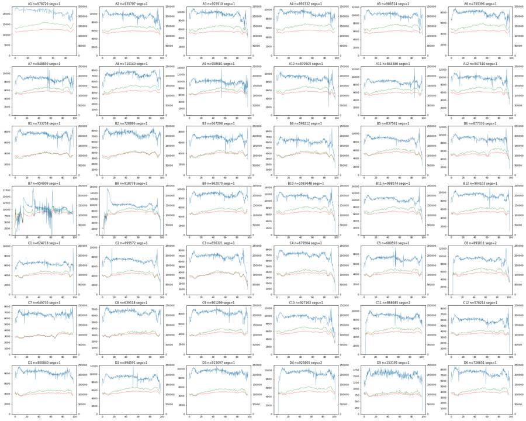
31
tool call · Bash
cd /task/work; cat > plot_zoom.py <<'EOF'
import sys; sys.path.insert(0,'/task/work')
from common import *
import matplotlib; matplotlib.use('Agg'); import matplotlib.pyplot as plt
ws = sys.argv[1].split(',')
fig, axes = plt.subplots(len(ws),4, figsize=(24,4*len(ws)))
def asinh(x, c=150): return np.arcsinh(np.asarray(x)/c)
for row,w in zip(axes, ws):
ev = load(w); t = ev[:,0]/1000.0
seg = np.concatenate([[0], np.cumsum(np.diff(ev[:,0])<0)])
idx = np.arange(len(t))
bw=0.1
for s in range(seg.max()+1):
m = seg==s
h,e = np.histogram(t[m], bins=np.arange(0, t[m].max()+bw, bw))
row[0].plot(e[:-1], h/bw, lw=0.6, label=f'seg{s} n={m.sum()}')
row[0].legend(); row[0].set_title(f'{w} rate (events/s, 0.1s bins)')
# scatter vs event index
sub = slice(None, None, 20)
row[1].scatter(idx[sub], ev[sub,1], s=0.2, alpha=0.3, c='r'); row[1].set_ylim(0, 6e5); row[1].set_title('FSC-A vs event index')
row[2].scatter(idx[sub], asinh(ev[sub,3]), s=0.2, alpha=0.3); row[2].set_title('asinh BL1-A vs event index')
row[3].scatter(idx[sub], asinh(ev[sub,4]), s=0.2, alpha=0.3); row[3].set_title('asinh RL3-A vs event index')
plt.tight_layout(); plt.savefig(sys.argv[2], dpi=45)
EOF
python3 plot_zoom.py B7,B8,C6,C11,D4,A2 zoom1.png32
tool output
(Bash completed with no output)
33
tool call · Read
{
"file_path": "/task/work/zoom1.png"
}34
tool output
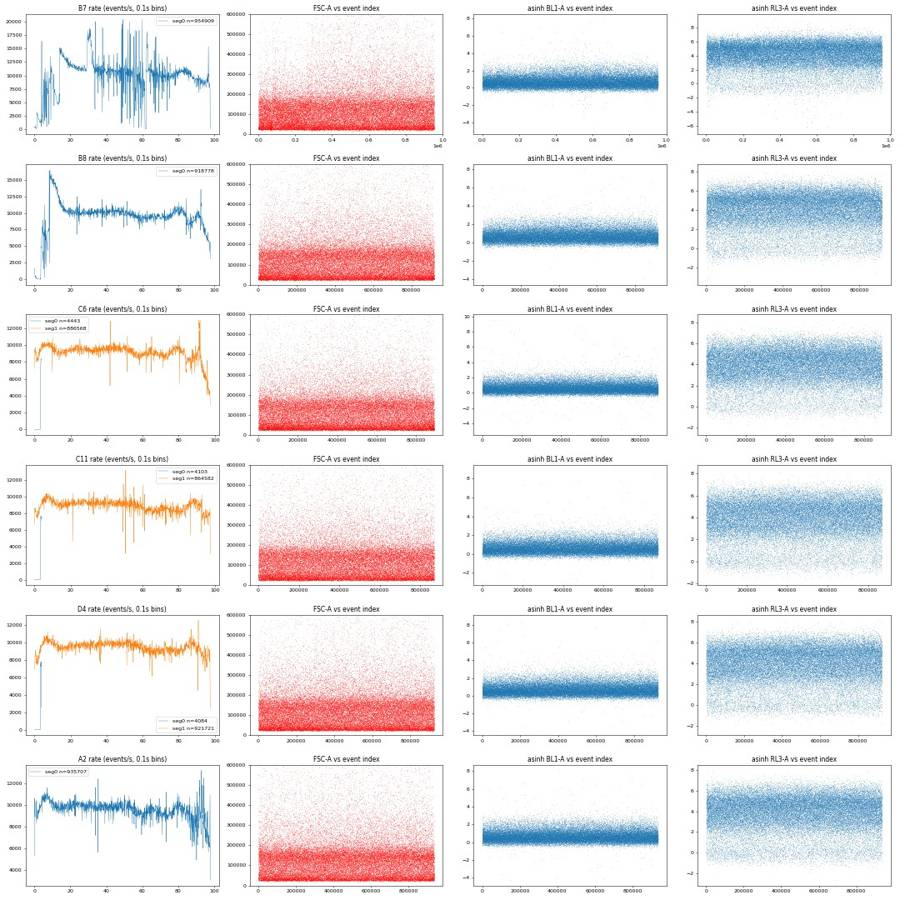
36
tool call · Bash
cd /task/work; python3 - <<'EOF'
import sys; sys.path.insert(0,'/task/work')
from common import *
for w in ['C6','C11','D4']:
ev = load(w); t = ev[:,0]
k = np.where(np.diff(t)<0)[0][0]+1
s0 = ev[:k]; s1 = ev[k:]
print(w, 'seg0 n',k,'time range', s0[:,0].min(), s0[:,0].max(), 'seg1 time range', s1[:,0].min(), s1[:,0].max())
lo, hi = s0[:,0].min(), s0[:,0].max()
print(' seg1 events in seg0 window', ((s1[:,0]>=lo)&(s1[:,0]<=hi)).sum(), ' seg1 events in 0.5s before window', ((s1[:,0]>=lo-500)&(s1[:,0]<lo)).sum())
# duplicates?
a = set(map(tuple, s0[:, 1:6].tolist())); b = set(map(tuple, s1[:, 1:6].tolist()))
print(' seg0 rows duplicated in seg1:', len(a & b))
# compare medians
for c in ['FSC-A','SSC-A','BL1-A','RL3-A','VL1-A']:
i=IDX[c]; print(f' {c}: seg0 med {np.median(s0[:,i]):.0f} seg1 med {np.median(s1[:,i]):.0f}; seg0 p95 {np.percentile(s0[:,i],95):.0f} seg1 p95 {np.percentile(s1[:,i],95):.0f}')
EOF37
tool output
C6 seg0 n 4443 time range 3350.0 3894.0 seg1 time range 14.0 97567.0 seg1 events in seg0 window 5215 seg1 events in 0.5s before window 4696 seg0 rows duplicated in seg1: 0 FSC-A: seg0 med 98137 seg1 med 106892; seg0 p95 249114 seg1 p95 297451 SSC-A: seg0 med 99470 seg1 med 120059; seg0 p95 386568 seg1 p95 466723 BL1-A: seg0 med 87 seg1 med 96; seg0 p95 427 seg1 p95 493 RL3-A: seg0 med 3301 seg1 med 4049; seg0 p95 27006 seg1 p95 32093 VL1-A: seg0 med 1506 seg1 med 2012; seg0 p95 10459 seg1 p95 14387 C11 seg0 n 4103 time range 3345.0 3896.0 seg1 time range 14.0 97535.0 seg1 events in seg0 window 4963 seg1 events in 0.5s before window 4314 seg0 rows duplicated in seg1: 0 FSC-A: seg0 med 101429 seg1 med 111020; seg0 p95 254194 seg1 p95 308803 SSC-A: seg0 med 102487 seg1 med 124974; seg0 p95 374281 seg1 p95 466332 BL1-A: seg0 med 85 seg1 med 95; seg0 p95 355 seg1 p95 456 RL3-A: seg0 med 3421 seg1 med 4294; seg0 p95 27228 seg1 p95 34401 VL1-A: seg0 med 1664 seg1 med 2186; seg0 p95 11223 seg1 p95 17147 D4 seg0 n 4084 time range 3292.0 3836.0 seg1 time range 14.0 97528.0 seg1 events in seg0 window 5042 seg1 events in 0.5s before window 4516 seg0 rows duplicated in seg1: 0 FSC-A: seg0 med 102307 seg1 med 111983; seg0 p95 255327 seg1 p95 324054 SSC-A: seg0 med 102952 seg1 med 126322; seg0 p95 368535 seg1 p95 489356 BL1-A: seg0 med 89 seg1 med 101; seg0 p95 407 seg1 p95 516 RL3-A: seg0 med 3501 seg1 med 4574; seg0 p95 28742 seg1 p95 35483 VL1-A: seg0 med 1398 seg1 med 1945; seg0 p95 9757 seg1 p95 15628
39
tool call · Bash
cd /task/work; python3 - <<'EOF'
import sys, hashlib; sys.path.insert(0,'/task/work')
from common import *
sig = {}
for w in WELLS:
ev = load(w)
h = hashlib.md5(np.ascontiguousarray(ev[:2000,1:6]).tobytes()).hexdigest()
sig.setdefault(h, []).append(w)
# also hash of sorted FSC-A values sample
print([v for v in sig.values() if len(v)>1])
# end-of-run: last 3 s rate vs median, and scatter medians last 2 s vs middle
rows=[]
for w in WELLS:
ev = load(w); t = ev[:,0]/1000
T = t.max()
mid = (t>20)&(t<80)
r = dict(well=w, T=T, mid_rate=mid.sum()/60)
for a,b in [(T-10,T-5),(T-5,T-2),(T-2,T-1),(T-1,T)]:
m=(t>=a)&(t<b); r[f'rate_{T-a:.0f}to{T-b:.0f}']=int(m.sum()/(b-a))
m=(t>=T-2)
r['fsc_last2_rel']=round(np.median(ev[m,1])/np.median(ev[mid,1]),2)
r['ssc_last2_rel']=round(np.median(ev[m,2])/np.median(ev[mid,2]),2)
r['fsc_first3_rel']=round(np.median(ev[t<3,1])/np.median(ev[mid,1]),2)
rows.append(r)
df=pd.DataFrame(rows); pd.set_option('display.width',250); print(df.to_string())
EOF40
tool output
[] well T mid_rate rate_10to5 rate_5to2 rate_2to1 rate_1to0 fsc_last2_rel ssc_last2_rel fsc_first3_rel 0 A1 46.250000 8987.500000 19822 18844 18547 20805 0.95 0.91 0.92 1 A2 97.948997 9624.100000 8552 8827 7610 7169 0.87 0.80 0.95 2 A3 97.657997 9681.100000 7890 8485 6253 5998 0.88 0.81 0.95 3 A4 97.737999 9206.283333 8541 8228 8157 8590 0.95 0.91 0.93 4 A5 97.871002 10098.633333 9561 8611 9663 9857 0.98 0.96 0.95 5 A6 97.106003 7852.350000 7172 6635 7213 7300 0.96 0.92 0.95 6 A7 97.918999 8700.816667 8349 7687 7122 8472 0.94 0.89 0.91 7 A8 97.939003 7387.650000 7248 6245 7186 6496 0.96 0.92 0.86 8 A9 97.820999 9876.266667 9038 8451 9507 9227 0.95 0.91 0.91 9 A10 97.698997 9004.366667 8149 7607 5969 5190 0.82 0.74 0.96 10 A11 97.924004 8660.416667 8080 7725 8618 8977 0.97 0.96 0.94 11 A12 97.898003 9844.916667 8584 8614 6055 5166 0.77 0.67 0.97 12 B1 97.936996 7519.000000 6534 7165 7824 7963 0.94 0.91 0.89 13 B2 97.866997 7423.066667 6830 7054 7832 7285 0.94 0.90 0.88 14 B3 97.940002 6820.666667 6493 6068 6526 6850 0.94 0.90 0.87 15 B4 97.862000 6235.300000 5913 4735 3557 2937 0.70 0.62 0.93 16 B5 97.904999 8676.316667 8370 6766 5608 4685 0.75 0.66 0.93 17 B6 97.835999 9089.800000 9115 6895 5504 4080 0.81 0.73 0.95 18 B7 97.900002 10484.900000 9063 8628 9340 9340 0.99 0.96 0.83 19 B8 97.750999 9844.600000 9496 7793 6229 5369 0.74 0.66 0.31 20 B9 97.961998 8852.183333 8231 8337 9797 8615 1.01 0.99 0.90 21 B10 97.778999 11281.983333 10885 8612 6966 5583 0.71 0.61 0.94 22 B11 97.925003 10279.700000 9771 8254 6941 5636 0.75 0.65 0.95 23 B12 97.778999 9313.350000 8392 9022 9133 8053 0.95 0.92 0.92 24 C1 97.764999 6441.700000 5893 6077 6176 6764 0.96 0.93 0.91 25 C2 97.790001 7299.383333 7068 5172 4260 3306 0.68 0.61 0.91 26 C3 97.719002 6938.016667 6591 4326 2934 2039 0.54 0.46 0.91 27 C4 97.801003 7164.700000 6489 4706 3589 2822 0.67 0.57 0.96 28 C5 97.862000 7092.766667 6598 6724 7120 7274 0.96 0.95 0.90 29 C6 97.567001 9291.816667 9095 6700 5793 4371 0.70 0.61 0.93 30 C7 97.905998 6655.500000 6467 6976 6778 5908 1.06 1.09 0.95 31 C8 97.873001 6581.000000 6022 6102 6574 6678 0.97 0.95 0.92 32 C9 97.900002 8298.633333 7149 8111 7977 7570 0.97 0.95 0.88 33 C10 97.483002 9757.866667 9361 6441 4917 5090 0.62 0.52 0.95 34 C11 97.535004 8878.716667 9146 7916 7353 8149 0.93 0.88 0.93 35 C12 97.754997 5905.333333 5100 5960 5923 4572 0.96 0.92 1.01 36 D1 97.943001 8194.983333 8224 7484 6964 7107 0.90 0.85 0.97 37 D2 97.931999 9196.966667 9600 8404 7133 7462 0.91 0.86 0.91 38 D3 97.745003 9481.266667 9085 8391 8629 8898 0.89 0.83 0.90 39 D4 97.528000 9519.350000 9464 8378 8479 8491 0.91 0.86 0.91 40 D5 97.767998 1597.583333 1540 1339 1378 1359 0.89 0.87 1.01 41 D6 97.928001 7441.616667 7521 6748 6372 6587 0.90 0.85 0.95
42
tool call · Bash
cd /task/work; cat > plot_dens.py <<'EOF'
import sys; sys.path.insert(0,'/task/work')
from common import *
import matplotlib; matplotlib.use('Agg'); import matplotlib.pyplot as plt
from matplotlib.colors import LogNorm
ws = sys.argv[1].split(',')
def asinh(x, c=200): return np.arcsinh(np.asarray(x)/c)/np.log(10)
fig, axes = plt.subplots(len(ws),5, figsize=(25,4.6*len(ws)))
for row,w in zip(np.atleast_2d(axes), ws):
ev = load(w)
f,s,sh,g,r,v = ev[:,1],ev[:,2],ev[:,7],ev[:,3],ev[:,4],ev[:,5]
row[0].hist2d(f, s, bins=[np.linspace(-2e4,1.06e6,300), np.linspace(-2e4,1.06e6,300)], norm=LogNorm(), cmap='jet'); row[0].set_title(f'{w} FSC-A vs SSC-A')
row[1].hist2d(np.log10(np.clip(f,1,None)), np.log10(np.clip(s,1,None)), bins=[np.linspace(4,6.1,300), np.linspace(3,6.1,300)], norm=LogNorm(), cmap='jet'); row[1].set_title('log FSC-A vs log SSC-A')
row[2].hist2d(sh, s, bins=[np.linspace(0,1.06e6,300), np.linspace(0,1.06e6,300)], norm=LogNorm(), cmap='jet'); row[2].set_title('SSC-H vs SSC-A')
row[3].hist2d(asinh(r), np.log10(np.clip(s,1,None)), bins=[np.linspace(-2,4,300), np.linspace(3,6.1,300)], norm=LogNorm(), cmap='jet'); row[3].set_title('asinh RL3-A vs log SSC-A')
row[4].hist2d(asinh(g), np.log10(np.clip(s,1,None)), bins=[np.linspace(-2,4,300), np.linspace(3,6.1,300)], norm=LogNorm(), cmap='jet'); row[4].set_title('asinh BL1-A vs log SSC-A')
plt.tight_layout(); plt.savefig(sys.argv[2], dpi=45)
EOF
python3 plot_dens.py A2,B1,C7,D6 dens1.png43
tool output
(Bash completed with no output)
44
tool call · Read
{
"file_path": "/task/work/dens1.png"
}45
tool output
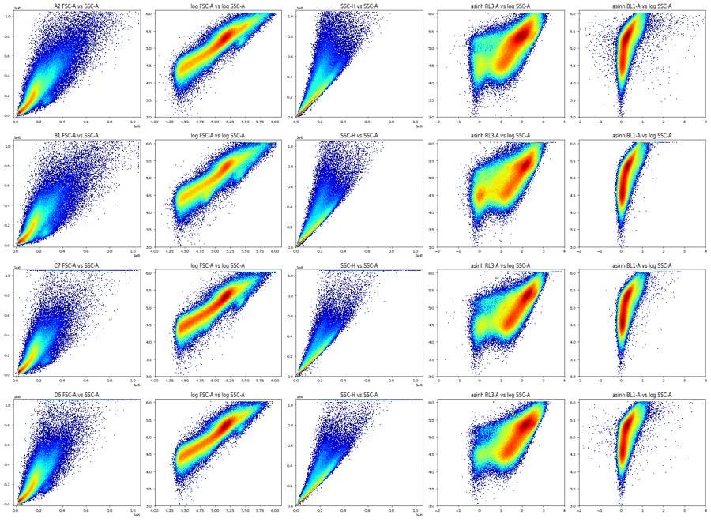
47
thinking
Time-course QC flagged B7 and B8 for flow disturbances, D5 for low event counts, and C6, C11 and D4 for Time resets. I'm now checking the scatter and fluorescence distributions to set the gates.
48
tool call · Bash
cd /task/work; cat > plot_dens2.py <<'EOF'
import sys; sys.path.insert(0,'/task/work')
from common import *
import matplotlib; matplotlib.use('Agg'); import matplotlib.pyplot as plt
from matplotlib.colors import LogNorm
w = sys.argv[1]
def asinh(x, c=200): return np.arcsinh(np.asarray(x)/c)/np.log(10)
ev = load(w)
f,s,sh,g,r,v = ev[:,1],ev[:,2],ev[:,7],ev[:,3],ev[:,4],ev[:,5]
lf, ls = np.log10(np.clip(f,1,None)), np.log10(np.clip(s,1,None))
fig, axes = plt.subplots(2,4, figsize=(24,11))
ax=axes[0,0]; ax.hist2d(lf, ls, bins=[np.linspace(4.3,6.05,250), np.linspace(3.5,6.05,250)], norm=LogNorm(), cmap='jet'); ax.set_title('log FSC vs log SSC all'); ax.grid(alpha=.3)
dead = asinh(r)>1.6
ax=axes[0,1]; ax.hist2d(lf[dead], ls[dead], bins=[np.linspace(4.3,6.05,250), np.linspace(3.5,6.05,250)], norm=LogNorm(), cmap='jet'); ax.set_title('RL3 bright (asinh>1.6)'); ax.grid(alpha=.3)
ax=axes[0,2]; ax.hist2d(lf[~dead], ls[~dead], bins=[np.linspace(4.3,6.05,250), np.linspace(3.5,6.05,250)], norm=LogNorm(), cmap='jet'); ax.set_title('RL3 dim'); ax.grid(alpha=.3)
ax=axes[0,3]; ax.hist2d(asinh(v), asinh(r), bins=[np.linspace(-2,4,250), np.linspace(-2,4,250)], norm=LogNorm(), cmap='jet'); ax.set_title('asinh NCAM vs asinh RL3')
ax=axes[1,0]; ax.hist(asinh(r), bins=400, range=(-2,4), histtype='step'); ax.set_yscale('log'); ax.set_title('asinh RL3 all')
big = (ls>4.8)
ax=axes[1,1]; ax.hist(asinh(r[big]), bins=400, range=(-2,4), histtype='step', label='logSSC>4.8'); ax.hist(asinh(r[~big]), bins=400, range=(-2,4), histtype='step', label='logSSC<4.8'); ax.legend(); ax.set_title('asinh RL3 by SSC')
ax=axes[1,2]; ax.hist2d(asinh(v), ls, bins=[np.linspace(-2,4,250), np.linspace(3.5,6.05,250)], norm=LogNorm(), cmap='jet'); ax.set_title('asinh NCAM vs logSSC')
ax=axes[1,3]; ax.hist2d(asinh(r), lf, bins=[np.linspace(-2,4,250), np.linspace(4.3,6.05,250)], norm=LogNorm(), cmap='jet'); ax.set_title('asinh RL3 vs logFSC')
plt.tight_layout(); plt.savefig(sys.argv[2], dpi=45)
EOF
python3 plot_dens2.py A2 dens2.png49
tool output
(Bash completed with no output)
50
tool call · Read
{
"file_path": "/task/work/dens2.png"
}51
tool output
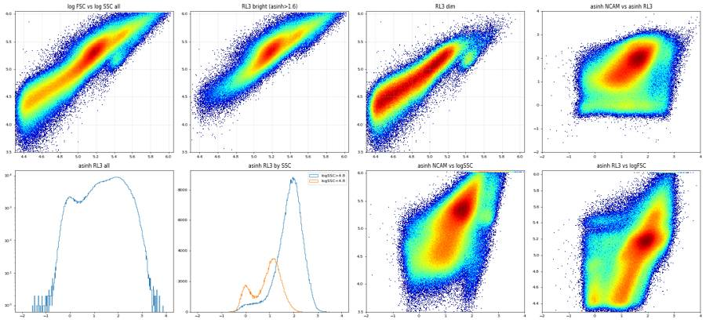
53
tool call · Bash
cd /task/work; cat > plot_lin.py <<'EOF'
import sys; sys.path.insert(0,'/task/work')
from common import *
import matplotlib; matplotlib.use('Agg'); import matplotlib.pyplot as plt
from matplotlib.colors import LogNorm
ws = sys.argv[1].split(',')
def asinh(x, c=200): return np.arcsinh(np.asarray(x)/c)/np.log(10)
fig, axes = plt.subplots(len(ws),4, figsize=(24,6*len(ws)))
for row,w in zip(np.atleast_2d(axes),ws):
ev = load(w)
f,s,sh,g,r,v = ev[:,1],ev[:,2],ev[:,7],ev[:,3],ev[:,4],ev[:,5]
dead = asinh(r)>1.6
b=[np.linspace(0,1.05e6,350), np.linspace(0,1.05e6,350)]
row[0].hist2d(f, s, bins=b, norm=LogNorm(), cmap='jet'); row[0].set_title(f'{w} FSC-A vs SSC-A all'); row[0].grid(alpha=.4)
row[1].hist2d(f[~dead], s[~dead], bins=b, norm=LogNorm(), cmap='jet'); row[1].set_title('RL3 dim'); row[1].grid(alpha=.4)
b2=[np.linspace(0,4e5,300), np.linspace(0,4e5,300)]
row[2].hist2d(f, s, bins=b2, norm=LogNorm(), cmap='jet'); row[2].set_title('zoom all'); row[2].grid(alpha=.4)
row[3].hist2d(f[~dead], s[~dead], bins=b2, norm=LogNorm(), cmap='jet'); row[3].set_title('zoom RL3 dim'); row[3].grid(alpha=.4)
plt.tight_layout(); plt.savefig(sys.argv[2], dpi=45)
EOF
python3 plot_lin.py A2,C7 lin1.png54
tool output
(Bash completed with no output)
55
tool call · Read
{
"file_path": "/task/work/lin1.png"
}56
tool output
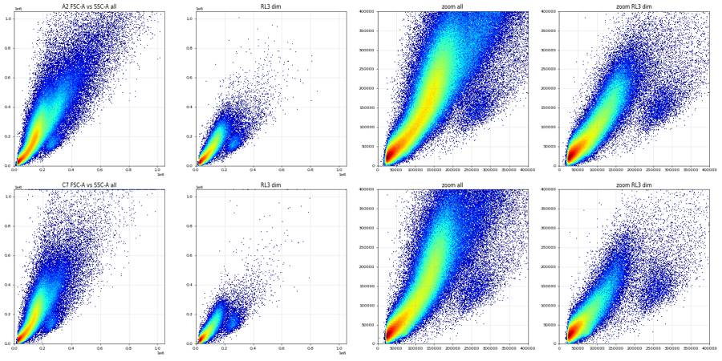
58
tool call · Bash
cd /task/work; cat > plot_rl3.py <<'EOF'
import sys; sys.path.insert(0,'/task/work')
from common import *
import matplotlib; matplotlib.use('Agg'); import matplotlib.pyplot as plt
from matplotlib.colors import LogNorm
from matplotlib.path import Path
ws = sys.argv[1].split(',')
def asinh(x, c=200): return np.arcsinh(np.asarray(x)/c)/np.log(10)
cells_poly = Path([(70e3,20e3),(70e3,150e3),(300e3,1.0e6),(1.0e6,1.0e6),(1.0e6,20e3)])
fig, axes = plt.subplots(len(ws),4, figsize=(24,5.5*len(ws)))
for row,w in zip(np.atleast_2d(axes),ws):
ev = load(w)
f,s,sh,g,r,v = ev[:,1],ev[:,2],ev[:,7],ev[:,3],ev[:,4],ev[:,5]
m = cells_poly.contains_points(np.c_[f,s])
ratio = s/np.maximum(sh,1)
m2 = m & (ratio<1.6)
ar = asinh(r)
row[0].hist2d(ar[m2], np.log10(np.clip(s[m2],1,None)), bins=[np.linspace(-1.5,4,300), np.linspace(4,6.05,300)], norm=LogNorm(), cmap='jet'); row[0].set_title(f'{w} cells/singlet-ish: asinh RL3 vs logSSC')
row[1].hist2d(ar[m2], f[m2], bins=[np.linspace(-1.5,4,300), np.linspace(0,8e5,300)], norm=LogNorm(), cmap='jet'); row[1].set_title('asinh RL3 vs FSC-A lin')
row[2].hist(ar[m2], bins=300, range=(-1.5,4), histtype='step'); row[2].set_title('asinh RL3 (cells, singletish)'); row[2].grid(alpha=.4)
row[3].hist2d(ar[m2], asinh(v[m2]), bins=[np.linspace(-1.5,4,300), np.linspace(-1.5,4,300)], norm=LogNorm(), cmap='jet'); row[3].set_title('asinh RL3 vs asinh NCAM')
for a in row[[0,1,3]]: a.grid(alpha=.4)
plt.tight_layout(); plt.savefig(sys.argv[2], dpi=45)
EOF
python3 plot_rl3.py A2,C7,D5 rl3_1.png59
tool output
(Bash completed with no output)
60
tool call · Read
{
"file_path": "/task/work/rl3_1.png"
}61
tool output
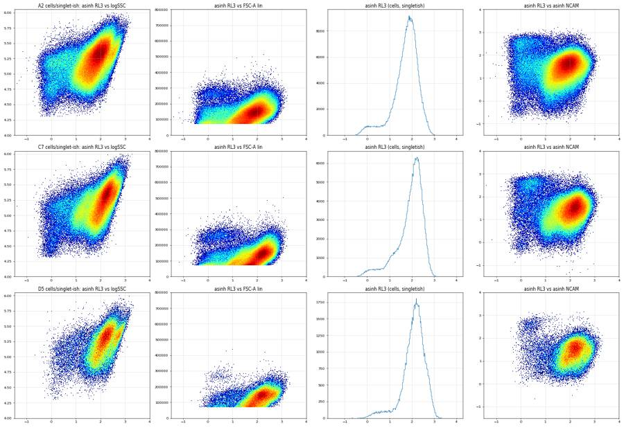
63
tool call · Bash
cd /task/work; cat > plot_fsc.py <<'EOF'
import sys; sys.path.insert(0,'/task/work')
from common import *
import matplotlib; matplotlib.use('Agg'); import matplotlib.pyplot as plt
from matplotlib.colors import LogNorm
fig, axes = plt.subplots(1,3, figsize=(24,7))
for w in WELLS[::3]:
ev = load(w); f=ev[:,1]; s=ev[:,2]
h,e = np.histogram(np.log10(np.clip(f,1,None)), bins=300, range=(4.2,6.1))
axes[0].plot(e[:-1], h/h.sum(), lw=0.7, label=w)
h,e = np.histogram(np.log10(np.clip(s,1,None)), bins=300, range=(3.5,6.1))
axes[1].plot(e[:-1], h/h.sum(), lw=0.7, label=w)
d = np.log10(np.clip(f,1,None)) + np.log10(np.clip(s,1,None))
h,e = np.histogram(d, bins=300, range=(8,12.2))
axes[2].plot(e[:-1], h/h.sum(), lw=0.7, label=w)
axes[0].set_title('log FSC-A'); axes[1].set_title('log SSC-A'); axes[2].set_title('logFSC+logSSC')
for a in axes: a.grid(alpha=.4); a.legend(fontsize=7)
plt.tight_layout(); plt.savefig('fsc_hist.png', dpi=50)
EOF
python3 plot_fsc.py64
tool output
(Bash completed with no output)
65
tool call · Read
{
"file_path": "/task/work/fsc_hist.png"
}66
tool output
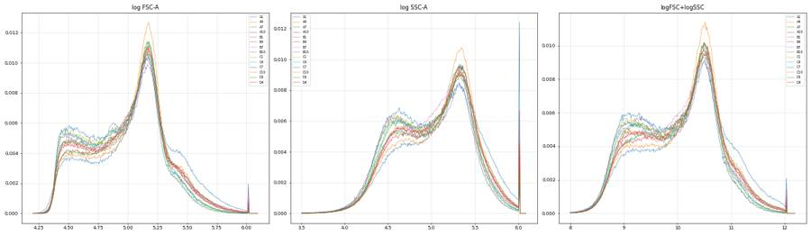
68
tool call · Bash
cd /task/work; cat > gates_def.py <<'EOF'
import numpy as np
# Cells polygon in raw FSC-A (x), SSC-A (y)
CELLS = [(75000, 20000), (130000, 20000), (1000000, 400000), (1000000, 1000000), (330000, 1000000), (60000, 250000), (55000, 120000)]
EOF
cat > plot_cells.py <<'EOF'
import sys; sys.path.insert(0,'/task/work')
from common import *
import importlib, gates_def; importlib.reload(gates_def)
import matplotlib; matplotlib.use('Agg'); import matplotlib.pyplot as plt
from matplotlib.colors import LogNorm
from matplotlib.path import Path
ws = sys.argv[1].split(',')
P = np.array(gates_def.CELLS + [gates_def.CELLS[0]])
path = Path(gates_def.CELLS)
def asinh(x, c=200): return np.arcsinh(np.asarray(x)/c)/np.log(10)
fig, axes = plt.subplots(len(ws),4, figsize=(24,6*len(ws)))
for row,w in zip(np.atleast_2d(axes),ws):
ev = load(w); f,s,r = ev[:,1],ev[:,2],ev[:,4]
m = path.contains_points(np.c_[f,s])
dim = asinh(r) < 0.8
row[0].hist2d(f, s, bins=[np.linspace(0,1.05e6,350)]*2, norm=LogNorm(), cmap='jet'); row[0].plot(P[:,0],P[:,1],'k-'); row[0].set_title(f'{w} all; in gate {100*m.mean():.1f}%')
row[1].hist2d(f, s, bins=[np.linspace(0,4e5,300)]*2, norm=LogNorm(), cmap='jet'); row[1].plot(P[:,0],P[:,1],'k-'); row[1].set_xlim(0,4e5); row[1].set_ylim(0,4e5)
row[2].hist2d(f[dim], s[dim], bins=[np.linspace(0,4e5,300)]*2, norm=LogNorm(), cmap='jet'); row[2].plot(P[:,0],P[:,1],'k-'); row[2].set_xlim(0,4e5); row[2].set_ylim(0,4e5); row[2].set_title('RL3 dim (asinh<0.8)')
lf, ls = np.log10(np.clip(f,1,None)), np.log10(np.clip(s,1,None))
row[3].hist2d(lf, ls, bins=[np.linspace(4.3,6.05,250), np.linspace(3.5,6.05,250)], norm=LogNorm(), cmap='jet')
PP = np.array([(P[i]+(P[i+1]-P[i])*t) for i in range(len(P)-1) for t in np.linspace(0,1,50)])
row[3].plot(np.log10(PP[:,0]), np.log10(PP[:,1]), 'k-')
for a in row: a.grid(alpha=.4)
plt.tight_layout(); plt.savefig(sys.argv[2], dpi=45)
EOF
python3 plot_cells.py A2,B4,D5 cells1.png69
tool output
(Bash completed with no output)
70
tool call · Read
{
"file_path": "/task/work/cells1.png"
}71
tool output
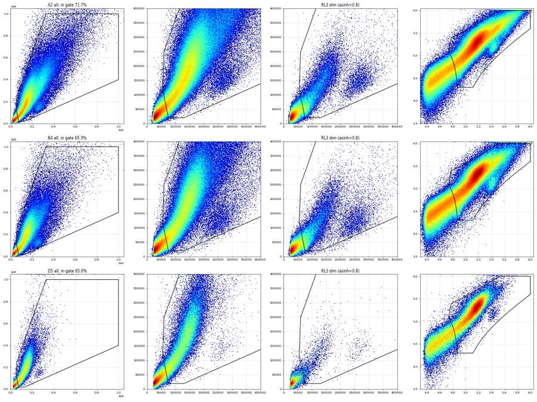
73
tool call · Bash
cd /task/work; cat > gates_def.py <<'EOF'
import numpy as np
# Cells polygon in raw FSC-A (x), SSC-A (y)
CELLS = [(75000, 15000), (130000, 15000), (1000000, 300000), (1000000, 1000000), (250000, 1000000), (55000, 300000), (55000, 120000)]
EOF
cat > plot_sing.py <<'EOF'
import sys; sys.path.insert(0,'/task/work')
from common import *
import gates_def
import matplotlib; matplotlib.use('Agg'); import matplotlib.pyplot as plt
from matplotlib.colors import LogNorm
from matplotlib.path import Path
ws = sys.argv[1].split(',')
path = Path(gates_def.CELLS)
SP = getattr(gates_def,'SING',None)
def asinh(x, c=200): return np.arcsinh(np.asarray(x)/c)/np.log(10)
fig, axes = plt.subplots(len(ws),4, figsize=(24,6*len(ws)))
for row,w in zip(np.atleast_2d(axes),ws):
ev = load(w); f,s,sh,r = ev[:,1],ev[:,2],ev[:,7],ev[:,4]
m = path.contains_points(np.c_[f,s])
row[0].hist2d(sh[m], s[m], bins=[np.linspace(0,1.05e6,350)]*2, norm=LogNorm(), cmap='jet'); row[0].set_title(f'{w} cells: SSC-H vs SSC-A')
row[1].hist2d(sh[m], s[m], bins=[np.linspace(0,4e5,300), np.linspace(0,6e5,300)], norm=LogNorm(), cmap='jet')
ratio = s[m]/np.maximum(sh[m],1)
row[2].hist(ratio, bins=400, range=(0.5,3.5), histtype='step'); row[2].set_title('SSC-A/SSC-H')
row[3].hist2d(np.log10(np.clip(sh[m],1,None)), ratio, bins=[np.linspace(4,6.05,300), np.linspace(0.5,3,300)], norm=LogNorm(), cmap='jet'); row[3].set_title('log SSC-H vs ratio')
if SP is not None:
P=np.array(SP+[SP[0]]); row[0].plot(P[:,0],P[:,1],'k-'); row[1].plot(P[:,0],P[:,1],'k-'); row[1].set_xlim(0,4e5); row[1].set_ylim(0,6e5)
ms = Path(SP).contains_points(np.c_[sh[m],s[m]]); row[1].set_title(f'singlets {100*ms.mean():.1f}% of cells')
for a in row: a.grid(alpha=.4)
plt.tight_layout(); plt.savefig(sys.argv[2], dpi=45)
EOF
python3 plot_sing.py A2,A1,D5 sing1.png74
tool output
(Bash completed with no output)
75
tool call · Read
{
"file_path": "/task/work/sing1.png"
}76
tool output
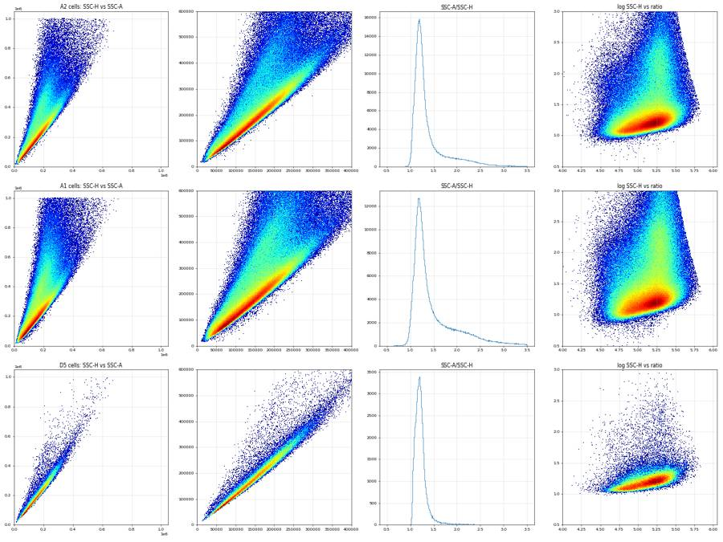
78
tool call · Bash
cd /task/work; cat >> gates_def.py <<'EOF' # Singlets polygon in raw SSC-H (x), SSC-A (y) SING = [(10000, 9000), (1000000, 900000), (1000000, 1040000), (680000, 1040000), (200000, 300000), (50000, 67500), (10000, 13500)] EOF python3 plot_sing.py A2,A1,B7 sing2.png
79
tool output
(Bash completed with no output)
80
tool call · Read
{
"file_path": "/task/work/sing2.png"
}81
tool output
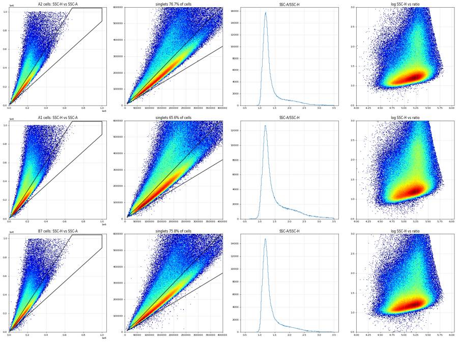
83
tool call · Bash
cd /task/work; cat > sing_cache.py <<'EOF'
# compute cells & singlets masks (numpy, matplotlib Path) for exploration
import sys; sys.path.insert(0,'/task/work')
from common import *
import gates_def
from matplotlib.path import Path
import os
os.makedirs('masks', exist_ok=True)
pc = Path(gates_def.CELLS); ps = Path(gates_def.SING)
for w in WELLS:
ev = load(w)
mc = pc.contains_points(np.c_[ev[:,1],ev[:,2]])
ms = mc & ps.contains_points(np.c_[ev[:,7],ev[:,2]])
np.save(f'masks/{w}_sing.npy', ms)
print(w, len(ev), mc.sum(), ms.sum(), flush=True)
EOF
python3 sing_cache.py | column -t | head -5084
tool output
/bin/bash: line 33: column: command not found
Traceback (most recent call last):
File "/task/work/sing_cache.py", line 14, in <module>
print(w, len(ev), mc.sum(), ms.sum(), flush=True)
BrokenPipeError: [Errno 32] Broken pipe
Exception ignored in: <_io.TextIOWrapper name='<stdout>' mode='w' encoding='utf-8'>
BrokenPipeError: [Errno 32] Broken pipe85
tool call · Bash
cd /task/work; python3 sing_cache.py | tail -42 | tr '\n' ';'
86
tool output
A1 978726 723155 474224;A2 935707 674105 516764;A3 925910 674158 527016;A4 892332 655414 508870;A5 986514 713949 545954;A6 755396 553193 448773;A7 848859 607022 466949;A8 710140 515264 414774;A9 958681 668063 487386;A10 870505 621457 474691;A11 844586 585669 463812;A12 947510 660821 508702;B1 733754 490376 371157;B2 728886 484036 367506;B3 667298 443771 353868;B4 598212 393457 323770;B5 837561 572759 448964;B6 877336 591369 456230;B7 954909 657373 498162;B8 918778 629160 484066;B9 862070 603020 469283;B10 1083648 747136 559746;B11 988574 677063 523301;B12 904103 613205 478646;C1 624718 407640 344136;C2 695572 452694 371856;C3 656321 425764 340548;C4 679504 452918 371012;C5 689593 459101 380334;C6 891011 592444 465653;C7 649735 411067 338640;C8 639518 414233 342931;C9 801299 544577 429401;C10 927162 639481 494043;C11 868685 597739 469266;C12 578214 393123 332329;D1 800840 541273 433113;D2 894591 614598 483882;D3 915097 626227 476330;D4 925805 645294 498665;D5 153195 100391 95468;D6 726651 491214 408743;
88
agent
Cells and Singlets polygons are drafted; about 75% of Cells pass the Singlets gate. Next I'm looking at Zombie NIR across all wells to place the Live cut-off.
89
tool call · Bash
cd /task/work; cat > plot_rl3all.py <<'EOF'
import sys; sys.path.insert(0,'/task/work')
from common import *
import matplotlib; matplotlib.use('Agg'); import matplotlib.pyplot as plt
from matplotlib.colors import LogNorm
def asinh(x, c=200): return np.arcsinh(np.asarray(x)/c)/np.log(10)
fig, axes = plt.subplots(2,2, figsize=(22,14))
H=[]
for w in WELLS:
ev = load(w); ms = np.load(f'masks/{w}_sing.npy')
r = ev[ms,4]
h,e = np.histogram(asinh(r), bins=300, range=(-1.5,3.5))
H.append(h/h.sum())
lw = 1.5 if w in ('A1','B7','B8','D5','C6') else 0.5
axes[0,0].plot(e[:-1], h/h.sum(), lw=lw, label=w if lw>1 else None)
axes[0,0].set_yscale('log'); axes[0,0].legend(); axes[0,0].set_title('asinh(RL3/200)/ln10 on singlets, all wells (log y)')
axes[0,1].imshow(np.log10(np.array(H)+1e-6), aspect='auto', extent=[-1.5,3.5,len(WELLS),0], cmap='jet'); axes[0,1].set_yticks(np.arange(len(WELLS))+0.5); axes[0,1].set_yticklabels(WELLS, fontsize=7)
for ax,w in zip(axes[1], ['A5','C7']):
ev = load(w); ms = np.load(f'masks/{w}_sing.npy')
ax.hist2d(asinh(ev[ms,4]), np.log10(np.clip(ev[ms,2],1,None)), bins=[np.linspace(-1.5,3.5,300), np.linspace(4,6.05,300)], norm=LogNorm(), cmap='jet'); ax.set_title(w)
for a in axes.flat: a.grid(alpha=.4)
ticks = [0,100,300,1000,3000,10000,30000,100000]
axes[0,0].set_xticks(asinh(np.array(ticks))); axes[0,0].set_xticklabels(ticks)
plt.tight_layout(); plt.savefig('rl3_all.png', dpi=45)
EOF
python3 plot_rl3all.py90
tool output
(Bash completed with no output)
91
tool call · Read
{
"file_path": "/task/work/rl3_all.png"
}92
tool output
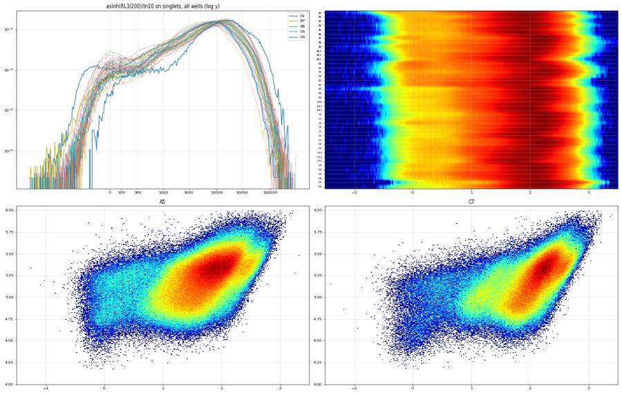
94
tool call · Bash
cd /task/work; cat > rl3_valley.py <<'EOF'
import sys; sys.path.insert(0,'/task/work')
from common import *
from scipy.ndimage import gaussian_filter1d
import matplotlib; matplotlib.use('Agg'); import matplotlib.pyplot as plt
def asinh(x, c=200): return np.arcsinh(np.asarray(x)/c)/np.log(10)
fig, axes = plt.subplots(7,6, figsize=(30,24))
res=[]
for ax,w in zip(axes.flat, WELLS):
ev = load(w); ms = np.load(f'masks/{w}_sing.npy')
a = asinh(ev[ms,4]); s = np.log10(np.clip(ev[ms,2],1,None))
for lo,hi,col in [(4.0,4.85,'b'),(4.85,5.2,'g'),(5.2,6.1,'r'),(0,9,'k')]:
m=(s>=lo)&(s<hi)
h,e = np.histogram(a[m], bins=250, range=(-1,2)); c=(e[:-1]+e[1:])/2
hs = gaussian_filter1d(h.astype(float), 3)
ax.plot(c, hs/hs.max(), col, lw=1)
if col=='k':
sel=(c>0.2)&(c<1.4); i=np.argmin(hs[sel]); vmin=c[sel][i]
res.append((w, round(vmin,3), round(200*np.sinh(vmin*np.log(10)))))
ax.axvline(vmin, color='k', ls=':')
ax.set_title(f'{w} valley(all) asinh={vmin:.2f} raw={200*np.sinh(vmin*np.log(10)):.0f}'); ax.grid(alpha=.4)
plt.tight_layout(); plt.savefig('rl3_valley.png', dpi=45)
print(res)
EOF
python3 rl3_valley.py95
tool output
[('A1', 0.206, 98), ('A2', 0.518, 299), ('A3', 0.314, 158), ('A4', 0.206, 98), ('A5', 0.302, 151), ('A6', 0.398, 210), ('A7', 0.338, 172), ('A8', 0.35, 179), ('A9', 0.302, 151), ('A10', 0.41, 218), ('A11', 0.206, 98), ('A12', 0.206, 98), ('B1', 0.422, 226), ('B2', 0.446, 243), ('B3', 0.362, 187), ('B4', 0.206, 98), ('B5', 0.206, 98), ('B6', 0.218, 105), ('B7', 0.206, 98), ('B8', 0.206, 98), ('B9', 0.206, 98), ('B10', 0.206, 98), ('B11', 0.206, 98), ('B12', 0.206, 98), ('C1', 0.206, 98), ('C2', 0.206, 98), ('C3', 0.434, 235), ('C4', 0.206, 98), ('C5', 0.242, 117), ('C6', 0.206, 98), ('C7', 0.206, 98), ('C8', 0.206, 98), ('C9', 0.206, 98), ('C10', 0.206, 98), ('C11', 0.206, 98), ('C12', 0.482, 270), ('D1', 0.398, 210), ('D2', 0.206, 98), ('D3', 0.206, 98), ('D4', 0.23, 111), ('D5', 0.206, 98), ('D6', 0.206, 98)]96
tool call · Read
{
"file_path": "/task/work/rl3_valley.png"
}97
tool output
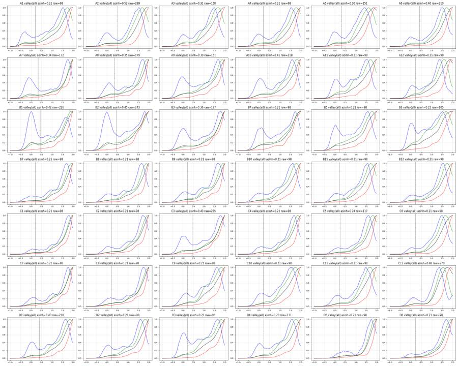
99
tool call · Bash
cd /task/work; cat > island.py <<'EOF'
import sys; sys.path.insert(0,'/task/work')
from common import *
from matplotlib.path import Path
import matplotlib; matplotlib.use('Agg'); import matplotlib.pyplot as plt
from matplotlib.colors import LogNorm
def asinh(x, c=200): return np.arcsinh(np.asarray(x)/c)/np.log(10)
ws=sys.argv[1].split(',')
fig, axes = plt.subplots(len(ws),5, figsize=(30,5.5*len(ws)))
for row,w in zip(np.atleast_2d(axes),ws):
ev = load(w); ms = np.load(f'masks/{w}_sing.npy')
f,s,g,r,v = ev[ms,1],ev[ms,2],ev[ms,3],ev[ms,4],ev[ms,5]
lf, ls = np.log10(np.clip(f,1,None)), np.log10(np.clip(s,1,None))
ar, ag, av = asinh(r), asinh(g), asinh(v)
isl = (f>200e3)&(f<400e3)&(s>90e3)&(s<200e3)&(s < 0.75*f)
row[0].hist2d(f, s, bins=[np.linspace(0,6e5,250)]*2, norm=LogNorm(), cmap='jet'); row[0].set_title(f'{w} singlets FSC vs SSC')
for lo,hi,lab in [(-9,0.6,'RL3<0.6'),(0.6,1.2,'0.6-1.2'),(1.2,9,'>1.2')]:
m=(ar>=lo)&(ar<hi)
row[1].hist2d if False else None
m=(ar<0.6); row[1].hist2d(f[m], s[m], bins=[np.linspace(0,6e5,250)]*2, norm=LogNorm(), cmap='jet'); row[1].set_title(f'RL3 asinh<0.6 ({100*m.mean():.1f}%)')
m=(ar>=0.6)&(ar<1.2); row[2].hist2d(f[m], s[m], bins=[np.linspace(0,6e5,250)]*2, norm=LogNorm(), cmap='jet'); row[2].set_title(f'RL3 0.6-1.2 ({100*m.mean():.1f}%)')
m=(ar>=1.2); row[3].hist2d(f[m], s[m], bins=[np.linspace(0,6e5,250)]*2, norm=LogNorm(), cmap='jet'); row[3].set_title(f'RL3 >1.2 ({100*m.mean():.1f}%)')
row[4].hist(ar[isl], bins=200, range=(-1,3.2), histtype='step', density=True, label='FSC/SSC island'); row[4].hist(ar[~isl], bins=200, range=(-1,3.2), histtype='step', density=True, label='rest'); row[4].legend(); row[4].set_title(f'island n={isl.sum()}')
for a in row: a.grid(alpha=.4)
plt.tight_layout(); plt.savefig(sys.argv[2], dpi=45)
EOF
python3 island.py A5,B1,C7 island.png100
tool output
(Bash completed with no output)
101
tool call · Read
{
"file_path": "/task/work/island.png"
}102
tool output
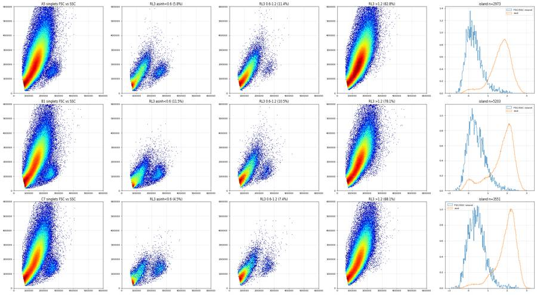
104
tool call · Bash
cd /task/work; cat > rl3_2d.py <<'EOF'
import sys; sys.path.insert(0,'/task/work')
from common import *
import matplotlib; matplotlib.use('Agg'); import matplotlib.pyplot as plt
from matplotlib.colors import LogNorm
from scipy.ndimage import gaussian_filter1d
def asinh(x, c=200): return np.arcsinh(np.asarray(x)/c)/np.log(10)
ws = ['A5','A11','B1','B6','C9','D3']
fig, axes = plt.subplots(3,6, figsize=(36,16))
for j,w in enumerate(ws):
ev = load(w); ms = np.load(f'masks/{w}_sing.npy')
f,s,r,v = ev[ms,1],ev[ms,2],ev[ms,4],ev[ms,5]
ar=asinh(r)
axes[0,j].hist2d(ar, f, bins=[np.linspace(-1,3.2,300), np.linspace(5e4,4.5e5,300)], norm=LogNorm(), cmap='jet'); axes[0,j].set_title(f'{w} RL3 vs FSC-A')
axes[1,j].hist2d(ar, asinh(v), bins=[np.linspace(-1,3.2,300), np.linspace(-1,3.5,300)], norm=LogNorm(), cmap='jet'); axes[1,j].set_title('RL3 vs NCAM')
for lo,hi in [(5e4,1.2e5),(1.2e5,1.8e5),(1.8e5,2.4e5),(2.4e5,4e5)]:
m=(f>=lo)&(f<hi); h,e=np.histogram(ar[m], bins=250, range=(-1,3.2)); hs=gaussian_filter1d(h.astype(float),2)
axes[2,j].plot((e[:-1]+e[1:])/2, hs/hs.sum(), label=f'FSC {lo/1e3:.0f}-{hi/1e3:.0f}k n={m.sum()}')
axes[2,j].set_yscale('log'); axes[2,j].set_ylim(1e-5, 3e-2); axes[2,j].legend(fontsize=8)
for a in axes[:,j]:
a.grid(alpha=.4)
for x in [0.8,0.9,1.0]: a.axvline(x, color='k', lw=0.5)
plt.tight_layout(); plt.savefig('rl3_2d.png', dpi=40)
EOF
python3 rl3_2d.py105
tool output
(Bash completed with no output)
106
tool call · Read
{
"file_path": "/task/work/rl3_2d.png"
}107
tool output
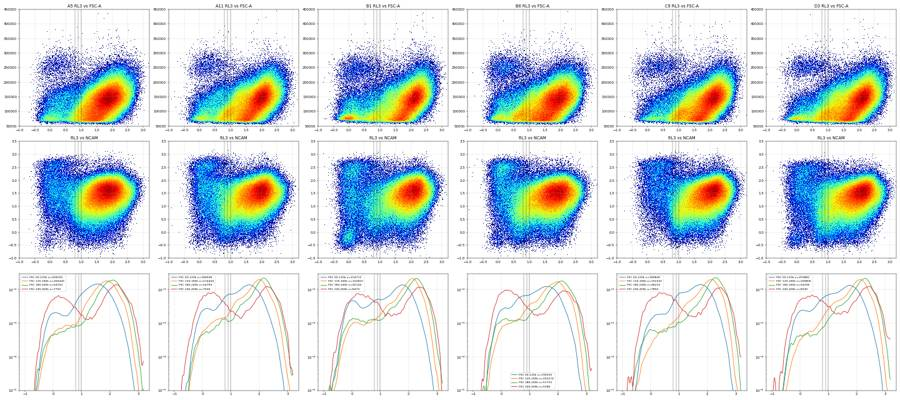
109
tool call · Bash
cd /task/work; cat > rl3_min.py <<'EOF'
import sys; sys.path.insert(0,'/task/work')
from common import *
from scipy.ndimage import gaussian_filter1d
def asinh(x, c=200): return np.arcsinh(np.asarray(x)/c)/np.log(10)
out=[]
for w in WELLS:
ev = load(w); ms = np.load(f'masks/{w}_sing.npy')
f,s,r = ev[ms,1],ev[ms,2],ev[ms,4]; ar=asinh(r)
res=[w]
for name,m in [('all',np.ones(len(f),bool)),('fsc>180k',f>180e3),('fsc>240k',f>240e3),('ssc<10^4.9',s<10**4.9)]:
h,e=np.histogram(ar[m], bins=300, range=(-1,3.2)); c=(e[:-1]+e[1:])/2
hs=gaussian_filter1d(h.astype(float),4)
sel=(c>0.4)&(c<1.6); i=np.argmin(hs[sel]); res.append(round(c[sel][i],2))
# fraction of singlets below candidate cutoffs
for cut in [600,800,1000,1200]:
res.append(round(100*(r<cut).mean(),2))
out.append(res)
df=pd.DataFrame(out, columns=['well','min_all','min_fsc180','min_fsc240','min_lowssc','pct<600','pct<800','pct<1000','pct<1200'])
print(df.to_string()); print(df.describe().loc[['mean','50%','std']])
EOF
python3 rl3_min.py110
tool output
well min_all min_fsc180 min_fsc240 min_lowssc pct<600 pct<800 pct<1000 pct<1200
0 A1 0.41 0.41 1.02 0.41 11.78 14.19 16.45 18.52
1 A2 0.48 1.09 1.36 0.56 7.36 8.60 9.92 11.39
2 A3 0.41 0.92 1.12 0.41 8.65 10.87 13.02 15.11
3 A4 0.41 1.08 1.30 0.45 7.32 8.79 10.26 11.73
4 A5 0.41 0.92 1.19 0.45 7.62 9.39 11.30 13.31
5 A6 0.41 0.92 1.39 0.45 6.23 7.55 8.94 10.33
6 A7 0.41 0.41 1.44 0.50 9.07 10.37 11.56 12.58
7 A8 0.41 1.09 1.50 0.52 8.45 10.07 11.53 12.79
8 A9 0.41 0.41 1.34 0.44 11.33 13.42 15.25 16.86
9 A10 0.41 1.18 1.36 0.55 9.20 10.89 12.53 14.02
10 A11 0.41 0.97 1.34 0.41 10.74 13.31 15.61 17.67
11 A12 0.41 0.90 1.08 0.41 9.88 12.42 14.83 17.13
12 B1 0.41 1.05 1.40 0.46 14.20 16.28 18.00 19.46
13 B2 0.42 0.81 1.40 0.60 12.82 14.69 16.35 17.81
14 B3 0.41 1.20 1.43 0.58 8.83 10.20 11.49 12.69
15 B4 0.41 1.12 1.40 0.56 10.80 12.58 14.10 15.46
16 B5 0.41 0.87 1.30 0.42 12.17 14.42 16.38 18.25
17 B6 0.41 0.86 1.26 0.41 13.69 16.62 19.17 21.51
18 B7 0.41 0.84 1.44 0.45 5.36 6.84 8.42 9.89
19 B8 0.41 0.62 1.34 0.41 6.29 8.00 9.53 10.92
20 B9 0.41 0.62 1.46 0.46 6.63 8.48 10.29 11.93
21 B10 0.41 0.41 1.32 0.41 6.15 7.87 9.55 11.12
22 B11 0.41 0.49 1.26 0.41 6.38 8.24 10.02 11.83
23 B12 0.41 0.62 1.23 0.41 5.47 6.87 8.28 9.72
24 C1 0.41 1.15 1.56 0.41 3.84 4.74 5.73 6.78
25 C2 0.41 1.01 1.40 0.48 5.20 6.41 7.62 8.84
26 C3 0.42 0.42 1.48 0.50 7.89 9.29 10.66 11.89
27 C4 0.41 0.84 1.48 0.52 5.25 6.54 7.90 9.24
28 C5 0.41 0.80 1.36 0.46 4.69 5.87 7.09 8.31
29 C6 0.41 0.76 1.32 0.41 4.77 6.26 7.84 9.45
30 C7 0.41 1.18 1.58 0.52 5.77 7.03 8.36 9.68
31 C8 0.41 1.19 1.60 0.62 6.13 7.42 8.68 9.89
32 C9 0.41 1.09 1.54 0.50 7.14 9.20 11.32 13.36
33 C10 0.41 0.48 1.36 0.49 6.76 8.67 10.65 12.59
34 C11 0.41 0.73 1.46 0.49 5.93 7.33 8.83 10.40
35 C12 0.52 1.04 1.30 0.58 4.80 5.86 7.17 8.73
36 D1 0.41 0.95 1.51 0.44 6.90 8.65 10.37 11.94
37 D2 0.41 0.86 1.34 0.41 7.01 8.79 10.41 11.92
38 D3 0.41 0.69 1.40 0.41 9.77 12.26 14.60 16.73
39 D4 0.41 0.80 1.39 0.42 7.09 9.03 10.93 12.72
40 D5 0.41 0.74 1.16 1.02 3.53 4.23 4.80 5.24
41 D6 0.41 0.77 1.42 0.41 3.32 4.25 5.19 6.14
min_all min_fsc180 min_fsc240 ... pct<800 pct<1000 pct<1200
mean 0.414762 0.840714 1.365238 ... 9.352143 10.974524 12.520952
50% 0.410000 0.860000 1.375000 ... 8.730000 10.390000 11.925000
std 0.019907 0.244085 0.128048 ... 3.150945 3.463144 3.725487
[3 rows x 8 columns]112
tool call · Bash
cd /task/work; python3 -c "
import flowkit as fk, inspect
print(inspect.signature(fk.transforms.LogicleTransform.__init__))
print(inspect.signature(fk.Dimension.__init__))
print(inspect.signature(fk.gates.RectangleGate.__init__))
print(inspect.signature(fk.gates.PolygonGate.__init__))
print(inspect.signature(fk.GatingStrategy.add_gate))
print([m for m in dir(fk.GatingStrategy) if not m.startswith('_')])
"113
tool output
(self, param_t, param_w, param_m, param_a) (self, dimension_id, compensation_ref='uncompensated', transformation_ref=None, range_min=None, range_max=None) (self, gate_name, dimensions, use_complement=False) (self, gate_name, dimensions, vertices, use_complement=False) (self, gate, gate_path, sample_id=None) ['add_comp_matrix', 'add_gate', 'add_transform', 'clear_cache', 'export_gate_hierarchy_image', 'find_matching_gate_paths', 'gate_sample', 'get_child_gate_ids', 'get_comp_matrix', 'get_gate', 'get_gate_hierarchy', 'get_gate_ids', 'get_max_depth', 'get_parent_gate_id', 'get_root_gates', 'get_transform', 'is_custom_gate', 'remove_gate', 'rename_gate', 'resolver']
114
tool call · Bash
cd /task/work; cat > plot_live.py <<'EOF'
import sys; sys.path.insert(0,'/task/work')
from common import *
import flowkit as fk
import matplotlib; matplotlib.use('Agg'); import matplotlib.pyplot as plt
from matplotlib.colors import LogNorm
xf = fk.transforms.LogicleTransform(param_t=1048576, param_w=0.75, param_m=5.4, param_a=0)
ws = sys.argv[1].split(','); cuts=[float(c) for c in sys.argv[3].split(',')]
ch = int(sys.argv[4]) if len(sys.argv)>4 else 4
mask_suffix = sys.argv[5] if len(sys.argv)>5 else 'sing'
fig, axes = plt.subplots(2,len(ws), figsize=(6*len(ws),11))
ticks=[-1000,0,100,1000,1e4,1e5,1e6]; tpos = xf.apply(np.array(ticks,float))
for j,w in enumerate(ws):
ev = load(w); ms = np.load(f'masks/{w}_{mask_suffix}.npy')
x = xf.apply(ev[ms,ch].astype(float)); s = ev[ms,2]
axes[0,j].hist2d(x, np.log10(np.clip(s,1,None)), bins=[np.linspace(0.05,1.0,300), np.linspace(4.2,6.05,250)], norm=LogNorm(), cmap='jet')
axes[0,j].set_title(f'{w} n={ms.sum()}'); axes[0,j].set_xticks(tpos); axes[0,j].set_xticklabels([str(int(t)) for t in ticks])
h,e=np.histogram(x, bins=300, range=(0.05,1.0)); axes[1,j].plot((e[:-1]+e[1:])/2, h); axes[1,j].set_xticks(tpos); axes[1,j].set_xticklabels([str(int(t)) for t in ticks])
if len(sys.argv)>6: axes[1,j].set_yscale('log')
for c,col in zip(cuts, ['k','m','r','w']):
xc = xf.apply(np.array([c]))[0]
for a in axes[:,j]: a.axvline(xc, color=col, lw=0.8)
axes[1,j].text(xc, h.max()*0.9, f'{c:.0f}: {100*(ev[ms,ch]<c).mean():.1f}%<', fontsize=8, color=col, rotation=90)
for a in axes[:,j]: a.grid(alpha=.3)
plt.tight_layout(); plt.savefig(sys.argv[2], dpi=45)
EOF
python3 plot_live.py A5,B1,C7,D3,B12 live1.png 600,800,1000,1300115
tool output
(Bash completed with no output)
116
tool call · Read
{
"file_path": "/task/work/live1.png"
}117
tool output
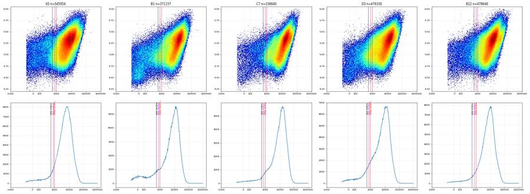
119
tool call · Bash
cd /task/work; cat > rl3_min2.py <<'EOF'
import sys; sys.path.insert(0,'/task/work')
from common import *
import flowkit as fk
from scipy.ndimage import gaussian_filter1d
xf = fk.transforms.LogicleTransform(param_t=1048576, param_w=0.75, param_m=5.4, param_a=0)
inv = lambda y: xf.inverse(np.array([y]))[0]
bands=[(4.5,4.7),(4.7,4.9),(4.9,5.1),(5.1,5.3)]
rows=[]
for w in WELLS:
ev = load(w); ms = np.load(f'masks/{w}_sing.npy')
x = xf.apply(ev[ms,4].astype(float)); s=np.log10(np.clip(ev[ms,2],1,None))
r=[w]
for lo,hi in bands:
m=(s>=lo)&(s<hi)
h,e=np.histogram(x[m], bins=200, range=(0.1,0.9)); c=(e[:-1]+e[1:])/2
hs=gaussian_filter1d(h.astype(float),3)
# dim mode: max in raw<300 ; bright mode: global max
dimsel = c < xf.apply(np.array([300.]))[0]
idim = np.argmax(np.where(dimsel, hs, -1)); ibr = np.argmax(hs)
seg = hs[idim:ibr+1]; imin = idim+np.argmin(seg)
r.append(round(inv(c[imin])))
rows.append(r)
df=pd.DataFrame(rows, columns=['well']+[f'ssc{lo}-{hi}' for lo,hi in bands])
print(df.to_string()); print(df.iloc[:,1:].median())
EOF
python3 rl3_min2.py120
tool output
well ssc4.5-4.7 ssc4.7-4.9 ssc4.9-5.1 ssc5.1-5.3 0 A1 43 299 299 299 1 A2 287 132 299 299 2 A3 182 299 299 299 3 A4 234 299 299 299 4 A5 244 299 299 337 5 A6 174 299 299 299 6 A7 254 299 299 299 7 A8 299 215 299 299 8 A9 215 299 299 299 9 A10 287 215 299 299 10 A11 182 299 299 299 11 A12 215 299 299 299 12 B1 4 299 299 299 13 B2 -11 299 299 299 14 B3 324 299 299 299 15 B4 299 299 299 299 16 B5 206 299 299 299 17 B6 206 299 299 299 18 B7 234 299 299 299 19 B8 224 299 299 299 20 B9 198 299 299 299 21 B10 145 299 299 299 22 B11 152 299 299 299 23 B12 198 299 299 299 24 C1 324 299 299 299 25 C2 224 299 299 311 26 C3 244 299 299 299 27 C4 275 299 299 299 28 C5 275 299 299 299 29 C6 145 299 299 299 30 C7 311 299 299 299 31 C8 311 299 299 299 32 C9 299 299 299 299 33 C10 264 299 299 299 34 C11 234 299 299 299 35 C12 264 275 299 299 36 D1 275 299 299 299 37 D2 206 299 299 299 38 D3 264 299 299 299 39 D4 206 299 299 299 40 D5 777 1010 299 299 41 D6 107 299 299 299 ssc4.5-4.7 234.0 ssc4.7-4.9 299.0 ssc4.9-5.1 299.0 ssc5.1-5.3 299.0 dtype: float64
122
tool call · Bash
cd /task/work; cat > plot_live2.py <<'EOF'
import sys; sys.path.insert(0,'/task/work')
from common import *
import flowkit as fk
import matplotlib; matplotlib.use('Agg'); import matplotlib.pyplot as plt
from matplotlib.colors import LogNorm
from scipy.ndimage import gaussian_filter
xf = fk.transforms.LogicleTransform(param_t=1048576, param_w=0.75, param_m=5.4, param_a=0)
ws = sys.argv[1].split(','); cuts=[float(c) for c in sys.argv[3].split(',')]
fig, axes = plt.subplots(2,len(ws), figsize=(7*len(ws),13))
ticks=[-1000,0,100,1000,1e4,1e5,1e6]; tpos = xf.apply(np.array(ticks,float))
for j,w in enumerate(ws):
ev = load(w); ms = np.load(f'masks/{w}_sing.npy')
x = xf.apply(ev[ms,4].astype(float))
for i,(yy,lab,rng) in enumerate([(np.log10(np.clip(ev[ms,2],1,None)),'log SSC-A',(4.3,6.0)), (ev[ms,1]/1e3,'FSC-A (k)',(50,450))]):
H,xe,ye = np.histogram2d(x, yy, bins=[np.linspace(0.1,0.95,200), np.linspace(*rng,200)])
Hs = gaussian_filter(H, 1.5)
axes[i,j].imshow(np.log10(Hs.T+0.3), origin='lower', aspect='auto', extent=[xe[0],xe[-1],ye[0],ye[-1]], cmap='jet')
axes[i,j].contour((xe[:-1]+xe[1:])/2, (ye[:-1]+ye[1:])/2, np.log10(Hs.T+0.3), levels=12, colors='k', linewidths=0.4)
axes[i,j].set_xticks(tpos); axes[i,j].set_xticklabels([str(int(t)) for t in ticks]); axes[i,j].set_ylabel(lab); axes[i,j].set_xlim(0.1,0.95)
for c,col in zip(cuts, ['w','m','r','y']):
axes[i,j].axvline(xf.apply(np.array([c]))[0], color=col, lw=1)
axes[0,j].set_title(w)
plt.tight_layout(); plt.savefig(sys.argv[2], dpi=45)
EOF
python3 plot_live2.py A5,C7,D3 live2.png 500,800,1200,2000123
tool output
(Bash completed with no output)
124
tool call · Read
{
"file_path": "/task/work/live2.png"
}125
tool output
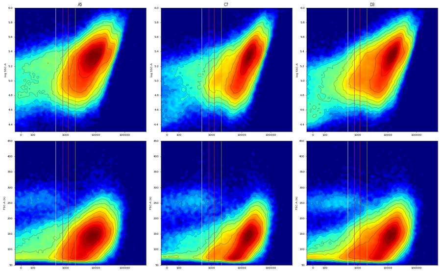
127
tool call · Bash
cd /task/work; cat > rl3_pooled.py <<'EOF'
import sys; sys.path.insert(0,'/task/work')
from common import *
import flowkit as fk
import matplotlib; matplotlib.use('Agg'); import matplotlib.pyplot as plt
from scipy.ndimage import gaussian_filter1d
xf = fk.transforms.LogicleTransform(param_t=1048576, param_w=0.75, param_m=5.4, param_a=0)
ticks=[-1000,0,100,300,1000,3000,1e4,1e5,1e6]; tpos = xf.apply(np.array(ticks,float))
fig, axes = plt.subplots(1,2, figsize=(22,8))
tot=None
for w in WELLS:
ev = load(w); ms = np.load(f'masks/{w}_sing.npy')
x = xf.apply(ev[ms,4].astype(float))
h,e=np.histogram(x, bins=250, range=(0.1,0.95)); c=(e[:-1]+e[1:])/2
hn = gaussian_filter1d(h/h.sum(),1.5)
axes[0].plot(c, hn, lw=0.6, color='r' if w=='A1' else ('b' if w=='D5' else 'gray'))
tot = hn if tot is None else tot+hn
d = np.gradient(np.log(hn+1e-7))
axes[0].plot(c, tot/len(WELLS), 'k', lw=2)
axes[1].plot(c, np.gradient(np.log(tot)), 'k'); axes[1].set_title('d log(density) / dx, pooled')
for a in axes:
a.set_xticks(tpos); a.set_xticklabels([str(int(t)) for t in ticks]); a.grid(alpha=.4)
for cut in [500,700,1000,1500]: a.axvline(xf.apply(np.array([cut],float))[0], color='m', lw=0.6)
axes[0].set_yscale('log'); axes[1].set_ylim(-0.5,1.5)
plt.tight_layout(); plt.savefig('rl3_pooled.png', dpi=50)
EOF
python3 rl3_pooled.py128
tool output
(Bash completed with no output)
129
tool call · Read
{
"file_path": "/task/work/rl3_pooled.png"
}130
tool output
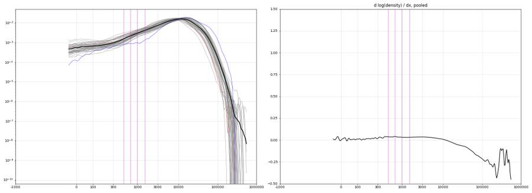
132
tool call · Bash
cd /task/work; cat > rl3_sub.py <<'EOF'
import sys; sys.path.insert(0,'/task/work')
from common import *
import flowkit as fk
import matplotlib; matplotlib.use('Agg'); import matplotlib.pyplot as plt
from scipy.ndimage import gaussian_filter1d
xf = fk.transforms.LogicleTransform(param_t=1048576, param_w=0.75, param_m=5.4, param_a=0)
ticks=[-1000,0,100,300,1000,3000,1e4,1e5,1e6]; tpos = xf.apply(np.array(ticks,float))
fig, axes = plt.subplots(2,3, figsize=(27,13))
for ax,w in zip(axes.flat, ['A5','A11','B6','C7','D3','B12']):
ev = load(w); ms = np.load(f'masks/{w}_sing.npy')
f,s,r,v = ev[ms,1],ev[ms,2],ev[ms,4],ev[ms,5]
x = xf.apply(r.astype(float)); xv = xf.apply(v.astype(float))
subsets = {'all singlets':np.ones(len(r),bool), 'NCAM>2e4':v>2e4, 'NCAM 3e3-2e4':(v>3e3)&(v<2e4), 'FSC>200k & SSC<0.75FSC':(f>200e3)&(s<0.75*f), 'FSC<120k':f<120e3}
for k,m in subsets.items():
h,e=np.histogram(x[m], bins=200, range=(0.1,0.95)); c=(e[:-1]+e[1:])/2
ax.plot(c, gaussian_filter1d(h.astype(float),1.5), label=f'{k} n={m.sum()}')
ax.set_yscale('log'); ax.set_ylim(5, None); ax.legend(fontsize=9); ax.set_title(w)
ax.set_xticks(tpos); ax.set_xticklabels([str(int(t)) for t in ticks]); ax.grid(alpha=.4)
for cut in [500,700,1000,1500]: ax.axvline(xf.apply(np.array([cut],float))[0], color='m', lw=0.6)
plt.tight_layout(); plt.savefig('rl3_sub.png', dpi=45)
EOF
python3 rl3_sub.py133
tool output
(Bash completed with no output)
134
tool call · Read
{
"file_path": "/task/work/rl3_sub.png"
}135
tool output
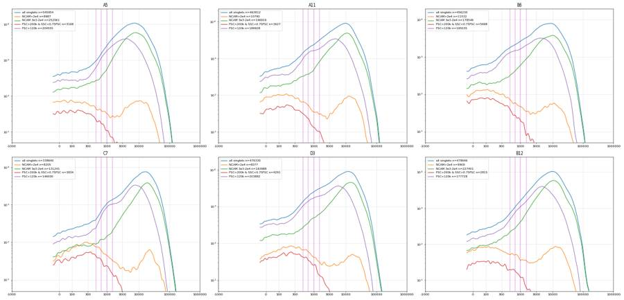
137
thinking
The Zombie NIR dim and bright groups have no clean 1-D valley, so I'm leaning toward a Live cut-off of RL3-A < 1000 and checking GFP on that population next.
138
tool call · Bash
cd /task/work; cat > live_cache.py <<'EOF'
import sys; sys.path.insert(0,'/task/work')
from common import *
LIVE_MAX = float(sys.argv[1])
for w in WELLS:
ev = load(w); ms = np.load(f'masks/{w}_sing.npy')
ml = ms & (ev[:,4] < LIVE_MAX)
np.save(f'masks/{w}_live.npy', ml)
EOF
python3 live_cache.py 1000
cat > gfp_stats.py <<'EOF'
import sys; sys.path.insert(0,'/task/work')
from common import *
rows=[]
for w in WELLS:
ev = load(w); ml = np.load(f'masks/{w}_live.npy'); g = ev[ml,3]
r=dict(well=w, live=ml.sum())
for p in [50,90,95,99,99.5,99.9]: r[f'p{p}']=round(float(np.percentile(g,p)))
for c in [500,1000,2000,3000,5000,10000]: r[f'%>{c}']=round(100*(g>c).mean(),2)
rows.append(r)
df=pd.DataFrame(rows); print(df.to_string())
EOF
python3 gfp_stats.py139
tool output
well live p50 p90 p95 p99 p99.5 p99.9 %>500 %>1000 %>2000 %>3000 %>5000 %>10000 0 A1 78030 69 196 265 566 757 4015 1.34 0.26 0.14 0.12 0.08 0.06 1 A2 51276 70 195 256 556 941 31279 1.17 0.48 0.34 0.29 0.25 0.19 2 A3 68631 69 194 265 631 957 18489 1.48 0.48 0.31 0.25 0.19 0.13 3 A4 52234 77 212 285 656 1251 43097 1.60 0.60 0.41 0.34 0.28 0.22 4 A5 61685 71 213 305 674 1267 71863 1.80 0.59 0.41 0.34 0.29 0.23 5 A6 40110 79 221 314 799 1768 70784 2.09 0.77 0.47 0.39 0.30 0.24 6 A7 53993 63 180 234 488 753 11338 0.96 0.37 0.25 0.21 0.15 0.11 7 A8 47824 71 190 251 586 1104 50323 1.29 0.53 0.40 0.35 0.29 0.21 8 A9 74303 66 184 239 480 632 6394 0.89 0.22 0.16 0.14 0.11 0.09 9 A10 59480 68 190 248 506 736 26827 1.01 0.36 0.27 0.23 0.19 0.15 10 A11 72387 70 199 266 601 867 48433 1.40 0.42 0.29 0.26 0.23 0.19 11 A12 75459 69 196 274 723 1549 100444 1.71 0.66 0.44 0.37 0.30 0.25 12 B1 66793 56 159 202 354 464 753 0.41 0.03 0.01 0.01 0.00 0.00 13 B2 60101 64 174 222 403 522 952 0.54 0.09 0.03 0.02 0.00 0.00 14 B3 40658 67 189 248 545 954 7743 1.18 0.48 0.31 0.24 0.14 0.07 15 B4 45650 77 205 268 527 697 1511 1.10 0.21 0.07 0.05 0.02 0.01 16 B5 73551 77 204 274 559 748 2267 1.33 0.27 0.12 0.07 0.04 0.01 17 B6 87475 68 179 236 477 654 1793 0.91 0.21 0.09 0.06 0.03 0.01 18 B7 41933 66 199 278 589 902 13796 1.39 0.45 0.27 0.22 0.18 0.12 19 B8 46147 71 220 318 731 1536 18770 1.97 0.66 0.44 0.37 0.27 0.18 20 B9 48268 68 201 279 691 1464 16221 1.66 0.68 0.41 0.30 0.23 0.14 21 B10 53440 66 207 308 694 1131 19079 1.85 0.55 0.34 0.28 0.21 0.14 22 B11 52457 75 242 367 834 1388 29856 2.74 0.74 0.38 0.31 0.24 0.19 23 B12 39622 77 257 401 1117 2125 86626 3.46 1.14 0.53 0.39 0.29 0.23 24 C1 19730 67 189 251 817 2333 13347 1.68 0.88 0.56 0.44 0.33 0.17 25 C2 28324 72 201 277 1154 3116 15041 1.94 1.09 0.72 0.51 0.34 0.16 26 C3 36304 66 186 246 538 875 9988 1.16 0.43 0.30 0.23 0.17 0.10 27 C4 29303 71 196 259 695 2031 31304 1.40 0.74 0.50 0.40 0.30 0.18 28 C5 26958 70 201 280 685 2369 63960 1.50 0.70 0.52 0.44 0.37 0.28 29 C6 36520 65 192 269 576 1007 30848 1.30 0.51 0.35 0.28 0.24 0.17 30 C7 28313 62 178 234 581 1176 4973 1.23 0.57 0.30 0.18 0.10 0.03 31 C8 29763 74 221 335 1794 3576 13153 2.98 1.63 0.92 0.61 0.36 0.16 32 C9 48628 62 178 243 715 1891 9683 1.46 0.78 0.48 0.34 0.21 0.09 33 C10 52640 64 183 248 581 1448 13654 1.26 0.60 0.40 0.33 0.24 0.13 34 C11 41426 69 195 262 544 943 18845 1.18 0.48 0.31 0.27 0.21 0.17 35 C12 23834 72 204 274 524 934 53183 1.11 0.48 0.36 0.32 0.26 0.21 36 D1 44918 63 185 245 484 662 5924 0.94 0.25 0.16 0.13 0.11 0.07 37 D2 50384 67 197 271 624 1108 21479 1.49 0.55 0.38 0.32 0.24 0.17 38 D3 69534 58 168 223 432 581 4375 0.70 0.20 0.13 0.12 0.10 0.06 39 D4 54519 60 171 224 436 633 11197 0.79 0.28 0.20 0.17 0.14 0.10 40 D5 4581 79 213 274 597 1433 177675 1.29 0.59 0.44 0.44 0.37 0.35 41 D6 21219 74 222 301 584 849 24083 1.41 0.39 0.22 0.20 0.16 0.15
141
tool call · Bash
cd /task/work; cat > plot_gfp.py <<'EOF'
import sys; sys.path.insert(0,'/task/work')
from common import *
import flowkit as fk
import matplotlib; matplotlib.use('Agg'); import matplotlib.pyplot as plt
from matplotlib.colors import LogNorm
xf = fk.transforms.LogicleTransform(param_t=1048576, param_w=0.75, param_m=5.4, param_a=0)
ws = sys.argv[1].split(','); cuts=[float(c) for c in sys.argv[3].split(',')]
suffix = sys.argv[4] if len(sys.argv)>4 else 'live'
fig, axes = plt.subplots(2,len(ws), figsize=(5.5*len(ws),10))
ticks=[-1000,0,100,1000,1e4,1e5,1e6]; tpos = xf.apply(np.array(ticks,float))
for j,w in enumerate(ws):
ev = load(w); ml = np.load(f'masks/{w}_{suffix}.npy')
g = ev[ml,3]; x = xf.apply(g.astype(float)); s = ev[ml,2]
axes[0,j].scatter(x, np.log10(np.clip(s,1,None)), s=0.5, alpha=0.3, c='k', rasterized=True)
axes[0,j].set_title(f'{w} {suffix} n={ml.sum()}'); axes[0,j].set_xlim(0.1,1.0); axes[0,j].set_ylim(4.2,6.05)
h,e=np.histogram(x, bins=250, range=(0.1,1.0)); axes[1,j].plot((e[:-1]+e[1:])/2, h); axes[1,j].set_yscale('log'); axes[1,j].set_xlim(0.1,1.0)
for a in axes[:,j]:
a.set_xticks(tpos); a.set_xticklabels([str(int(t)) for t in ticks]); a.grid(alpha=.3)
for c,col in zip(cuts, ['r','m','b','g']): a.axvline(xf.apply(np.array([c]))[0], color=col, lw=0.8)
axes[1,j].set_title(' '.join(f'>{c:.0f}:{(g>c).sum()}' for c in cuts), fontsize=9)
plt.tight_layout(); plt.savefig(sys.argv[2], dpi=45)
EOF
python3 plot_gfp.py B1,B2,B4,B6,D3,A12,C8 gfp1.png 1000,1500,2000,3000142
tool output
(Bash completed with no output)
143
tool call · Read
{
"file_path": "/task/work/gfp1.png"
}144
tool output
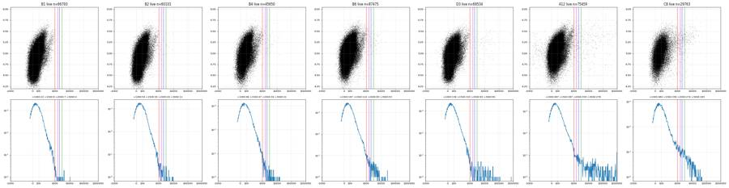
146
tool call · Bash
cd /task/work; python3 - <<'EOF'
import sys; sys.path.insert(0,'/task/work')
from common import *
for ws in [['B1'],['B2'],['B1','B2'],['B4','B5','B6']]:
g = np.concatenate([load(w)[np.load(f'masks/{w}_live.npy'),3] for w in ws])
print(ws, len(g), {p: round(float(np.percentile(g,p))) for p in [99,99.5,99.9,99.95,99.98,99.99]}, 'max', g.max())
print(' counts >', {c:int((g>c).sum()) for c in [800,1000,1200,1500,2000,3000]})
EOF147
tool output
['B1'] 66793 {99: 354, 99.5: 464, 99.9: 753, 99.95: 886, 99.98: 1151, 99.99: 1896} max 10709.0
counts > {800: 52, 1000: 22, 1200: 12, 1500: 9, 2000: 7, 3000: 4}
['B2'] 60101 {99: 403, 99.5: 522, 99.9: 952, 99.95: 1475, 99.98: 2627, 99.99: 3318} max 9640.0
counts > {800: 95, 1000: 54, 1200: 45, 1500: 30, 2000: 20, 3000: 11}
['B1', 'B2'] 126894 {99: 382, 99.5: 490, 99.9: 840, 99.95: 1106, 99.98: 2043, 99.99: 3267} max 10709.0
counts > {800: 147, 1000: 76, 1200: 57, 1500: 39, 2000: 27, 3000: 15}
['B4', 'B5', 'B6'] 206676 {99: 523, 99.5: 697, 99.9: 1959, 99.95: 3460, 99.98: 6109, 99.99: 9339} max 38022.0
counts > {800: 747, 1000: 480, 1200: 356, 1500: 275, 2000: 205, 3000: 124}149
tool call · Bash
cd /task/work; cat > gfp_rl3.py <<'EOF'
import sys; sys.path.insert(0,'/task/work')
from common import *
import flowkit as fk
import matplotlib; matplotlib.use('Agg'); import matplotlib.pyplot as plt
from scipy.ndimage import gaussian_filter1d
xf = fk.transforms.LogicleTransform(param_t=1048576, param_w=0.75, param_m=5.4, param_a=0)
ticks=[-1000,0,100,300,1000,3000,1e4,1e5,1e6]; tpos = xf.apply(np.array(ticks,float))
fig, axes = plt.subplots(1,2, figsize=(22,8))
ws=['A5','A6','A12','B12','C5','C8','A8','A4','B11']
gp=[]; allr=[]
for w in ws:
ev = load(w); ms = np.load(f'masks/{w}_sing.npy')
g, r, s = ev[ms,3], ev[ms,4], ev[ms,2]
gp.append(np.c_[r[g>3000], s[g>3000]]); allr.append(r)
gp=np.concatenate(gp); allr=np.concatenate(allr)
x=xf.apply(gp[:,0].astype(float))
axes[0].scatter(x, np.log10(gp[:,1]), s=2, alpha=0.4); axes[0].set_title(f'Singlets with BL1-A>3000 (pooled {len(ws)} wells), n={len(gp)}')
h,e=np.histogram(x, bins=120, range=(0.1,0.95)); axes[1].plot((e[:-1]+e[1:])/2, h/h.sum(), label='GFP>3000')
h,e=np.histogram(xf.apply(allr.astype(float)), bins=120, range=(0.1,0.95)); axes[1].plot((e[:-1]+e[1:])/2, h/h.sum(), label='all singlets'); axes[1].legend(); axes[1].set_yscale('log')
for a in axes:
a.set_xticks(tpos); a.set_xticklabels([str(int(t)) for t in ticks]); a.grid(alpha=.4)
for cut in [600,1000,2000]: a.axvline(xf.apply(np.array([cut],float))[0], color='m', lw=0.8)
for c in [300,600,800,1000,1500,2000,3000,5000]: print(c, round(100*(gp[:,0]<c).mean(),1), end='; ')
plt.tight_layout(); plt.savefig('gfp_rl3.png', dpi=50)
EOF
python3 gfp_rl3.py150
tool output
300 21.0; 600 26.5; 800 28.2; 1000 29.8; 1500 33.0; 2000 35.0; 3000 39.7; 5000 46.0;
151
tool call · Read
{
"file_path": "/task/work/gfp_rl3.png"
}152
tool output
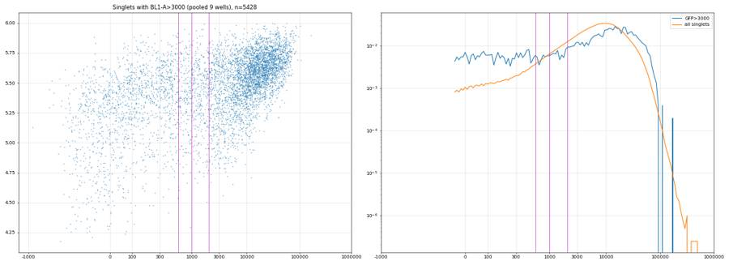
154
thinking
GFP-negative events sit near 1000 in the sparsest wells (B1, B2), so I'll set the GFP_pos gate at BL1-A > 1000 and move on to quantifying the disturbed intervals.
155
tool call · Bash
cd /task/work; cat > qc2.py <<'EOF'
import sys; sys.path.insert(0,'/task/work')
from common import *
from scipy.ndimage import median_filter
rows=[]
for w in WELLS:
ev = load(w); t = ev[:,0]/1000.0
# handle reset: use segment 1 (main) for rate stats, report seg0 separately
resets = np.where(np.diff(ev[:,0])<0)[0]
main = np.ones(len(t),bool)
if len(resets): main[:resets[0]+1]=False
tm = t[main]; T = tm.max()
bw=0.5
edges = np.arange(0, np.ceil(T/bw)*bw+bw, bw)
h,_ = np.histogram(tm, bins=edges); rate=h/bw
full = rate[:-1] # drop last partial bin
ref = np.median(full[int(10/bw):int((T-10)/bw)])
dev = np.abs(full-ref)/ref
# scatter median per bin
b = np.minimum((tm/bw).astype(int), len(h)-1)
fs = pd.Series(ev[main,1]).groupby(b).median().reindex(range(len(h))).values[:-1]
fref = np.nanmedian(fs[int(10/bw):int((T-10)/bw)])
fdev = np.abs(fs-fref)/fref
bad = (dev>0.35)|(fdev>0.15)
badev = h[:-1][bad].sum()
# contiguous bad runs
runs=[]; i=0
while i<len(bad):
if bad[i]:
j=i
while j+1<len(bad) and bad[j+1]: j+=1
runs.append((round(i*bw,1), round((j+1)*bw,1), int(h[i:j+1].sum())))
i=j+1
else: i+=1
rows.append(dict(well=w, n=len(t), ref_rate=int(ref), bad_bins=int(bad.sum()), bad_events=int(badev), bad_pct=round(100*badev/len(t),2),
min_rate=int(full.min()), t_min=round(full.argmin()*bw,1), max_rate=int(full.max()), t_max=round(full.argmax()*bw,1),
last1s=int(((tm>T-1)).sum()), runs=runs[:6]))
df=pd.DataFrame(rows); pd.set_option('display.width',300); pd.set_option('display.max_colwidth',120)
print(df.to_string()); df.to_csv('qc2.csv', index=False)
EOF
python3 qc2.py156
tool output
well n ref_rate bad_bins bad_events bad_pct min_rate t_min max_rate t_max last1s runs 0 A1 978726 21547 0 0 0.00 16978 43.5 23012 1.0 20787 [] 1 A2 935707 9716 0 0 0.00 6550 96.5 11084 93.0 7164 [] 2 A3 925910 9740 3 9005 0.97 5756 97.0 10764 5.5 5999 [(96.0, 97.5, 9005)] 3 A4 892332 9294 0 0 0.00 7558 1.5 10108 7.5 8579 [] 4 A5 986514 10280 0 0 0.00 6808 93.0 11428 7.5 9856 [] 5 A6 755396 7989 0 0 0.00 5734 92.0 8708 7.5 7306 [] 6 A7 848859 8844 0 0 0.00 6726 93.5 9598 6.0 8467 [] 7 A8 710140 7404 3 7903 1.11 5098 0.0 8094 28.5 6495 [(0.0, 0.5, 2549), (2.0, 3.0, 5354)] 8 A9 958681 9960 0 0 0.00 6932 91.5 11036 6.0 9220 [] 9 A10 870505 9120 3 8114 0.93 5378 97.0 10166 6.0 5194 [(86.5, 87.0, 2727), (96.5, 97.5, 5387)] 10 A11 844586 8754 0 0 0.00 6970 93.0 10752 85.0 8975 [] 11 A12 947510 9912 3 8744 0.92 5496 97.0 11944 93.0 5162 [(96.0, 97.5, 8744)] 12 B1 733754 7648 9 34156 4.65 4496 92.0 8762 97.0 7964 [(7.0, 9.0, 16542), (9.5, 10.0, 4153), (10.5, 11.0, 3922), (12.0, 12.5, 3798), (92.0, 92.5, 2248), (94.0, 94.5, 3493)] 13 B2 728886 7552 14 53978 7.41 5794 92.5 8346 8.0 7284 [(2.0, 2.5, 3250), (6.0, 7.0, 8138), (8.0, 8.5, 4173), (9.0, 13.5, 35012), (93.5, 94.0, 3405)] 14 B3 667298 6964 7 23569 3.53 5184 60.0 7830 84.5 6843 [(0.0, 0.5, 2774), (2.0, 2.5, 2731), (6.5, 7.5, 7425), (9.5, 10.0, 3634), (10.5, 11.0, 3589), (11.5, 12.0, 3416)] 15 B4 598212 6304 13 34561 5.78 2990 97.0 7632 92.5 2936 [(7.5, 8.0, 3441), (9.0, 11.0, 13185), (11.5, 12.5, 6215), (88.0, 88.5, 2750), (95.0, 97.5, 8970)] 16 B5 837561 8778 5 15315 1.83 4876 97.0 9686 7.0 4683 [(11.0, 11.5, 4622), (95.5, 97.5, 10693)] 17 B6 877336 9086 4 10167 1.16 3962 97.0 10612 92.0 4077 [(95.5, 97.5, 10167)] 18 B7 954909 10530 40 153981 16.13 194 0.5 18016 30.5 9325 [(0.0, 7.0, 22714), (7.5, 8.0, 3233), (8.5, 9.0, 4808), (10.0, 14.0, 25381), (14.5, 15.5, 14448), (22.0, 22.5, 5876)] 19 B8 918778 10004 28 97018 10.56 32 2.5 15272 9.0 5369 [(0.0, 4.0, 2974), (4.5, 8.0, 20418), (8.5, 12.5, 58278), (95.0, 97.5, 15348)] 20 B9 862070 8930 1 4662 0.54 7066 2.0 10528 96.5 8612 [(9.0, 9.5, 4662)] 21 B10 1083648 11372 5 16802 1.55 5558 97.0 13136 92.0 5580 [(95.0, 97.5, 16802)] 22 B11 988574 10362 4 13329 1.35 5984 97.0 11538 92.5 5624 [(95.5, 97.5, 13329)] 23 B12 904103 9366 0 0 0.00 7634 1.5 10380 7.0 8046 [] 24 C1 624718 6486 11 36123 5.78 4856 0.0 7162 7.0 6761 [(7.5, 9.5, 13719), (10.0, 13.0, 19674), (92.5, 93.0, 2730)] 25 C2 695572 7320 14 42022 6.04 3238 97.0 8480 16.5 3305 [(7.0, 7.5, 3878), (8.0, 8.5, 3908), (9.5, 10.0, 3854), (10.5, 11.0, 3837), (11.5, 12.5, 7371), (88.0, 89.0, 6407)] 26 C3 656321 6964 21 61000 9.29 … [3,459 more characters not shown]
158
tool call · Bash
cd /task/work; cat > plot_zoom2.py <<'EOF'
import sys; sys.path.insert(0,'/task/work')
from common import *
import flowkit as fk
import matplotlib; matplotlib.use('Agg'); import matplotlib.pyplot as plt
xf = fk.transforms.LogicleTransform(param_t=1048576, param_w=0.75, param_m=5.4, param_a=0)
ws = sys.argv[1].split(','); t0,t1 = float(sys.argv[3]), float(sys.argv[4])
fig, axes = plt.subplots(len(ws),4, figsize=(28,4.5*len(ws)))
for row,w in zip(np.atleast_2d(axes),ws):
ev = load(w); t = ev[:,0]/1000.0
resets = np.where(np.diff(ev[:,0])<0)[0]
main = np.ones(len(t),bool)
if len(resets): main[:resets[0]+1]=False
e2 = ev[main]; t=t[main]
m = (t>=t0)&(t<=t1)
h,e = np.histogram(t[m], bins=np.arange(t0,t1+0.1,0.1)); row[0].plot(e[:-1], h*10); row[0].set_title(f'{w} rate (0.1 s bins)'); row[0].set_ylim(0,None)
sub = m & (np.random.rand(len(t))<0.3)
row[1].scatter(t[sub], np.log10(np.clip(e2[sub,1],1,None)), s=0.3, alpha=0.3); row[1].set_title('log FSC-A vs time')
row[2].scatter(t[sub], np.log10(np.clip(e2[sub,2],1,None)), s=0.3, alpha=0.3); row[2].set_title('log SSC-A vs time')
row[3].scatter(t[sub], xf.apply(e2[sub,4].astype(float)), s=0.3, alpha=0.3); row[3].set_title('logicle RL3-A vs time')
for a in row: a.grid(alpha=.4)
plt.tight_layout(); plt.savefig(sys.argv[2], dpi=45)
EOF
python3 plot_zoom2.py B7,B8,A2,B2 zoom_start.png 0 30159
tool output
(Bash completed with no output)
160
tool call · Read
{
"file_path": "/task/work/zoom_start.png"
}161
tool output
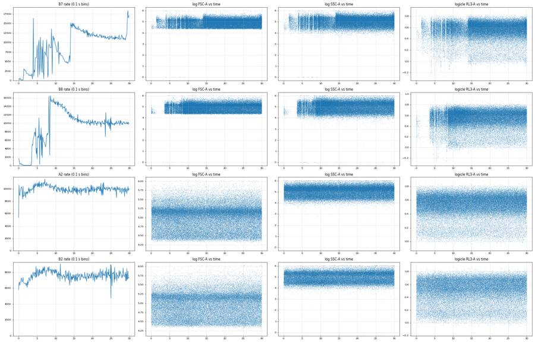
163
tool call · Bash
cd /task/work; python3 plot_zoom2.py C3,B4,C4,A4 zoom_end.png 80 98
164
tool output
(Bash completed with no output)
165
tool call · Read
{
"file_path": "/task/work/zoom_end.png"
}166
tool output
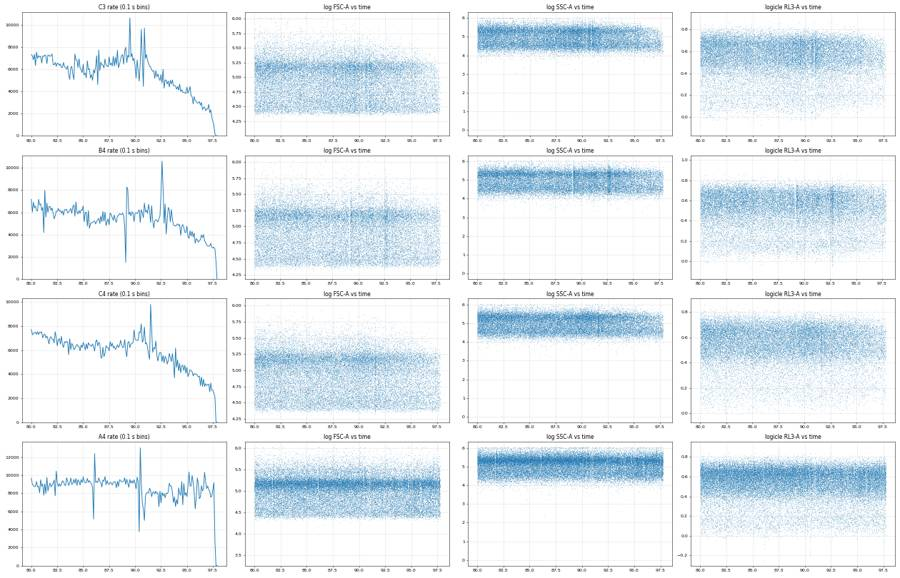
168
tool call · Bash
cd /task/work; python3 - <<'EOF'
import sys; sys.path.insert(0,'/task/work')
from common import *
for w in ['C6','C11','D4']:
ev = load(w); t = ev[:,0]
k = np.where(np.diff(t)<0)[0][0]+1
s0 = ev[:k]; s1 = ev[k:]
early = s1[(s1[:,0]>=3300)&(s1[:,0]<=3900)]
ms = np.load(f'masks/{w}_sing.npy'); ml = np.load(f'masks/{w}_live.npy')
def stats(sel, e, msk):
return dict(n=len(e), fsc=int(np.median(e[:,1])), ssc=int(np.median(e[:,2])), sing=round(100*msk.mean(),1))
m0 = np.zeros(len(ev),bool); m0[:k]=True
win = np.zeros(len(ev),bool); win[k:] = (s1[:,0]>=3300)&(s1[:,0]<=3900)
rest = np.zeros(len(ev),bool); rest[k:]=True
for name,m in [('seg0',m0),('seg1 same window',win),('seg1 all',rest)]:
e=ev[m]
live_of_sing = ml[m].sum()/max(ms[m].sum(),1)
gfp = ((ev[:,3]>1000)&ml)[m].sum()/max(ml[m].sum(),1)
print(w, f'{name:18s} n={m.sum():7d} medFSC={np.median(e[:,1]):8.0f} medSSC={np.median(e[:,2]):8.0f} sing%={100*ms[m].mean():5.1f} live%sing={100*live_of_sing:5.1f} gfp%live={100*gfp:5.2f} medVL1={np.median(e[:,5]):6.0f}')
print(' seg0 first 5 times', s0[:5,0], 'last', s0[-3:,0], ' seg1 first', s1[:3,0])
EOF169
tool output
C6 seg0 n= 4443 medFSC= 98137 medSSC= 99470 sing%= 55.1 live%sing= 9.8 gfp%live= 0.42 medVL1= 1506 C6 seg1 same window n= 5754 medFSC= 101601 medSSC= 106499 sing%= 53.0 live%sing= 9.1 gfp%live= 0.36 medVL1= 1786 C6 seg1 all n= 886568 medFSC= 106892 medSSC= 120059 sing%= 52.2 live%sing= 7.8 gfp%live= 0.51 medVL1= 2012 seg0 first 5 times [3350. 3350. 3350. 3350. 3350.] last [3894. 3894. 3894.] seg1 first [14. 14. 14.] C11 seg0 n= 4103 medFSC= 101429 medSSC= 102487 sing%= 56.8 live%sing= 9.7 gfp%live= 0.44 medVL1= 1664 C11 seg1 same window n= 5387 medFSC= 107131 medSSC= 113412 sing%= 55.5 live%sing= 9.9 gfp%live= 0.68 medVL1= 1868 C11 seg1 all n= 864582 medFSC= 111020 medSSC= 124974 sing%= 54.0 live%sing= 8.8 gfp%live= 0.48 medVL1= 2186 seg0 first 5 times [3345. 3345. 3346. 3346. 3346.] last [3896. 3896. 3896.] seg1 first [14. 14. 14.] D4 seg0 n= 4084 medFSC= 102307 medSSC= 102952 sing%= 57.3 live%sing= 12.8 gfp%live= 0.00 medVL1= 1398 D4 seg1 same window n= 5620 medFSC= 105431 medSSC= 109914 sing%= 56.6 live%sing= 12.8 gfp%live= 0.00 medVL1= 1614 D4 seg1 all n= 921721 medFSC= 111983 medSSC= 126322 sing%= 53.8 live%sing= 10.9 gfp%live= 0.29 medVL1= 1945 seg0 first 5 times [3292. 3293. 3293. 3293. 3293.] last [3836. 3836. 3836.] seg1 first [14. 14. 14.]
171
tool call · Bash
cd /task/work; cat > cmp_a1.py <<'EOF'
import sys; sys.path.insert(0,'/task/work')
from common import *
import flowkit as fk
import matplotlib; matplotlib.use('Agg'); import matplotlib.pyplot as plt
xf = fk.transforms.LogicleTransform(param_t=1048576, param_w=0.75, param_m=5.4, param_a=0)
ws = ['A1','A2','A3','A7','B7','B8','D5','D6']
fig, axes = plt.subplots(1,5, figsize=(32,6))
for w in ws:
ev = load(w); ms = np.load(f'masks/{w}_sing.npy')
kw=dict(histtype='step', density=True, label=w, lw=2 if w in ('A1','D5') else 0.8)
axes[0].hist(np.log10(np.clip(ev[ms,1],1,None)), bins=200, range=(4.6,6.05), **kw); axes[0].set_title('log FSC-A singlets')
axes[1].hist(np.log10(np.clip(ev[ms,2],1,None)), bins=200, range=(4,6.05), **kw); axes[1].set_title('log SSC-A singlets')
axes[2].hist(xf.apply(ev[ms,4].astype(float)), bins=200, range=(0.1,0.95), **kw); axes[2].set_title('logicle RL3-A singlets'); axes[2].set_yscale('log')
axes[3].hist(xf.apply(ev[ms,3].astype(float)), bins=200, range=(0.1,0.95), **kw); axes[3].set_title('logicle BL1-A singlets'); axes[3].set_yscale('log')
axes[4].hist(xf.apply(ev[ms,5].astype(float)), bins=200, range=(0.1,0.95), **kw); axes[4].set_title('logicle VL1-A singlets'); axes[4].set_yscale('log')
for a in axes: a.legend(); a.grid(alpha=.4)
plt.tight_layout(); plt.savefig('cmp_a1.png', dpi=45)
for w in ws:
ev = load(w); ms = np.load(f'masks/{w}_sing.npy')
print(w, 'CV-ish robust (IQR/median) FSC', round(np.subtract(*np.percentile(ev[ms,1],[75,25]))/np.median(ev[ms,1]),3), 'BL1 sd of negatives', round(np.std(ev[ms,3][ev[ms,3]<1000]),1), 'RL3 IQR', np.percentile(ev[ms,4],[10,25,50,75,90]).round(0))
EOF
python3 cmp_a1.py172
tool output
A1 CV-ish robust (IQR/median) FSC 0.441 BL1 sd of negatives 152.6 RL3 IQR [ 460. 1934. 5564. 10976. 17886.] A2 CV-ish robust (IQR/median) FSC 0.431 BL1 sd of negatives 143.7 RL3 IQR [ 1011. 2907. 6457. 12267. 21018.] A3 CV-ish robust (IQR/median) FSC 0.439 BL1 sd of negatives 152.3 RL3 IQR [ 722. 2234. 5524. 10834. 18119.] A7 CV-ish robust (IQR/median) FSC 0.463 BL1 sd of negatives 159.5 RL3 IQR [ 742. 4396. 11123. 19346. 29696.] B7 CV-ish robust (IQR/median) FSC 0.484 BL1 sd of negatives 145.1 RL3 IQR [ 1216. 4086. 9612. 17221. 27640.] B8 CV-ish robust (IQR/median) FSC 0.469 BL1 sd of negatives 144.0 RL3 IQR [ 1065. 3773. 8988. 16483. 27212.] D5 CV-ish robust (IQR/median) FSC 0.439 BL1 sd of negatives 157.9 RL3 IQR [ 3079. 6844. 13830. 25232. 44570.] D6 CV-ish robust (IQR/median) FSC 0.451 BL1 sd of negatives 157.4 RL3 IQR [ 2037. 5122. 10780. 19972. 32653.]
173
tool call · Read
{
"file_path": "/task/work/cmp_a1.png"
}174
tool output
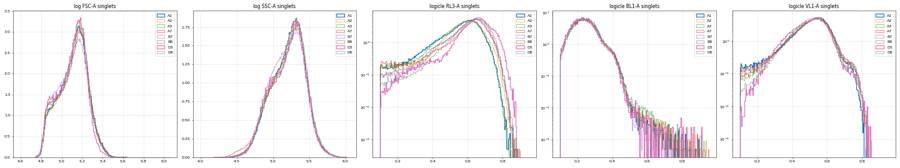
176
thinking
Gates are set, and I'm now checking how much the disturbed B7 and B8 intervals shift the gated percentages before building the FlowKit strategy.
177
tool call · Bash
cd /task/work; python3 - <<'EOF'
import sys; sys.path.insert(0,'/task/work')
from common import *
for w in ['B7','B8','B9','A2']:
ev = load(w); t=ev[:,0]/1000; ms=np.load(f'masks/{w}_sing.npy'); ml=np.load(f'masks/{w}_live.npy'); gp = ml & (ev[:,3]>1000)
from matplotlib.path import Path
for lo,hi in [(0,4),(4,15),(15,30),(30,60),(60,99)]:
m=(t>=lo)&(t<hi)
print(w, f'{lo:3d}-{hi:3d}s n={m.sum():7d} rate={m.sum()/(hi-lo):7.0f} sing%all={100*ms[m].mean():5.1f} live%sing={100*ml[m].sum()/max(ms[m].sum(),1):5.1f} gfp%live={100*gp[m].sum()/max(ml[m].sum(),1):5.2f} medFSC={np.median(ev[m,1]):7.0f}')
EOF178
tool output
B7 0- 4s n= 5699 rate= 1425 sing%all= 54.0 live%sing= 9.2 gfp%live= 0.35 medFSC= 85056 B7 4- 15s n= 81331 rate= 7394 sing%all= 55.1 live%sing= 8.2 gfp%live= 0.57 medFSC= 95244 B7 15- 30s n= 182378 rate= 12159 sing%all= 57.3 live%sing= 7.7 gfp%live= 0.53 medFSC= 100978 B7 30- 60s n= 318733 rate= 10624 sing%all= 49.7 live%sing= 8.7 gfp%live= 0.38 medFSC= 112996 B7 60- 99s n= 366768 rate= 9404 sing%all= 51.1 live%sing= 8.6 gfp%live= 0.43 medFSC= 112487 B8 0- 4s n= 2974 rate= 744 sing%all= 40.8 live%sing= 9.7 gfp%live= 0.85 medFSC= 57847 B8 4- 15s n= 117316 rate= 10665 sing%all= 52.6 live%sing= 9.4 gfp%live= 0.57 medFSC= 101332 B8 15- 30s n= 152769 rate= 10185 sing%all= 52.0 live%sing= 9.7 gfp%live= 0.70 medFSC= 107259 B8 30- 60s n= 299099 rate= 9970 sing%all= 52.7 live%sing= 9.3 gfp%live= 0.66 medFSC= 118930 B8 60- 99s n= 346620 rate= 8888 sing%all= 53.1 live%sing= 9.7 gfp%live= 0.66 medFSC= 113526 B9 0- 4s n= 30789 rate= 7697 sing%all= 57.6 live%sing= 11.3 gfp%live= 0.70 medFSC= 106775 B9 4- 15s n= 98330 rate= 8939 sing%all= 53.8 live%sing= 10.8 gfp%live= 0.66 medFSC= 104796 B9 15- 30s n= 133622 rate= 8908 sing%all= 54.1 live%sing= 10.3 gfp%live= 0.80 medFSC= 110961 B9 30- 60s n= 271741 rate= 9058 sing%all= 54.1 live%sing= 10.0 gfp%live= 0.68 medFSC= 118499 B9 60- 99s n= 327588 rate= 8400 sing%all= 54.7 live%sing= 10.2 gfp%live= 0.63 medFSC= 118032 A2 0- 4s n= 37835 rate= 9459 sing%all= 57.6 live%sing= 10.6 gfp%live= 0.26 medFSC= 117496 A2 4- 15s n= 112769 rate= 10252 sing%all= 54.1 live%sing= 10.3 gfp%live= 0.41 medFSC= 114524 A2 15- 30s n= 148539 rate= 9903 sing%all= 54.8 live%sing= 10.0 gfp%live= 0.37 medFSC= 119222 A2 30- 60s n= 291532 rate= 9718 sing%all= 55.1 live%sing= 9.7 gfp%live= 0.55 medFSC= 124717 A2 60- 99s n= 345032 rate= 8847 sing%all= 55.7 live%sing= 9.9 gfp%live= 0.51 medFSC= 122380
180
agent
Now I'm building the FlowKit GatingStrategy, exporting it to gates.xml, reloading it, and gating all 42 files from the reloaded copy.
181
tool call · Bash
cd /task/work; cat > build_gates.py <<'EOF'
import sys; sys.path.insert(0,'/task/work')
import flowkit as fk, numpy as np
import gates_def
LIVE_MAX = 1000.0
GFP_MIN = 1000.0
def build():
s = fk.GatingStrategy()
# Cells: polygon on raw FSC-A x SSC-A
cells = fk.gates.PolygonGate('Cells',
[fk.Dimension('FSC-A', compensation_ref='uncompensated'), fk.Dimension('SSC-A', compensation_ref='uncompensated')],
[list(map(float,v)) for v in gates_def.CELLS])
s.add_gate(cells, gate_path=('root',))
sing = fk.gates.PolygonGate('Singlets',
[fk.Dimension('SSC-H', compensation_ref='uncompensated'), fk.Dimension('SSC-A', compensation_ref='uncompensated')],
[list(map(float,v)) for v in gates_def.SING])
s.add_gate(sing, gate_path=('root','Cells'))
live = fk.gates.RectangleGate('Live', [fk.Dimension('RL3-A', compensation_ref='uncompensated', range_max=LIVE_MAX)])
s.add_gate(live, gate_path=('root','Cells','Singlets'))
gfp = fk.gates.RectangleGate('GFP_pos', [fk.Dimension('BL1-A', compensation_ref='uncompensated', range_min=GFP_MIN)])
s.add_gate(gfp, gate_path=('root','Cells','Singlets','Live'))
return s
if __name__ == '__main__':
s = build()
with open('/task/outputs/gates.xml','wb') as fh:
fk.export_gatingml(s, fh)
s2 = fk.parse_gating_xml('/task/outputs/gates.xml')
print(s2.get_gate_hierarchy(output='ascii'))
for gid in s2.get_gate_ids():
g = s2.get_gate(gid[0], gid[1])
print(gid, type(g).__name__, [(d.id, d.compensation_ref, d.transformation_ref, getattr(d,'min',None), getattr(d,'max',None)) for d in g.dimensions])
EOF
python3 build_gates.py && head -c 3000 /task/outputs/gates.xml182
tool output
root
╰── Cells
╰── Singlets
╰── Live
╰── GFP_pos
('Cells', ('root',)) PolygonGate [('FSC-A', 'uncompensated', None, None, None), ('SSC-A', 'uncompensated', None, None, None)]
('Singlets', ('root', 'Cells')) PolygonGate [('SSC-H', 'uncompensated', None, None, None), ('SSC-A', 'uncompensated', None, None, None)]
('Live', ('root', 'Cells', 'Singlets')) RectangleGate [('RL3-A', 'uncompensated', None, None, 1000.0)]
('GFP_pos', ('root', 'Cells', 'Singlets', 'Live')) RectangleGate [('BL1-A', 'uncompensated', None, 1000.0, None)]
<?xml version='1.0' encoding='UTF-8'?>
<gating:Gating-ML xmlns:gating="http://www.isac-net.org/std/Gating-ML/v2.0/gating" xmlns:data-type="http://www.isac-net.org/std/Gating-ML/v2.0/datatypes" xmlns:transforms="http://www.isac-net.org/std/Gating-ML/v2.0/transformations">
<gating:PolygonGate gating:id="Cells">
<gating:dimension gating:compensation-ref="uncompensated">
<data-type:fcs-dimension data-type:name="FSC-A"/>
</gating:dimension>
<gating:dimension gating:compensation-ref="uncompensated">
<data-type:fcs-dimension data-type:name="SSC-A"/>
</gating:dimension>
<gating:vertex>
<gating:coordinate data-type:value="75000.0"/>
<gating:coordinate data-type:value="15000.0"/>
</gating:vertex>
<gating:vertex>
<gating:coordinate data-type:value="130000.0"/>
<gating:coordinate data-type:value="15000.0"/>
</gating:vertex>
<gating:vertex>
<gating:coordinate data-type:value="1000000.0"/>
<gating:coordinate data-type:value="300000.0"/>
</gating:vertex>
<gating:vertex>
<gating:coordinate data-type:value="1000000.0"/>
<gating:coordinate data-type:value="1000000.0"/>
</gating:vertex>
<gating:vertex>
<gating:coordinate data-type:value="250000.0"/>
<gating:coordinate data-type:value="1000000.0"/>
</gating:vertex>
<gating:vertex>
<gating:coordinate data-type:value="55000.0"/>
<gating:coordinate data-type:value="300000.0"/>
</gating:vertex>
<gating:vertex>
<gating:coordinate data-type:value="55000.0"/>
<gating:coordinate data-type:value="120000.0"/>
</gating:vertex>
</gating:PolygonGate>
<gating:PolygonGate gating:id="Singlets" gating:parent_id="Cells">
<gating:dimension gating:compensation-ref="uncompensated">
<data-type:fcs-dimension data-type:name="SSC-H"/>
</gating:dimension>
<gating:dimension gating:compensation-ref="uncompensated">
<data-type:fcs-dimension data-type:name="SSC-A"/>
</gating:dimension>
<gating:vertex>
<gating:coordinate data-type:value="10000.0"/>
<gating:coordinate data-type:value="9000.0"/>
</gating:vertex>
<gating:vertex>
<gating:coordinate data-type:value="1000000.0"/>
<gating:coordinate data-type:value="900000.0"/>
</gating:vertex>
<gating:vertex>
<gating:coordinate data-type:value="1000000.0"/>
<gating:coordinate data-type:value="1040000.0"/>
</gating:vertex>
<gating:vertex>
<gating:coordinate data-type:value="680000.0"/>
<gating:coordinate data-type:value="1040000.0"/>
</gating:vertex>
<gating:vertex>
<gating:coordinate data-type:value="200000.0"/>
<gating:coordinate data-type:value="300000.0"/>
</gating:vertex>
<gating:vertex>
<gating:coordinate data-type:value="50000.0"/>
<gating:coordinate data-type:value="67500.0"/>
</gating:vertex>
<gating:vertex>
<gating:coordinate data-type:value="10000.0"/>
<gating:184
tool call · Bash
cd /task/work; cat > run_counts.py <<'EOF'
import sys, os, time; sys.path.insert(0,'/task/work')
import flowkit as fk, numpy as np, pandas as pd
from multiprocessing import Pool
POPS = [('Cells','all_events'),('Singlets','Cells'),('Live','Singlets'),('GFP_pos','Live')]
def work(args):
fn, well = args
t0=time.time()
strat = fk.parse_gating_xml('/task/outputs/gates.xml')
smp = fk.Sample(os.path.join('/task/inputs/raw', fn))
res = strat.gate_sample(smp)
tot = smp.event_count
out = {'file':fn,'well':well,'total':tot}
for p,_ in POPS:
out[p] = int(res.get_gate_count(p))
out['sec']=round(time.time()-t0,1)
return out
if __name__=='__main__':
lay = pd.read_csv('/task/inputs/plate_layout.csv')
jobs = list(zip(lay.file, lay.well))
if len(sys.argv)>1: jobs = [j for j in jobs if j[1] in sys.argv[1].split(',')]
with Pool(3) as pool:
res = pool.map(work, jobs)
df = pd.DataFrame(res); df.to_csv('/task/work/fk_counts_raw.csv', index=False); print(df.to_string())
EOF
time python3 run_counts.py A1185
tool output
file well total Cells Singlets Live GFP_pos sec 0 Serotype panel_2_Rep2_Group_A1.fcs A1 978726 723155 474224 78030 202 0.2 real 0m1.002s user 0m1.102s sys 0m0.529s
187
tool call · Bash
cd /task/work; time python3 run_counts.py 2>&1 | tail -45
188
tool output
file well total Cells Singlets Live GFP_pos sec 0 Serotype panel_2_Rep2_Group_A1.fcs A1 978726 723155 474224 78030 202 0.4 1 Serotype panel_2_Rep2_Group_A2.fcs A2 935707 674105 516764 51276 245 0.3 2 Serotype panel_2_Rep2_Group_A3.fcs A3 925910 674158 527016 68631 332 0.3 3 Serotype panel_2_Rep2_Group_A4.fcs A4 892332 655414 508870 52234 311 0.3 4 Serotype panel_2_Rep2_Group_A5.fcs A5 986514 713949 545954 61685 364 0.4 5 Serotype panel_2_Rep2_Group_A6.fcs A6 755396 553193 448773 40110 308 0.3 6 Serotype panel_2_Rep2_Group_A7.fcs A7 848859 607022 466949 53993 198 0.2 7 Serotype panel_2_Rep2_Group_A8.fcs A8 710140 515264 414774 47824 254 0.2 8 Serotype panel_2_Rep2_Group_A9.fcs A9 958681 668063 487386 74303 164 0.4 9 Serotype panel_2_Rep2_Group_A10.fcs A10 870505 621456 474691 59480 217 0.3 10 Serotype panel_2_Rep2_Group_A11.fcs A11 844586 585669 463812 72387 308 0.2 11 Serotype panel_2_Rep2_Group_A12.fcs A12 947510 660821 508702 75459 497 0.2 12 Serotype panel_2_Rep2_Group_B1.fcs B1 733754 490376 371157 66793 22 0.2 13 Serotype panel_2_Rep2_Group_B2.fcs B2 728886 484036 367506 60101 54 0.2 14 Serotype panel_2_Rep2_Group_B3.fcs B3 667298 443771 353868 40658 195 0.2 15 Serotype panel_2_Rep2_Group_B4.fcs B4 598212 393457 323770 45650 96 0.2 16 Serotype panel_2_Rep2_Group_B5.fcs B5 837561 572759 448964 73551 197 0.2 17 Serotype panel_2_Rep2_Group_B6.fcs B6 877336 591369 456230 87475 187 0.2 18 Serotype panel_2_Rep2_Group_B7.fcs B7 954909 657373 498162 41933 187 0.2 19 Serotype panel_2_Rep2_Group_B8.fcs B8 918778 629160 484066 46147 303 0.2 20 Serotype panel_2_Rep2_Group_B9.fcs B9 862070 603020 469283 48268 328 0.2 21 Serotype panel_2_Rep2_Group_B10.fcs B10 1083648 747136 559746 53440 294 0.3 22 Serotype panel_2_Rep2_Group_B11.fcs B11 988574 677063 523301 52457 388 0.3 23 Serotype panel_2_Rep2_Group_B12.fcs B12 904103 613205 478646 39622 453 0.3 24 Serotype panel_2_Rep2_Group_C1.fcs C1 624718 407640 344136 19730 174 0.2 25 Serotype panel_2_Rep2_Group_C2.fcs C2 695572 452694 371856 28324 308 0.2 26 Serotype panel_2_Rep2_Group_C3.fcs C3 656321 425764 340548 36304 156 0.2 27 Serotype panel_2_Rep2_Group_C4.fcs C4 679504 452918 371012 29303 219 0.2 28 Serotype panel_2_Rep2_Group_C5.fcs C5 689593 459101 380334 26958 189 0.2 29 Serotype panel_2_Rep2_Group_C6.fcs C6 891011 592444 465653 36520 186 0.2 30 Serotype panel_2_Rep2_Group_C7.fcs C7 649735 411067 338640 28313 161 0.2 31 Serotype panel_2_Rep2_Group_C8.fcs C8 639518 414233 342931 29763 486 0.2 32 Serotype panel_2_Rep2_Group_C9.fcs C9 801299 544577 429401 48628 377 0.2 33 Serotype panel_2_Rep2_Group_C10.fcs C10 927162 639481 494043 52640 315 0.3 34 Serotype panel_2_Rep2_Group_C11.fcs C11 868685 597739 469266 41426 198 0.2 35 Serotype panel_2_Rep2_Group_C12.fcs C12 578214 393123 332329 23834 114 0.2 36 Serotype panel_2_Rep2_Group_D1.fcs D1 800840 541273 433113 44918 111 0.2 37 Serotype panel_2_Rep2_Group_D2.fcs D2 894591 614598 483882 50384 275 0.3 38 Serotype panel_2_Rep2_Group_D3.fcs D3 915097 626227 476330 69534 136 0.2 39 Serotype panel_2_Rep2_Group_D4.fcs D4 925805 645294 498665 54519 156 0.2 40 Serotype panel_2_Rep2_Group_D5.fcs D5 153195 100391 95468 4581 27 0.0 41 Serotype panel_2_Rep2_Group_D6.fcs D6 726651 491214 408743 21219 83 0.2 real 0m4.468s user 0m7.152s sys 0m4.196s
190
agent
FlowKit counts agree with my numpy masks (one boundary event differs in A10). I'll write counts.csv now, then check the gates visually across wells.
191
tool call · Bash
cd /task/work; cat > write_counts.py <<'EOF'
import pandas as pd
df = pd.read_csv('/task/work/fk_counts_raw.csv')
lay = pd.read_csv('/task/inputs/plate_layout.csv')
df = lay[['file','well']].merge(df.drop(columns='well'), on='file', how='left')
POPS = [('Cells','all_events'),('Singlets','Cells'),('Live','Singlets'),('GFP_pos','Live')]
rows=[]
for _,r in df.iterrows():
for p,par in POPS:
pc = r['total'] if par=='all_events' else r[par]
rows.append(dict(file=r.file, well=r.well, population=p, count=int(r[p]), parent_population=par,
pct_of_parent=round(100.0*r[p]/pc, 4) if pc>0 else 0.0))
out = pd.DataFrame(rows)
assert len(out)==168
out.to_csv('/task/outputs/counts.csv', index=False)
print(out.head(8).to_string())
EOF
python3 write_counts.py192
tool output
file well population count parent_population pct_of_parent 0 Serotype panel_2_Rep2_Group_A1.fcs A1 Cells 723155 all_events 73.8874 1 Serotype panel_2_Rep2_Group_A1.fcs A1 Singlets 474224 Cells 65.5771 2 Serotype panel_2_Rep2_Group_A1.fcs A1 Live 78030 Singlets 16.4542 3 Serotype panel_2_Rep2_Group_A1.fcs A1 GFP_pos 202 Live 0.2589 4 Serotype panel_2_Rep2_Group_A2.fcs A2 Cells 674105 all_events 72.0423 5 Serotype panel_2_Rep2_Group_A2.fcs A2 Singlets 516764 Cells 76.6593 6 Serotype panel_2_Rep2_Group_A2.fcs A2 Live 51276 Singlets 9.9225 7 Serotype panel_2_Rep2_Group_A2.fcs A2 GFP_pos 245 Live 0.4778
193
tool call · Bash
cd /task/work; cat > plot_gates.py <<'EOF'
import sys; sys.path.insert(0,'/task/work')
from common import *
import flowkit as fk, gates_def
import matplotlib; matplotlib.use('Agg'); import matplotlib.pyplot as plt
from matplotlib.colors import LogNorm
xf = fk.transforms.LogicleTransform(param_t=1048576, param_w=0.75, param_m=5.4, param_a=0)
ws = sys.argv[1].split(',')
strat = fk.parse_gating_xml('/task/outputs/gates.xml')
lay = pd.read_csv('/task/inputs/plate_layout.csv').set_index('well')
fig, axes = plt.subplots(len(ws),4, figsize=(22,5.2*len(ws)))
ticks=[-1000,0,1000,1e4,1e5,1e6]; tpos = xf.apply(np.array(ticks,float))
C = np.array(gates_def.CELLS+[gates_def.CELLS[0]]); S=np.array(gates_def.SING+[gates_def.SING[0]])
for row,w in zip(np.atleast_2d(axes),ws):
smp = fk.Sample('/task/inputs/raw/'+lay.loc[w,'file'])
res = strat.gate_sample(smp)
ev = smp.get_events(source='raw')
idx = {c:i for i,c in enumerate(smp.pnn_labels)}
mc = res.get_gate_membership('Cells'); ms = res.get_gate_membership('Singlets'); ml = res.get_gate_membership('Live'); mg=res.get_gate_membership('GFP_pos')
f,s,sh,r,g = ev[:,idx['FSC-A']],ev[:,idx['SSC-A']],ev[:,idx['SSC-H']],ev[:,idx['RL3-A']],ev[:,idx['BL1-A']]
row[0].hist2d(f,s,bins=[np.linspace(0,1.05e6,300)]*2,norm=LogNorm(),cmap='jet'); row[0].plot(C[:,0],C[:,1],'k-',lw=1.5); row[0].set_title(f'{w} all events -> Cells {mc.sum()} ({100*mc.mean():.1f}%)')
row[1].hist2d(sh[mc],s[mc],bins=[np.linspace(0,1.05e6,300)]*2,norm=LogNorm(),cmap='jet'); row[1].plot(S[:,0],S[:,1],'k-',lw=1.5); row[1].set_title(f'Cells -> Singlets {ms.sum()} ({100*ms.sum()/mc.sum():.1f}%)'); row[1].set_xlabel('SSC-H'); row[1].set_ylabel('SSC-A')
row[2].hist2d(xf.apply(r[ms].astype(float)), np.log10(np.clip(s[ms],1,None)), bins=[np.linspace(0.1,0.95,250), np.linspace(4.2,6.05,250)], norm=LogNorm(), cmap='jet'); row[2].axvline(xf.apply(np.array([1000.]))[0], color='k', lw=1.5); row[2].set_title(f'Singlets -> Live (RL3-A<1000) {ml.sum()} ({100*ml.sum()/ms.sum():.1f}%)')
row[3].hist2d(xf.apply(g[ml].astype(float)), np.log10(np.clip(s[ml],1,None)), bins=[np.linspace(0.1,0.95,250), np.linspace(4.2,6.05,250)], norm=LogNorm(), cmap='jet'); row[3].axvline(xf.apply(np.array([1000.]))[0], color='k', lw=1.5); row[3].set_title(f'Live -> GFP_pos (BL1-A>1000) {mg.sum()} ({100*mg.sum()/ml.sum():.2f}%)')
for a in row[2:]: a.set_xticks(tpos); a.set_xticklabels([str(int(t)) for t in ticks]); a.set_ylabel('log10 SSC-A')
row[2].set_xlabel('RL3-A Zombie NIR (logicle)'); row[3].set_xlabel('BL1-A GFP (logicle)'); row[0].set_xlabel('FSC-A'); row[0].set_ylabel('SSC-A')
for a in row: a.grid(alpha=.3)
plt.tight_layout(); plt.savefig(sys.argv[2], dpi=int(sys.argv[3]) if len(sys.argv)>3 else 45)
EOF
python3 plot_gates.py B1,A12,C8,D5,A1 gates_check1.png194
tool output
(Bash completed with no output)
195
tool call · Read
{
"file_path": "/task/work/gates_check1.png"
}196
tool output
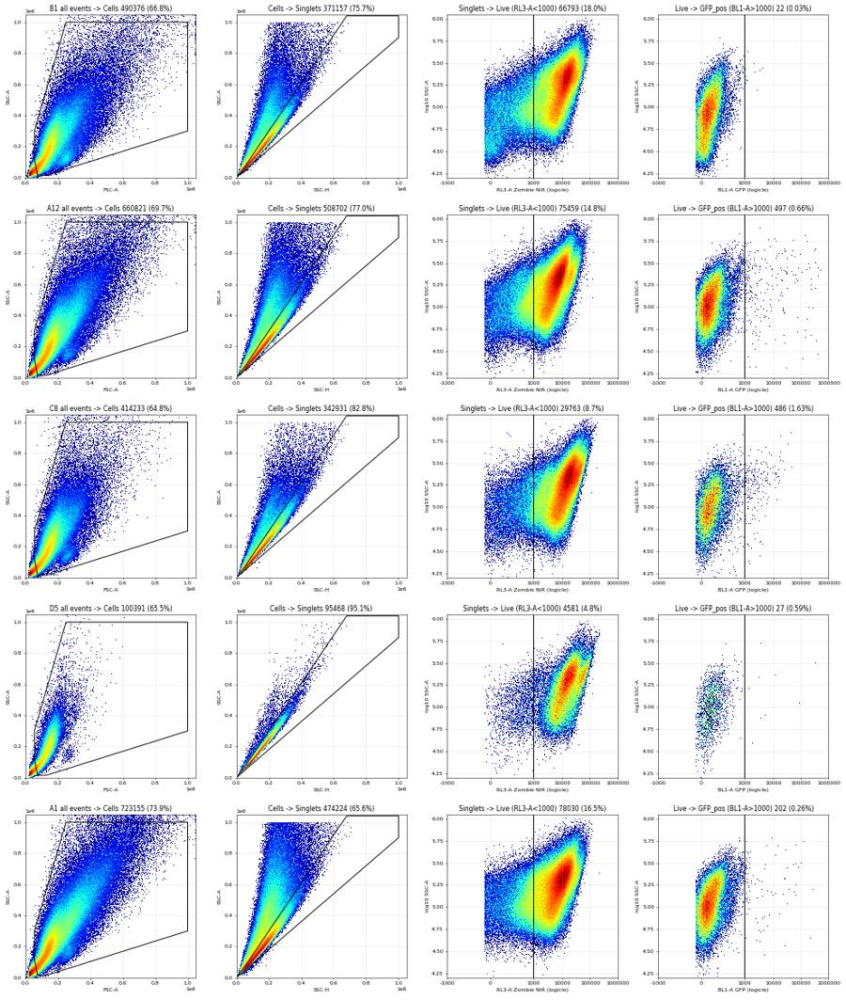
198
tool call · Bash
cd /task/work; python3 - <<'EOF'
import sys; sys.path.insert(0,'/task/work')
from common import *
import gates_def
from matplotlib.path import Path
pc = Path(gates_def.CELLS)
# region left of the upper-left edge: FSC>=45k, SSC<1e6, SSC > line through (55k,300k)-(250k,1e6)
for w in ['A1','A2','B1','C8','D5','B7']:
ev=load(w); f,s=ev[:,1],ev[:,2]
line = 300e3 + (f-55e3)*(700e3/195e3)
ul = (f>45e3)&(s<1e6)&(s>line)
lowleft = (f<55e3)|((f<130e3)&(s<15e3))
satS = s>=1e6; satF = f>=1e6
lowright = (s < 15e3 + (f-130e3)*(285e3/870e3)) & (f>130e3) & ~satF
print(w, 'upper-left excluded %', round(100*ul.mean(),2), ' low-left debris %', round(100*lowleft.mean(),1), ' SSC>=1e6 %', round(100*satS.mean(),2), ' FSC>=1e6 %', round(100*satF.mean(),2), ' below lower-right edge %', round(100*lowright.mean(),2), ' in gate %', round(100*pc.contains_points(np.c_[f,s]).mean(),1))
EOF199
tool output
A1 upper-left excluded % 0.03 low-left debris % 20.4 SSC>=1e6 % 1.38 FSC>=1e6 % 0.24 below lower-right edge % 0.0 in gate % 73.9 A2 upper-left excluded % 0.03 low-left debris % 22.6 SSC>=1e6 % 0.59 FSC>=1e6 % 0.09 below lower-right edge % 0.0 in gate % 72.0 B1 upper-left excluded % 0.03 low-left debris % 26.0 SSC>=1e6 % 0.55 FSC>=1e6 % 0.13 below lower-right edge % 0.01 in gate % 66.8 C8 upper-left excluded % 0.06 low-left debris % 29.0 SSC>=1e6 % 0.28 FSC>=1e6 % 0.01 below lower-right edge % 0.01 in gate % 64.8 D5 upper-left excluded % 0.07 low-left debris % 28.2 SSC>=1e6 % 0.09 FSC>=1e6 % 0.0 below lower-right edge % 0.0 in gate % 65.5 B7 upper-left excluded % 0.03 low-left debris % 25.2 SSC>=1e6 % 0.65 FSC>=1e6 % 0.14 below lower-right edge % 0.02 in gate % 68.8
201
tool call · Bash
cd /task/work; python3 - <<'EOF'
import sys; sys.path.insert(0,'/task/work')
from common import *
rows=[]
for w in WELLS:
ev=load(w); ms=np.load(f'masks/{w}_sing.npy')
r=ev[ms,4]; f=ev[ms,1]; s=ev[ms,2]; sh=ev[ms,7]; v=ev[ms,5]
lr=np.log10(r[r>3000]);
ratio = s/np.maximum(sh,1)
rows.append(dict(well=w, rl3_bright_iqr=round(np.subtract(*np.percentile(lr,[75,25])),3), rl3_bright_med=int(10**np.median(lr)),
ratio_iqr=round(np.subtract(*np.percentile(ratio,[75,25])),3), ratio_med=round(np.median(ratio),3),
vl1_iqr=round(np.subtract(*np.percentile(np.log10(np.clip(v[v>3000],1,None)),[75,25])),3)))
df=pd.DataFrame(rows); print(df.to_string()); print(df.describe().loc[['mean','std']])
EOF202
tool output
well rl3_bright_iqr rl3_bright_med ratio_iqr ratio_med vl1_iqr
0 A1 0.402 8766 0.159 1.203 0.280
1 A2 0.428 8940 0.139 1.203 0.283
2 A3 0.411 8492 0.138 1.197 0.289
3 A4 0.429 10016 0.137 1.202 0.284
4 A5 0.422 8144 0.141 1.199 0.289
5 A6 0.431 9400 0.135 1.201 0.297
6 A7 0.417 13986 0.140 1.197 0.304
7 A8 0.427 12403 0.134 1.200 0.306
8 A9 0.440 11714 0.145 1.200 0.312
9 A10 0.431 10901 0.140 1.200 0.319
10 A11 0.416 9232 0.141 1.197 0.310
11 A12 0.356 7323 0.143 1.199 0.292
12 B1 0.435 11045 0.140 1.195 0.345
13 B2 0.495 12689 0.140 1.197 0.330
14 B3 0.475 14598 0.137 1.196 0.316
15 B4 0.484 12051 0.135 1.193 0.296
16 B5 0.426 9207 0.140 1.195 0.296
17 B6 0.430 8508 0.143 1.195 0.308
18 B7 0.433 12154 0.144 1.196 0.304
19 B8 0.438 11597 0.142 1.199 0.303
20 B9 0.450 12732 0.141 1.201 0.317
21 B10 0.460 11107 0.147 1.200 0.286
22 B11 0.430 9408 0.145 1.199 0.297
23 B12 0.431 9710 0.143 1.201 0.304
24 C1 0.462 14415 0.133 1.194 0.291
25 C2 0.457 13527 0.137 1.195 0.290
26 C3 0.474 14175 0.138 1.197 0.313
27 C4 0.454 12117 0.138 1.200 0.289
28 C5 0.436 10792 0.136 1.196 0.282
29 C6 0.439 9131 0.143 1.198 0.291
30 C7 0.454 14031 0.135 1.189 0.303
31 C8 0.459 13897 0.139 1.195 0.292
32 C9 0.457 11128 0.139 1.197 0.304
33 C10 0.446 9634 0.141 1.198 0.284
34 C11 0.449 9596 0.140 1.199 0.302
35 C12 0.472 8037 0.132 1.196 0.306
36 D1 0.451 11320 0.140 1.192 0.293
37 D2 0.426 10867 0.140 1.196 0.276
38 D3 0.450 10854 0.143 1.197 0.284
39 D4 0.439 10572 0.142 1.198 0.272
40 D5 0.493 15458 0.117 1.192 0.270
41 D6 0.477 12835 0.136 1.193 0.283
rl3_bright_iqr rl3_bright_med ratio_iqr ratio_med vl1_iqr
mean 0.442667 11107.357143 0.139476 1.19731 0.297429
std 0.025678 2075.961638 0.005735 0.00308 0.015275204
thinking
A1 passes as a normal acquisition despite its 2× flow rate and extra coincidence, with the lowest singlet fraction on the plate and the largest Live% gap from its duplicate. I'm generating the per-well QC metrics and flags.csv next.
205
tool call · Bash
cd /task/work; cat > make_flags.py <<'EOF'
import sys; sys.path.insert(0,'/task/work')
from common import *
meta = pd.read_csv('/task/work/meta.csv').set_index('file')
cnt = pd.read_csv('/task/work/fk_counts_raw.csv').set_index('well')
MAX = 1048575.0
rows=[]
for fn, w in zip(lay.file, lay.well):
ev = load(w); t = ev[:,0]/1000.0
resets = np.where(np.diff(ev[:,0])<0)[0]
main = np.ones(len(t),bool)
if len(resets): main[:resets[0]+1]=False
tm = t[main]; T = float(tm.max())
# 1-s bins for summary
h1,_ = np.histogram(tm, bins=np.arange(0, np.floor(T)+1, 1.0))
core = h1[2:-2]; med = float(np.median(core)); cv = float(core.std()/core.mean())
# 0.5-s bins for low/high intervals (exclude final partial bin)
bw=0.5; hb,eb = np.histogram(tm, bins=np.arange(0, np.floor(T/bw)*bw+1e-9, bw)); rb = hb/bw
low = np.where(rb < 0.5*med)[0]; high = np.where(rb > 1.5*med)[0]
def runs(ix):
out=[];
for i in ix:
if out and i==out[-1][1]+1: out[-1][1]=i
else: out.append([i,i])
return [(round(a*bw,1), round((b+1)*bw,1)) for a,b in out]
lowr, highr = runs(low), runs(high)
last2 = float(((tm>T-2)).sum()/2.0)
sat = {c: 100*(ev[:,IDX[c]]>=MAX).mean() for c in ['FSC-A','SSC-A','BL1-A','RL3-A']}
m = meta.loc[fn]
c = cnt.loc[w]
rows.append(dict(file=fn, well=w, total=int(c.total), cells=int(c.Cells), singlets=int(c.Singlets), live=int(c.Live), gfp=int(c.GFP_pos),
dur=T, med_rate=med, cv=cv, low=lowr, high=highr, n_low=len(low), n_high=len(high), min05=float(rb.min()), tmin=float(rb.argmin()*bw), max05=float(rb.max()), tmax=float(rb.argmax()*bw),
last2=last2, end_pct=100*last2/med, sat=sat, flow=int(m['flow']), vol=int(m['vol']), coinc=100*int(m['coinc'])/int(c.total), nresets=len(resets),
reset_n=int(resets[0]+1) if len(resets) else 0, reset_t=(float(t[0]), float(t[resets[0]])) if len(resets) else None))
q = pd.DataFrame(rows)
q.to_pickle('/task/work/qc_final.pkl')
print(q[['well','total','live','gfp','dur','med_rate','cv','n_low','n_high','min05','tmin','max05','tmax','end_pct','flow','coinc','nresets']].round(2).to_string())
print('plate median total', q.total.median(), 'live', q.live.median(), 'gfp', q.gfp.median(), 'sing%cells', (100*q.singlets/q.cells).median(), 'live%sing', (100*q.live/q.singlets).median())
EOF
python3 make_flags.py206
tool output
well total live gfp dur med_rate cv n_low n_high min05 tmin max05 tmax end_pct flow coinc nresets 0 A1 978726 78030 202 46.25 21595.0 0.05 0 0 16978.0 43.5 23012.0 1.0 91.10 200 17.63 0 1 A2 935707 51276 245 97.95 9740.0 0.05 0 0 6550.0 96.5 11084.0 93.0 75.82 100 10.30 0 2 A3 925910 68631 332 97.66 9755.0 0.06 0 0 5766.0 97.0 10764.0 5.5 62.79 100 9.75 0 3 A4 892332 52234 311 97.74 9276.0 0.05 0 0 7558.0 1.5 10108.0 7.5 90.28 100 9.98 0 4 A5 986514 61685 364 97.87 10293.0 0.06 0 0 6808.0 93.0 11428.0 7.5 94.84 100 10.58 0 5 A6 755396 40110 308 97.11 7965.0 0.06 0 0 5734.0 92.0 8708.0 7.5 91.12 100 8.16 0 6 A7 848859 53993 198 97.92 8881.0 0.05 0 0 6726.0 93.5 9598.0 6.0 87.77 100 9.63 0 7 A8 710140 47824 254 97.94 7398.0 0.06 0 0 5098.0 0.0 8094.0 28.5 92.44 100 7.96 0 8 A9 958681 74303 164 97.82 9977.0 0.06 0 0 6932.0 91.5 11036.0 6.0 93.82 100 11.35 0 9 A10 870505 59480 217 97.70 9142.0 0.07 0 0 5386.0 97.0 10166.0 6.0 61.06 100 9.98 0 10 A11 844586 72387 308 97.92 8787.0 0.05 0 0 6970.0 93.0 10752.0 85.0 100.15 100 8.78 0 11 A12 947510 75459 497 97.90 9869.0 0.06 0 0 5510.0 97.0 11944.0 93.0 56.81 100 10.00 0 12 B1 733754 66793 22 97.94 7649.0 0.06 0 0 4496.0 92.0 8774.0 97.0 103.17 100 8.85 0 13 B2 728886 60101 54 97.87 7530.0 0.06 0 0 5794.0 92.5 8346.0 8.0 100.33 100 8.87 0 14 B3 667298 40658 195 97.94 6976.0 0.06 0 0 5184.0 60.0 7830.0 84.5 95.83 100 7.58 0 15 B4 598212 45650 96 97.86 6297.0 0.06 1 0 2994.0 97.0 7632.0 92.5 51.55 100 6.71 0 16 B5 837561 73551 197 97.90 8786.0 0.06 0 0 4882.0 97.0 9686.0 7.0 58.58 100 8.76 0 17 B6 877336 87475 187 97.84 9095.0 0.05 1 0 3974.0 97.0 10612.0 92.0 52.69 100 9.06 0 18 B7 954909 41933 187 97.90 10257.0 0.24 14 5 194.0 0.5 18016.0 30.5 91.03 100 10.26 0 19 B8 918778 46147 303 97.75 9987.0 0.20 9 2 32.0 2.5 15272.0 9.0 58.07 100 9.96 0 20 B9 862070 48268 328 97.96 8919.0 0.05 0 0 7066.0 2.0 10528.0 96.5 103.21 100 9.22 0 21 B10 1083648 53440 294 97.78 11422.0 0.06 1 0 5578.0 97.0 13136.0 92.0 54.92 100 10.99 0 22 B11 988574 52457 388 97.93 10337.0 0.06 0 0 5986.0 97.0 11538.0 92.5 60.81 100 9.95 0 23 B12 904103 39622 453 97.78 9379.0 0.05 0 0 7634.0 1.5 10380.0 7.0 91.64 100 9.31 0 24 C1 624718 19730 174 97.76 6467.0 0.05 0 0 4856.0 0.0 7162.0 7.0 100.03 100 6.15 0 25 C2 695572 28324 308 97.79 7313.0 0.06 1 0 3246.0 97.0 8480.0 16.5 51.70 100 7.00 0 26 C3 656321 36304 156 97.72 6995.0 0.08 4 0 2268.0 97.0 7790.0 8.0 35.56 100 7.30 0 27 C4 679504 29303 219 97.80 7194.0 0.07 2 0 2952.0 97.0 7932.0 7.0 44.56 100 7.07 0 28 C5 689593 26958 189 97.86 7140.0 0.05 0 0 5522.0 0.0 8416.0 53.5 100.78 100 6.95 0 29 C6 891011 36520 186 97.57 9340.0 0.07 2 0 4328.0 97.0 10978.0 91.5 54.38 100 8.95 1 30 C7 649735 28313 161 97.91 6684.0 0.04 0 0 5232.0 0.0 7528.0 8.0 94.86 100 6.56 0 31 C8 639518 29763 486 97.87 6663.0 0.05 0 0 4990.0 92.5 7278.0 8.0 99.45 100 6.42 0 32 C9 801299 48628 377 97.90 8291.0 0.05 0 0 6266.0 0.0 9118.0 95.0 93.71 100 8.61 0 33 C10 927162 52640 315 97.48 9782.0 0.07 1 0 4740.0 96.0 11192.0 90.0 51.12 100 9.75 0 34 C11 868685 41426 198 97.54 9037.0 0.05 0 0 7482.0 95.5 10030.0 7.5 85.77 100 9.09 1 35 C12 578214 23834 114 97.75 6046.0 0.06 0 0 4600.0 97.0 7052.0 95.0 86.79 100 6.05 0 36 D1 800840 44918 111 97.94 8318.0 0.04 0 0 6904.0 96.5 9296.0 7.5 84.60 100 8.08 0 37 D2 894591 50384 275 97.93 9307.0 0.05 0 0 6392.0 96.0 10692.0 52.0 78.42 100 9.12 0 38 D3 915097 69534 136 97.75 9496.0 0.04 0 0 7538.0 95.0 10260.0 7.0 92.29 100 9.91 0 39 D4 925805 54519 156 97.53 9587.0 0.04 0 0 7780.0 1.5 10452.0 6.5 88.51 100 9.69 1 40 D5 153195 4581 27 97.77 1603.0 0.06 0 0 1096.0 0.0 1768.0 9.5 85.43 100 1.50 0 41 D6 726651 21219 83 97.93 7586.0 0.05 0 0 6116.0 94.5 8426.0 7.0 85.43 100 7.12 0 plate median total 855464.5 live 48448.0 gfp 200.0 sing%cells 78.28007827814724 live%sing 10.391710737063343
208
tool call · Bash
cd /task/work; cat > write_flags.py <<'EOF'
import sys; sys.path.insert(0,'/task/work')
import pandas as pd, numpy as np
q = pd.read_pickle('/task/work/qc_final.pkl').set_index('well')
plate_med_total = int(q.total.median()); plate_med_live = int(q.live.median())
def fmt_runs(r, maxn=4):
if not r: return 'none'
s = ', '.join(f'{a:g}-{b:g} s' for a,b in r[:maxn])
return s + (f' (+{len(r)-maxn} more)' if len(r)>maxn else '')
def base(w):
r = q.loc[w]
s = (f"total={r.total}; Cells={r.cells}; Singlets={r.singlets} ({100*r.singlets/r.cells:.1f}% of Cells); Live={r.live} ({100*r.live/r.singlets:.1f}% of Singlets); "
f"GFP_pos={r.gfp} ({100*r.gfp/r.live:.2f}% of Live); acquisition {r.dur:.1f} s at {r.flow} uL/min, median rate {r.med_rate:.0f} ev/s (1-s bin CV {r.cv:.2f}); "
f"low-rate 0.5-s bins (<50% of median): {fmt_runs(r.low)}; bursts (>150%): {fmt_runs(r.high)}; "
f"end-of-run (last 2 s) {r.last2:.0f} ev/s = {r.end_pct:.0f}% of median; "
f"at scale max: FSC-A {r.sat['FSC-A']:.2f}%, SSC-A {r.sat['SSC-A']:.2f}%, BL1-A {r.sat['BL1-A']:.3f}%, RL3-A {r.sat['RL3-A']:.3f}%; coincident {r.coinc:.1f}%")
if r.nresets:
s += (f"; Time resets once: first {r.reset_n} events ({100*r.reset_n/r.total:.1f}%) carry Time {r.reset_t[0]:.2f}-{r.reset_t[1]:.2f} s before the main run restarts at 0.014 s "
f"(restarted acquisition); this block's scatter, Live% and GFP% match the same window of the main run, so counts are not materially affected")
return s
special = {
'A1': ('no','other', "; NOT COMPARABLE: only well acquired at 200 uL/min (other 41 wells 100 uL/min; 155 uL in 46 s vs 163-164 uL in 98 s), "
"so event rate 2.4x the plate median (~9,100 ev/s) and coincident events 17.6% vs 6-11% elsewhere; Singlets 65.6% of Cells is the lowest on the plate (plate median 78.3%); "
"Live 16.5% of Singlets vs 9.9% in duplicate A2 (largest duplicate discordance on plate) and GFP_pos 0.26% vs 0.48% in A2; flow itself was stable. confidence: low"),
'B7': ('no','clog_or_interrupted_flow', "; FLOW UNSTABLE for the first ~60 s: 0.5-s rate ranged 194-18,016 ev/s (median 10,257), 1-s CV 0.24 (all non-flagged wells <=0.08); "
"near-zero flow 0-2 s, repeated stalls and bursts at 2-14 s, step to ~15,000 ev/s at 14 s, then 2-3x rate swings to ~60 s; "
"gated fractions drift between time windows (Singlets 57.3% of events at 15-30 s vs 49.7% at 30-60 s; GFP_pos 0.57% vs 0.38% of Live). confidence: high"),
'B8': ('no','clog_or_interrupted_flow', "; FLOW INTERRUPTED AT START: near-zero flow 0-3.5 s (0.5-s bin minimum 32 ev/s at 2.5 s; 2,974 events in 0-4 s with FSC-A median 57,847 vs 113,526 after 60 s), "
"erratic 4-8 s, then a release burst to 15,272 ev/s at 9 s decaying to the ~10,000 ev/s baseline by ~18 s; 1-s CV 0.20; about 13% of events (0-15 s) were acquired during disturbed flow and cannot be removed without a per-well time gate; "
"the stable part (15-98 s) gives Live 9.3-9.7% of Singlets and GFP_pos 0.66-0.70% of Live. confidence: medium"),
'D5': ('no','too_few_events', "; TOO FEW EVENTS: 153,195 total events vs plate median 855,465 (next lowest C12 578,214) at a steady 1,603 ev/s for the full 97.8 s (CV 0.06, no clog), i.e. very few cells in the sample; "
"Live=4,581 vs plate median 48,448 (next lowest C1 19,730) and GFP_pos=27 events (Poisson CV ~19%, 95% CI ~0.39-0.86% of Live); Live 4.8% of Singlets vs plate median 10.4%. confidence: high"),
}
rows=[]
for w in q.index:
r=q.loc[w]
if w in special:
u,cat,extra = special[w]; ev = base(w)+extra
else:
u,cat = 'yes','ok'; ev = base(w)
if r.end_pct < 60: ev += f"; gradual end-of-run rate decline over the last ~3-5 s only (sample running low, rate never reached zero; <3% of events) - acceptable"
rows.append(dict(file=r.file, well=w, usable=u, reason_category=cat, evidence=ev))
out = pd.DataFrame(rows)
assert len(out)==42 and set(out.usable)<= {'yes','no'}
assert all((out.usable=='yes')==(out.reason_category=='ok'))
assert all(out[out.usable=='no'].evidence.str.contains(r'confidence: (high|medium|low)$'))
out.to_csv('/task/outputs/flags.csv', index=False)
print(out[['well','usable','reason_category']].to_string()); print(out.evidence.iloc[18]); print(out.evidence.iloc[29])
EOF
python3 write_flags.py209
tool output
/task/work/write_flags.py:45: UserWarning: This pattern is interpreted as a regular expression, and has match groups. To actually get the groups, use str.extract. assert all(out[out.usable=='no'].evidence.str.contains(r'confidence: (high|medium|low)$')) well usable reason_category 0 A1 no other 1 A2 yes ok 2 A3 yes ok 3 A4 yes ok 4 A5 yes ok 5 A6 yes ok 6 A7 yes ok 7 A8 yes ok 8 A9 yes ok 9 A10 yes ok 10 A11 yes ok 11 A12 yes ok 12 B1 yes ok 13 B2 yes ok 14 B3 yes ok 15 B4 yes ok 16 B5 yes ok 17 B6 yes ok 18 B7 no clog_or_interrupted_flow 19 B8 no clog_or_interrupted_flow 20 B9 yes ok 21 B10 yes ok 22 B11 yes ok 23 B12 yes ok 24 C1 yes ok 25 C2 yes ok 26 C3 yes ok 27 C4 yes ok 28 C5 yes ok 29 C6 yes ok 30 C7 yes ok 31 C8 yes ok 32 C9 yes ok 33 C10 yes ok 34 C11 yes ok 35 C12 yes ok 36 D1 yes ok 37 D2 yes ok 38 D3 yes ok 39 D4 yes ok 40 D5 no too_few_events 41 D6 yes ok total=954909; Cells=657373; Singlets=498162 (75.8% of Cells); Live=41933 (8.4% of Singlets); GFP_pos=187 (0.45% of Live); acquisition 97.9 s at 100 uL/min, median rate 10257 ev/s (1-s bin CV 0.24); low-rate 0.5-s bins (<50% of median): 0-4.5 s, 6.5-7 s, 12.5-13.5 s, 61.5-62.5 s; bursts (>150%): 29.5-31.5 s, 62.5-63 s; end-of-run (last 2 s) 9336 ev/s = 91% of median; at scale max: FSC-A 0.12%, SSC-A 0.56%, BL1-A 0.000%, RL3-A 0.001%; coincident 10.3%; FLOW UNSTABLE for the first ~60 s: 0.5-s rate ranged 194-18,016 ev/s (median 10,257), 1-s CV 0.24 (all non-flagged wells <=0.08); near-zero flow 0-2 s, repeated stalls and bursts at 2-14 s, step to ~15,000 ev/s at 14 s, then 2-3x rate swings to ~60 s; gated fractions drift between time windows (Singlets 57.3% of events at 15-30 s vs 49.7% at 30-60 s; GFP_pos 0.57% vs 0.38% of Live). confidence: high total=891011; Cells=592444; Singlets=465653 (78.6% of Cells); Live=36520 (7.8% of Singlets); GFP_pos=186 (0.51% of Live); acquisition 97.6 s at 100 uL/min, median rate 9340 ev/s (1-s bin CV 0.07); low-rate 0.5-s bins (<50% of median): 96.5-97.5 s; bursts (>150%): none; end-of-run (last 2 s) 5079 ev/s = 54% of median; at scale max: FSC-A 0.02%, SSC-A 0.31%, BL1-A 0.003%, RL3-A 0.000%; coincident 9.0%; Time resets once: first 4443 events (0.5%) carry Time 3.35-3.89 s before the main run restarts at 0.014 s (restarted acquisition); this block's scatter, Live% and GFP% match the same window of the main run, so counts are not materially affected; gradual end-of-run rate decline over the last ~3-5 s only (sample running low, rate never reached zero; <3% of events) - acceptable
211
tool call · Bash
cd /task/work; python3 - <<'EOF'
import sys; sys.path.insert(0,'/task/work')
from common import *
q = pd.read_pickle('/task/work/qc_final.pkl').set_index('well')
print('median of med_rate (all)', q.med_rate.median(), ' excl A1', q.drop('A1').med_rate.median())
print('cv max non-flagged', q.drop(['A1','B7','B8','D5']).cv.max(), q.drop(['A1','B7','B8','D5']).cv.idxmax())
print('coinc range excl A1', q.drop('A1').coinc.min(), q.drop('A1').coinc.max(), ' excl A1,D5', q.drop(['A1','D5']).coinc.min())
s = 100*q.singlets/q.cells; print('sing% min excl A1', s.drop('A1').min(), s.drop('A1').idxmin(), 'median', s.median())
for w in q.index[q.end_pct<60]:
ev=load(w); t=ev[:,0]/1000; T=t.max()
print(w, 'events in last 5 s %', round(100*(t>T-5).mean(),2), ' last 1 s rate', int((t>T-1).sum()))
EOF212
tool output
median of med_rate (all) 8900.0 excl A1 8881.0 cv max non-flagged 0.07742528374531996 C3 coinc range excl A1 1.496785143118248 11.354350404357653 excl A1,D5 6.045339614744714 sing% min excl A1 72.95509555236558 A9 median 78.28007827814724 A12 events in last 5 s % 3.91 last 1 s rate 5162 B4 events in last 5 s % 3.46 last 1 s rate 2936 B5 events in last 5 s % 3.65 last 1 s rate 4683 B6 events in last 5 s % 3.45 last 1 s rate 4077 B8 events in last 5 s % 3.81 last 1 s rate 5369 B10 events in last 5 s % 3.54 last 1 s rate 5580 C2 events in last 5 s % 3.32 last 1 s rate 3305 C3 events in last 5 s % 2.73 last 1 s rate 2038 C4 events in last 5 s % 3.02 last 1 s rate 2822 C6 events in last 5 s % 3.4 last 1 s rate 4367 C10 events in last 5 s % 3.16 last 1 s rate 5086
213
tool call · Bash
cd /task/work; python3 - <<'EOF'
import re
p='/task/work/write_flags.py'; s=open(p).read()
s=s.replace("so event rate 2.4x the plate median (~9,100 ev/s) and coincident events 17.6% vs 6-11% elsewhere",
"so median event rate 21,595 ev/s = 2.4x the plate median (8,900 ev/s) and coincident events 17.6% of events vs 1.5-11.4% in the other wells")
s=s.replace("1-s CV 0.24 (all non-flagged wells <=0.08)", "1-s CV 0.24 (usable wells 0.04-0.08)")
s=s.replace("gated fractions drift between time windows (Singlets 57.3% of events at 15-30 s vs 49.7% at 30-60 s; GFP_pos 0.57% vs 0.38% of Live)",
"gated fractions drift between time windows (Singlets = 57.3% of all events at 15-30 s vs 49.7% at 30-60 s; GFP_pos 0.57% of Live at 4-15 s vs 0.38% at 30-60 s)")
s=s.replace('ev += f"; gradual end-of-run rate decline over the last ~3-5 s only (sample running low, rate never reached zero; <3% of events) - acceptable"',
'ev += f"; gradual end-of-run rate decline in the last ~3-5 s only (sample running low; rate never reached zero, scatter stays cell-like; last 5 s = {r.end5:.1f}% of events) - acceptable"')
s=s.replace("q = pd.read_pickle('/task/work/qc_final.pkl').set_index('well')",
"q = pd.read_pickle('/task/work/qc_final.pkl').set_index('well')\nfrom common import load\nq['end5'] = [100*((lambda t: (t>t.max()-5).mean())(load(w)[:,0]/1000.0)) for w in q.index]")
s=s.replace("contains(r'confidence: (high|medium|low)$')","contains(r'confidence: (?:high|medium|low)$')")
open(p,'w').write(s)
EOF
python3 write_flags.py | tail -2 | cut -c1-600; python3 -c "
import pandas as pd; f=pd.read_csv('/task/outputs/flags.csv');
for w in ['A1','B8','D5','C3']: print(w, f.set_index('well').loc[w,'evidence'][-700:], '\n')"214
tool output
total=954909; Cells=657373; Singlets=498162 (75.8% of Cells); Live=41933 (8.4% of Singlets); GFP_pos=187 (0.45% of Live); acquisition 97.9 s at 100 uL/min, median rate 10257 ev/s (1-s bin CV 0.24); low-rate 0.5-s bins (<50% of median): 0-4.5 s, 6.5-7 s, 12.5-13.5 s, 61.5-62.5 s; bursts (>150%): 29.5-31.5 s, 62.5-63 s; end-of-run (last 2 s) 9336 ev/s = 91% of median; at scale max: FSC-A 0.12%, SSC-A 0.56%, BL1-A 0.000%, RL3-A 0.001%; coincident 10.3%; FLOW UNSTABLE for the first ~60 s: 0.5-s rate ranged 194-18,016 ev/s (median 10,257), 1-s CV 0.24 (usable wells 0.04-0.08); near-zero flow 0-2 s, total=891011; Cells=592444; Singlets=465653 (78.6% of Cells); Live=36520 (7.8% of Singlets); GFP_pos=186 (0.51% of Live); acquisition 97.6 s at 100 uL/min, median rate 9340 ev/s (1-s bin CV 0.07); low-rate 0.5-s bins (<50% of median): 96.5-97.5 s; bursts (>150%): none; end-of-run (last 2 s) 5079 ev/s = 54% of median; at scale max: FSC-A 0.02%, SSC-A 0.31%, BL1-A 0.003%, RL3-A 0.000%; coincident 9.0%; Time resets once: first 4443 events (0.5%) carry Time 3.35-3.89 s before the main run restarts at 0.014 s (restarted acquisition); this block's scatter, Live% and GFP% match the same window of the A1 0.05); low-rate 0.5-s bins (<50% of median): none; bursts (>150%): none; end-of-run (last 2 s) 19672 ev/s = 91% of median; at scale max: FSC-A 0.19%, SSC-A 1.17%, BL1-A 0.001%, RL3-A 0.000%; coincident 17.6%; NOT COMPARABLE: only well acquired at 200 uL/min (other 41 wells 100 uL/min; 155 uL in 46 s vs 163-164 uL in 98 s), so median event rate 21,595 ev/s = 2.4x the plate median (8,900 ev/s) and coincident events 17.6% of events vs 1.5-11.4% in the other wells; Singlets 65.6% of Cells is the lowest on the plate (plate median 78.3%); Live 16.5% of Singlets vs 9.9% in duplicate A2 (largest duplicate discordance on plate) and GFP_pos 0.26% vs 0.48% in A2; flow itself was stable. confidence: low B8 bins (<50% of median): 0-4 s, 7-7.5 s; bursts (>150%): 9-10 s; end-of-run (last 2 s) 5799 ev/s = 58% of median; at scale max: FSC-A 0.04%, SSC-A 0.37%, BL1-A 0.000%, RL3-A 0.000%; coincident 10.0%; FLOW INTERRUPTED AT START: near-zero flow 0-3.5 s (0.5-s bin minimum 32 ev/s at 2.5 s; 2,974 events in 0-4 s with FSC-A median 57,847 vs 113,526 after 60 s), erratic 4-8 s, then a release burst to 15,272 ev/s at 9 s decaying to the ~10,000 ev/s baseline by ~18 s; 1-s CV 0.20; about 13% of events (0-15 s) were acquired during disturbed flow and cannot be removed without a per-well time gate; the stable part (15-98 s) gives Live 9.3-9.7% of Singlets and GFP_pos 0.66-0.70% of Live. confidence: medium D5 581 (4.8% of Singlets); GFP_pos=27 (0.59% of Live); acquisition 97.8 s at 100 uL/min, median rate 1603 ev/s (1-s bin CV 0.06); low-rate 0.5-s bins (<50% of median): none; bursts (>150%): none; end-of-run (last 2 s) 1370 ev/s = 85% of median; at scale max: FSC-A 0.00%, SSC-A 0.08%, BL1-A 0.005%, RL3-A 0.000%; coincident 1.5%; TOO FEW EVENTS: 153,195 total events vs plate median 855,465 (next lowest C12 578,214) at a steady 1,603 ev/s for the full 97.8 s (CV 0.06, no clog), i.e. very few cells in the sample; Live=4,581 vs plate median 48,448 (next lowest C1 19,730) and GFP_pos=27 events (Poisson CV ~19%, 95% CI ~0.39-0.86% of Live); Live 4.8% of Singlets vs plate median 10.4%. confidence: high C3 total=656321; Cells=425764; Singlets=340548 (80.0% of Cells); Live=36304 (10.7% of Singlets); GFP_pos=156 (0.43% of Live); acquisition 97.7 s at 100 uL/min, median rate 6995 ev/s (1-s bin CV 0.08); low-rate 0.5-s bins (<50% of median): 95.5-97.5 s; bursts (>150%): none; end-of-run (last 2 s) 2488 ev/s = 36% of median; at scale max: FSC-A 0.04%, SSC-A 0.29%, BL1-A 0.000%, RL3-A 0.000%; coincident 7.3%; gradual end-of-run rate decline in the last ~3-5 s only (sample running low; rate never reached zero, scatter stays cell-like; last 5 s = 2.7% of events) - acceptable
216
tool call · Bash
cd /task/work; python3 - <<'EOF'
p='/task/work/write_flags.py'; s=open(p).read()
s=s.replace("rate never reached zero, scatter stays cell-like; last 5 s","rate never reached zero; last 5 s")
s=s.replace("(restarted acquisition)","(apparently a restarted acquisition)")
open(p,'w').write(s)
import pandas as pd
c=pd.read_csv('/task/outputs/counts.csv'); lay=pd.read_csv('/task/inputs/plate_layout.csv')
pv=c.pivot(index='well',columns='population',values='pct_of_parent')
ws=list(lay.well)
for i in range(0,42,2):
a,b=ws[i],ws[i+1]; print(a,b, 'Live', round(pv.loc[a,'Live'],1), round(pv.loc[b,'Live'],1), 'ratio', round(max(pv.loc[a,'Live'],pv.loc[b,'Live'])/min(pv.loc[a,'Live'],pv.loc[b,'Live']),2), ' GFP', round(pv.loc[a,'GFP_pos'],2), round(pv.loc[b,'GFP_pos'],2))
EOF
python3 write_flags.py >/dev/null && echo ok217
tool output
A1 A2 Live 16.5 9.9 ratio 1.66 GFP 0.26 0.48 A3 A4 Live 13.0 10.3 ratio 1.27 GFP 0.48 0.6 A5 A6 Live 11.3 8.9 ratio 1.26 GFP 0.59 0.77 A7 A8 Live 11.6 11.5 ratio 1.0 GFP 0.37 0.53 A9 A10 Live 15.2 12.5 ratio 1.22 GFP 0.22 0.36 A11 A12 Live 15.6 14.8 ratio 1.05 GFP 0.43 0.66 B1 B2 Live 18.0 16.4 ratio 1.1 GFP 0.03 0.09 B3 B4 Live 11.5 14.1 ratio 1.23 GFP 0.48 0.21 B5 B6 Live 16.4 19.2 ratio 1.17 GFP 0.27 0.21 B7 B8 Live 8.4 9.5 ratio 1.13 GFP 0.45 0.66 B9 B10 Live 10.3 9.5 ratio 1.08 GFP 0.68 0.55 B11 B12 Live 10.0 8.3 ratio 1.21 GFP 0.74 1.14 C1 C2 Live 5.7 7.6 ratio 1.33 GFP 0.88 1.09 C3 C4 Live 10.7 7.9 ratio 1.35 GFP 0.43 0.75 C5 C6 Live 7.1 7.8 ratio 1.11 GFP 0.7 0.51 C7 C8 Live 8.4 8.7 ratio 1.04 GFP 0.57 1.63 C9 C10 Live 11.3 10.7 ratio 1.06 GFP 0.78 0.6 C11 C12 Live 8.8 7.2 ratio 1.23 GFP 0.48 0.48 D1 D2 Live 10.4 10.4 ratio 1.0 GFP 0.25 0.55 D3 D4 Live 14.6 10.9 ratio 1.34 GFP 0.2 0.29 D5 D6 Live 4.8 5.2 ratio 1.08 GFP 0.59 0.39 ok
219
agent
Next: a gating overview figure for documentation, then notes.md.
220
tool call · Bash
cd /task/work; python3 plot_gates.py B1,A5,B7,D5 /task/outputs/gating_overview.png 55 && ls -la /task/outputs
221
tool output
total 580 drwxr-xr-x 2 root root 4096 Nov 10 17:36 . drwxr-xr-x 5 root root 4096 Nov 10 17:19 .. -rw-r--r-- 1 root root 11270 Nov 10 17:33 counts.csv -rw-r--r-- 1 root root 22880 Nov 10 17:36 flags.csv -rw-r--r-- 1 root root 3621 Nov 10 17:33 gates.xml -rw-r--r-- 1 root root 543348 Nov 10 17:36 gating_overview.png
222
tool call · Read
{
"file_path": "/task/outputs/gating_overview.png"
}223
tool output
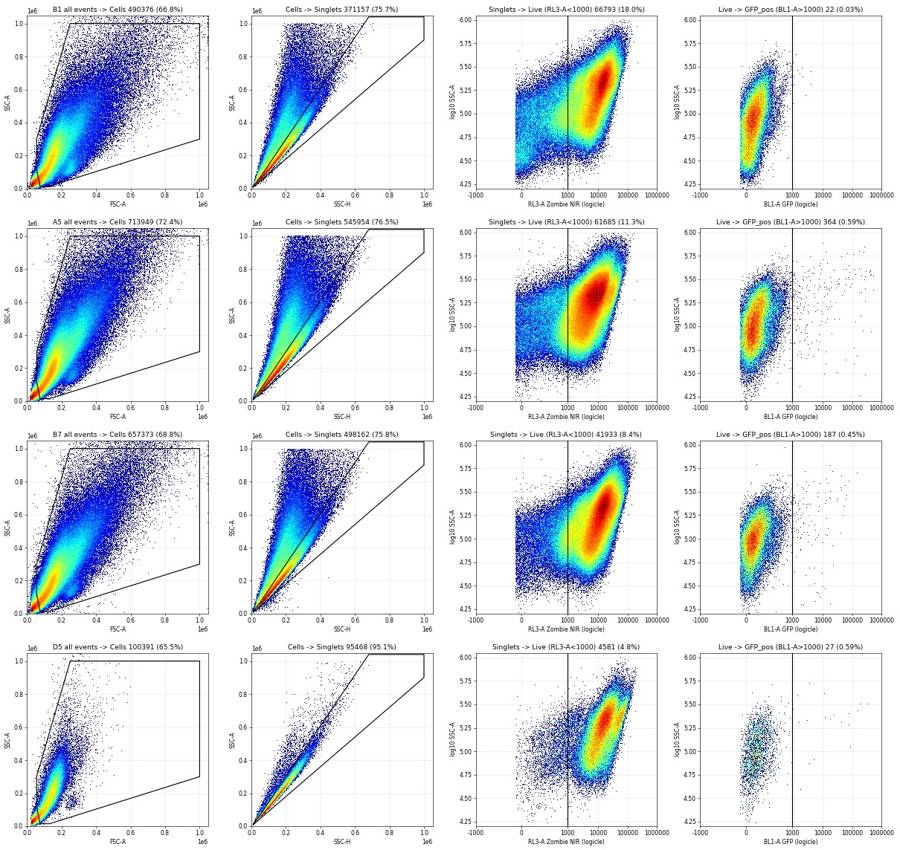
225
tool call · Write
{
"file_path": "/task/outputs/notes.md",
"content": "# Plate 230306 (AAV serotype panel, Rep2): FlowKit gating notes\n\n## Gates\nI built one strategy (`gates.xml`, FlowKit 1.2.3) on raw, uncompensated data and applied it unchanged to all 42 files. The tree is Cells \u2192 Singlets \u2192 Live \u2192 GFP_pos, with one gate per population. The counts in `counts.csv` come from `gate_sample` run with the reloaded `gates.xml`.\n- **Cells**: PolygonGate on FSC-A \u00d7 SSC-A in raw linear units. Vertices: (75k,15k), (130k,15k), (1.0M,300k), (1.0M,1.0M), (250k,1.0M), (55k,300k), (55k,120k).\n - The lower-left edge sits in the shallow valley between the debris peak (log FSC-A \u2248 4.4\u20134.7) and the cell peak (log FSC-A \u2248 5.15). This removes 20\u201329% of events as debris.\n - The top and right edges at 1.0e6 exclude events at the 1,048,575 scale maximum: 0.1\u20131.4% of events on SSC-A, \u22640.3% on FSC-A.\n- **Singlets**: narrow PolygonGate on SSC-H \u00d7 SSC-A along the diagonal. The SSC-A/SSC-H ratio runs from 0.9 to 1.35 at low SSC-H, widening to 1.53 at high SSC-H (the singlet peak ratio is \u22481.2). Events with too much SSC-A for their SSC-H fall outside; 73\u201382% of Cells are kept (A1 65.6%, D5 95.1%).\n- **Live**: 1-D RectangleGate RL3-A < 1000, with no lower limit, so every SSC-A value is kept.\n - On Singlets, plotted as RL3-A (logicle) vs SSC-A, the Zombie-dim cloud spans about \u2212300 to 500. The Zombie-bright cloud peaks at about 1e4 and its left edge starts at about 600\u20131000 across the whole SSC range.\n - The 1-D histogram has no true minimum, only a shoulder. So I set the cut-off at the gap seen in 2-D plots of A5, A11, B1, B6, C7, C9 and D3: RL3-A vs SSC-A, RL3-A vs FSC-A, and RL3-A vs NCAM.\n - Two independent checks: the scatter-defined live cells (FSC-A 200\u2013400k, low SSC-A) have Zombie NIR levels that fall off by about 1000, and the NCAM-bright neurons are dim below about 1000.\n - All 42 overlaid histograms show the gap in the same place. Live is 4.8\u201319.2% of Singlets (median 10.4%); viability is low on this plate.\n- **GFP_pos**: 1-D RectangleGate BL1-A > 1000, open to the top of the axis.\n - I judged the edge on B1 and B2, the wells with the fewest GFP-bright Live events (7 and 20 events above 2000). The upper edge of their GFP-negative Live population, at high SSC-A, is about 750\u2013950 at the 99.9th percentile and about 900\u20131500 at the 99.95th.\n - A cut at 1000 leaves 22 (0.03%) and 54 (0.09%) events above it in B1 and B2. GFP_pos is 0.03\u20131.6% of Live across the plate.\n\n## Quality control\nEvery file was checked on four fronts:\n1. **Header keywords**: date (all 06-Mar-2023), voltages (all match the notebook: FSC 30, SSC 300, BL1 250, RL3 300, VL1 300), $PnS labels, $WELLID/$FIL against the file name, threshold, flow rate, volume and coincident count.\n2. **Time**: event rate in 0.5-s and 1-s bins against the well's median. I recorded intervals below 50% of the median, bursts above 150%, the CV of the 1-s rate, the end-of-run rate, and whether Time increases throughout.\n3. **Saturation**: % of events at 1,048,575 on each channel (SSC-A \u22641.4%, BL1-A \u22640.012% everywhere).\n4. **Counts and duplicates**: total and gated counts compared across the plate, and agreement between duplicate wells.\n\nFour wells are flagged:\n- **B7** (clog, high): erratic flow for about 60 s (rate 194\u201318,016 ev/s; CV 0.24 against 0.04\u20130.08 in usable wells).\n- **B8** (clog, medium): flow nearly stopped for 0\u20133.5 s, then a release burst at 9 s, affecting about 13% of events.\n- **D5** (too few events, high): 153k events at a steady 1.6k ev/s, giving 4,581 Live and 27 GFP_pos.\n- **A1** (other, low): the only well run at 200 \u00b5L/min instead of 100. It has 17.6% coincident events, the lowest Singlets fraction on the plate, and differs most from its duplicate in Live%.\n\nKept as usable, with the issue noted in the evidence:\n- **End-of-run decline**: in 11 wells (C3 worst, falling to 36% of its median) the rate drops gradually over the last 3\u20135 s but never reaches zero. This covers \u22644% of events, so these wells are not counted as having run dry.\n- **Time reset in C6, C11 and D4**: a block of about 4,100\u20134,400 events (0.5%) with Time 3.3\u20133.9 s comes before the main run, which looks like a restarted acquisition. Its scatter, Live% and GFP% match the same time window of the main run.\n\n## Deviations\nNone in gate order, parents, axes or gate types. Notes:\n1. Live and GFP_pos are the 1-D RectangleGates that `gating_strategy.md` lists as accepted. Their bounds are in raw units; logicle was used only for display.\n2. The Zombie NIR \"valley\" is a shoulder rather than a density minimum on the 1-D Singlets histogram, so I placed the cut-off at the gap in the 2-D plots (see Gates).\n3. No time gating or per-well changes were made, so the disturbed intervals in flagged wells stay in their counts.\n"
}226
tool output
File created successfully at: /task/outputs/notes.md (file state is current in your context — no need to Read it back)
228
tool call · Bash
cd /task/work; python3 - <<'EOF'
import pandas as pd
c=pd.read_csv('/task/outputs/counts.csv'); pv=c.pivot(index='well',columns='population',values='pct_of_parent')
print('Cells% of all', pv.Cells.min(), pv.Cells.idxmin(), pv.Cells.max(), pv.Cells.idxmax())
s=pv.Singlets.drop(['A1','D5']); print('Singlets% excl A1,D5', s.min(), s.idxmin(), s.max(), s.idxmax())
q=pd.read_pickle('qc_final.pkl').set_index('well')
print('SSC-A sat max', max(x['SSC-A'] for x in q.sat), 'FSC-A sat max', max(x['FSC-A'] for x in q.sat), 'BL1', max(x['BL1-A'] for x in q.sat), 'RL3', max(x['RL3-A'] for x in q.sat))
print('end<60 usable', [w for w in q.index if q.loc[w,'end_pct']<60 and w not in ('A1','B7','B8','D5')])
EOF229
tool output
Cells% of all 63.2669 C7 73.8874 A1 Singlets% excl A1,D5 72.9551 A9 84.5356 C12 SSC-A sat max 1.1735664527150602 FSC-A sat max 0.31918855177060984 BL1 0.011503114136331812 RL3 0.000628332123793995 end<60 usable ['A12', 'B4', 'B5', 'B6', 'B10', 'C2', 'C3', 'C4', 'C6', 'C10']
230
tool call · Bash
cd /task/outputs; python3 - <<'EOF'
p='/task/outputs/notes.md'; s=open(p).read()
reps = [
("This removes 20–29% of events as debris.", "Overall, 26–37% of events fall outside Cells, mostly debris."),
("0.1–1.4% of events on SSC-A, ≤0.3% on FSC-A.", "0.08–1.2% of events on SSC-A, ≤0.32% on FSC-A."),
("73–82% of Cells are kept (A1 65.6%, D5 95.1%).", "73–85% of Cells are kept (A1 65.6%, D5 95.1%)."),
("(SSC-A ≤1.4%, BL1-A ≤0.012% everywhere)", "(SSC-A ≤1.2%, FSC-A ≤0.32%, BL1-A ≤0.012%, RL3-A ≤0.001% in every well)"),
("in 11 wells (C3 worst, falling to 36% of its median)", "in 10 usable wells (A12, B4, B5, B6, B10, C2, C3, C4, C6, C10; C3 worst, falling to 36% of its median)"),
]
for a,b in reps:
assert a in s, a
s=s.replace(a,b)
open(p,'w').write(s)
print(len(s.split()), 'words')
EOF231
tool output
842 words
233
agent
notes.md is 842 words, over the one-page limit, so I'm tightening it.
234
tool call · Write
{
"file_path": "/task/outputs/notes.md",
"content": "# Plate 230306 (AAV serotype panel, Rep2): FlowKit notes\n\n## Gates\nI built one strategy (`gates.xml`) on raw, uncompensated data and applied it unchanged to all 42 files. The tree is Cells \u2192 Singlets \u2192 Live \u2192 GFP_pos. The counts come from `gate_sample` run with the reloaded XML.\n- **Cells**: PolygonGate on linear FSC-A \u00d7 SSC-A.\n - The lower-left edge (FSC-A about 55\u2013130k) sits in the valley between the debris peak and the cell peak.\n - The top and right edges at 1.0e6 exclude events at the scale maximum (SSC-A 0.08\u20131.2% of events, FSC-A \u22640.3%).\n - 26\u201337% of events fall outside the gate.\n- **Singlets**: narrow PolygonGate on SSC-H \u00d7 SSC-A along the diagonal, with SSC-A/SSC-H between 0.9 and 1.35\u20131.53 (singlet peak \u22481.2). 73\u201385% of Cells are kept (A1 65.6%, D5 95.1%).\n- **Live**: 1-D RectangleGate RL3-A < 1000, so every SSC-A value is kept.\n - On Singlets, plotted as RL3-A vs SSC-A, the Zombie-dim cloud spans about \u2212300 to 500 and the bright cloud peaks at about 1e4. The bright cloud's left edge starts at about 600\u20131000 at every SSC-A level.\n - The 1-D histogram shows only a shoulder there, so I set the cut-off at the gap seen in 2-D plots of A5, A11, B1, B6, C7, C9 and D3: RL3-A vs SSC-A, vs FSC-A and vs NCAM.\n - Checks: Zombie NIR in scatter-defined live cells (FSC-A 200\u2013400k, low SSC-A) falls off by about 1000, and NCAM-bright neurons are dim below it.\n - The gap sits in the same place in all 42 overlaid histograms. Live is 4.8\u201319.2% of Singlets (median 10.4%).\n- **GFP_pos**: 1-D RectangleGate BL1-A > 1000, open to the top of the axis.\n - The cut-off was set on B1 and B2, the wells with the fewest GFP-bright Live events (7 and 20 events above 2000). The upper edge of their GFP-negative population is 750\u2013950 at the 99.9th percentile.\n - At 1000, 22 events (0.03%) in B1 and 54 (0.09%) in B2 fall above it. GFP_pos is 0.03\u20131.6% of Live across the plate.\n\n## Quality control\nEvery file was checked on four fronts:\n1. **Header**: date, voltages (all match the notebook), labels, $WELLID/$FIL against the file name, threshold, flow rate, volume and coincident count.\n2. **Time**: rate in 0.5-s and 1-s bins. I recorded bins below 50% or above 150% of the well median, the CV of the 1-s rate, the rate over the last 2 s, and whether Time increases throughout.\n3. **Saturation**: % of events at 1,048,575 (BL1-A \u22640.012%, RL3-A \u22640.001%).\n4. **Counts and duplicates**: total and gated counts, and agreement between duplicate wells.\n\nFlagged wells:\n- **B7** (clog, high): erratic flow for about 60 s (194\u201318,016 ev/s; CV 0.24 against 0.04\u20130.08 in usable wells).\n- **B8** (clog, medium): flow nearly stopped for 0\u20133.5 s, then a burst at 9 s, affecting about 13% of events.\n- **D5** (too few events, high): 153k events at a steady 1.6k ev/s, giving 4,581 Live and 27 GFP_pos.\n- **A1** (other, low): the only well run at 200 \u00b5L/min. It has 17.6% coincident events, the lowest Singlets fraction, and the largest Live% gap from its duplicate (16.5% vs 9.9%).\n\nKept as usable, noted in the evidence:\n- **End-of-run decline** in 10 wells (A12, B4, B5, B6, B10, C2, C3, C4, C6, C10): the rate falls gradually over the last 3\u20135 s, to 36\u201360% of the median, but never reaches zero. This covers \u22644% of events, so it is not a run-dry.\n- **Time reset** in C6, C11 and D4: 0.5% of events with Time 3.3\u20133.9 s come before the main run, apparently from a restarted acquisition. These events match the main run in the same time window.\n\n## Deviations\nNone in gate order, parents, axes or gate types. Notes:\n1. Live and GFP_pos use the accepted 1-D RectangleGate form with raw-unit bounds; logicle was used only for display.\n2. The Zombie NIR \"valley\" is a shoulder, not a minimum, on the 1-D histogram, so I placed the cut-off at the gap in the 2-D plots.\n3. There is no time gating, so the disturbed intervals stay in the flagged wells' counts.\n"
}235
tool output
The file /task/outputs/notes.md has been updated successfully. (file state is current in your context — no need to Read it back)
237
tool call · Bash
cd /task/outputs; sed -i 's/FSC-A ≤0.3%)/FSC-A ≤0.32%)/; s/to 36–60% of the median/to 36–59% of the median/' notes.md; wc -w notes.md; grep -n '^## ' notes.md; python3 - <<'EOF'
import pandas as pd, flowkit as fk
c=pd.read_csv('/task/outputs/counts.csv'); f=pd.read_csv('/task/outputs/flags.csv'); lay=pd.read_csv('/task/inputs/plate_layout.csv')
print(list(c.columns), len(c)); print(list(f.columns), len(f))
assert set(c.file)==set(lay.file) and set(f.file)==set(lay.file)
assert (c.groupby('file').population.apply(list).apply(lambda x: x==['Cells','Singlets','Live','GFP_pos'])).all()
assert c['count'].dtype.kind=='i' and c.pct_of_parent.between(0,100).all()
# parent consistency
pv=c.pivot(index='file',columns='population',values='count')
assert (pv.Cells>=pv.Singlets).all() and (pv.Singlets>=pv.Live).all() and (pv.Live>=pv.GFP_pos).all()
s=fk.parse_gating_xml('/task/outputs/gates.xml'); print(s.get_gate_ids())
print(f.groupby(['usable','reason_category']).well.apply(list))
print(f[f.usable=='no'].evidence.str[-20:].tolist())
EOF238
tool output
685 notes.md
3:## Gates
19:## Quality control
36:## Deviations
['file', 'well', 'population', 'count', 'parent_population', 'pct_of_parent'] 168
['file', 'well', 'usable', 'reason_category', 'evidence'] 42
[('Cells', ('root',)), ('Singlets', ('root', 'Cells')), ('Live', ('root', 'Cells', 'Singlets')), ('GFP_pos', ('root', 'Cells', 'Singlets', 'Live'))]
usable reason_category
no clog_or_interrupted_flow [B7, B8]
other [A1]
too_few_events [D5]
yes ok [A2, A3, A4, A5, A6, A7, A8, A9, A10, A11, A12...
Name: well, dtype: object
['ble. confidence: low', 's). confidence: high', '. confidence: medium', '4%. confidence: high']
[This command modified 1 file you've previously read: notes.md. Call Read before editing.]240
agent
All 42 wells are gated down to GFP+ live single cells, and four wells are flagged as not usable. The gate tree is saved in `gates.xml`, reloads correctly with `parse_gating_xml`, and `counts.csv` comes from running that reloaded file on each well.
**Gates (one set for the whole plate)**
- **Cells:** polygon on FSC-A vs SSC-A. It cuts out the low-FSC/SSC debris and stops just below the scale maximum. 26–37% of events fall outside it.
- **Singlets:** narrow polygon along the SSC-H vs SSC-A diagonal. It keeps 73–85% of Cells.
- **Live:** Zombie NIR (RL3-A) below 1000. There is no clean dip between the dim and bright populations in a single-channel histogram, only a shoulder. I put the cut at the gap visible in the 2-D plots, and it sits in the same place in every well. Viability is low on this plate: Live is 4.8–19.2% of Singlets, median 10.4%.
- **GFP_pos:** GFP (BL1-A) above 1000. I set it just above the GFP-negative edge in B1 and B2, the wells with the fewest GFP-bright cells. GFP_pos is 0.03–1.6% of Live across the plate.
These two fluorescence cut-offs are judgement calls, so they are the main thing to look at if you want to change the gating.
**Wells flagged not usable**
| Well | Reason | Confidence | Evidence |
|---|---|---|---|
| B7 | Clog / unstable flow | high | Rate swung between 194 and 18,016 events/s for the first ~60 s; the gated percentages drift over that time. |
| B8 | Interrupted flow at start | medium | Almost no flow for the first 3.5 s, then a burst at 9 s; about 13% of events. The rest of the run is stable. |
| D5 | Too few events | high | 153k events (plate median 855k) at a steady low rate, so few cells rather than a clog. Leaves 4,581 Live and only 27 GFP_pos. |
| A1 | Different acquisition setting | low | The only well run at 200 µL/min (all others 100). It has the most coincident events and the lowest singlet fraction, and its Live % differs most from its duplicate A2 (16.5% vs 9.9%). |
A1 is the uncertain one. Its rate was stable and its distributions look normal, so you could reasonably decide to keep it.
**Kept as usable, with the issue recorded in the evidence column**
- **C6, C11 and D4:** each file starts with an extra block of about 4,100–4,400 events (0.5%) whose Time values reset, which looks like a restarted acquisition. Those events match the same time window of the main run, so the counts are not materially affected.
- **10 wells with an end-of-run drop:** the rate falls gradually over the last 3–5 s but never reaches zero. That covers 4% of events or fewer, so I did not count these as running dry.
Nothing else looked wrong. The date, voltages and channel labels match the notebook in every file, and saturation is negligible (at most 1.2% of events on SSC-A).
The gates follow `gating_strategy.md` with no departures. Live and GFP_pos use the single-channel rectangle form that the strategy allows. No time gating or per-well changes were made, so the disturbed stretches in B7 and B8 are still included in their counts.
Files are in `/task/outputs/`:
- `counts.csv`
- `flags.csv`
- `notes.md`
- `gates.xml`
- `gating_overview.png` (extra: the gates drawn on B1, A5, B7 and D5)
final result
All 42 wells are gated down to GFP+ live single cells, and four wells are flagged as not usable. The gate tree is saved in `gates.xml`, reloads correctly with `parse_gating_xml`, and `counts.csv` comes from running that reloaded file on each well. **Gates (one set for the whole plate)** - **Cells:** polygon on FSC-A vs SSC-A. It cuts out the low-FSC/SSC debris and stops just below the scale maximum. 26–37% of events fall outside it. - **Singlets:** narrow polygon along the SSC-H vs SSC-A diagonal. It keeps 73–85% of Cells. - **Live:** Zombie NIR (RL3-A) below 1000. There is no clean dip between the dim and bright populations in a single-channel histogram, only a shoulder. I put the cut at the gap visible in the 2-D plots, and it sits in the same place in every well. Viability is low on this plate: Live is 4.8–19.2% of Singlets, median 10.4%. - **GFP_pos:** GFP (BL1-A) above 1000. I set it just above the GFP-negative edge in B1 and B2, the wells with the fewest GFP-bright cells. GFP_pos is 0.03–1.6% of Live across the plate. These two fluorescence cut-offs are judgement calls, so they are the main thing to look at if you want to change the gating. **Wells flagged not usable** | Well | Reason | Confidence | Evidence | |---|---|---|---| | B7 | Clog / unstable flow | high | Rate swung between 194 and 18,016 events/s for the first ~60 s; the gated percentages drift over that time. | | B8 | Interrupted flow at start | medium | Almost no flow for the first 3.5 s, then a burst at 9 s; about 13% of events. The rest of the run is stable. | | D5 | Too few events | high | 153k events (plate median 855k) at a steady low rate, so few cells rather than a clog. Leaves 4,581 Live and only 27 GFP_pos. | | A1 | Different acquisition setting | low | The only well run at 200 µL/min (all others 100). It has the most coincident events and the lowest singlet fraction, and its Live % differs most from its duplicate A2 (16.5% vs 9.9%). | A1 is the uncertain one. Its rate was stable and its distributions look normal, so you could reasonably decide to keep it. **Kept as usable, with the issue recorded in the evidence column** - **C6, C11 and D4:** each file starts with an extra block of about 4,100–4,400 events (0.5%) whose Time values reset, which looks like a restarted acquisition. Those events match the same time window of the main run, so the counts are not materially affected. - **10 wells with an end-of-run drop:** the rate falls gradually over the last 3–5 s but never reaches zero. That covers 4% of events or fewer, so I did not count these as running dry. Nothing else looked wrong. The date, voltages and channel labels match the notebook in every file, and saturation is negligible (at most 1.2% of events on SSC-A). The gates follow `gating_strategy.md` with no departures. Live and GFP_pos use the single-channel rectangle form that the strategy allows. No time gating or per-well changes were made, so the disturbed stretches in B7 and B8 are still included in their counts. Files are in `/task/outputs/`: - `counts.csv` - `flags.csv` - `notes.md` - `gates.xml` - `gating_overview.png` (extra: the gates drawn on B1, A5, B7 and D5)